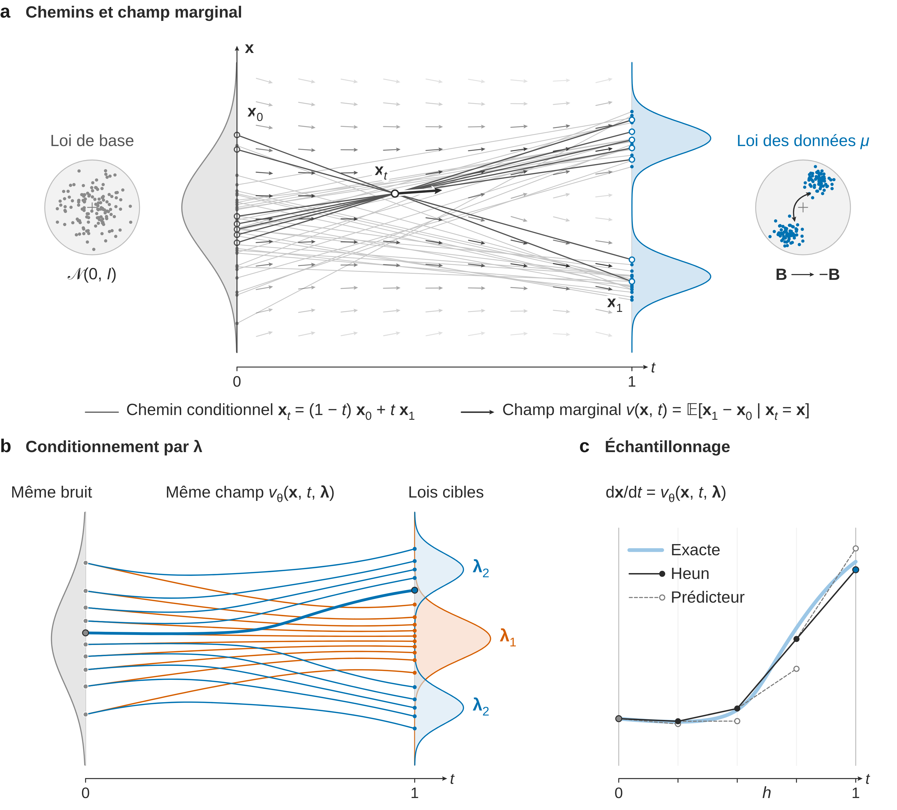
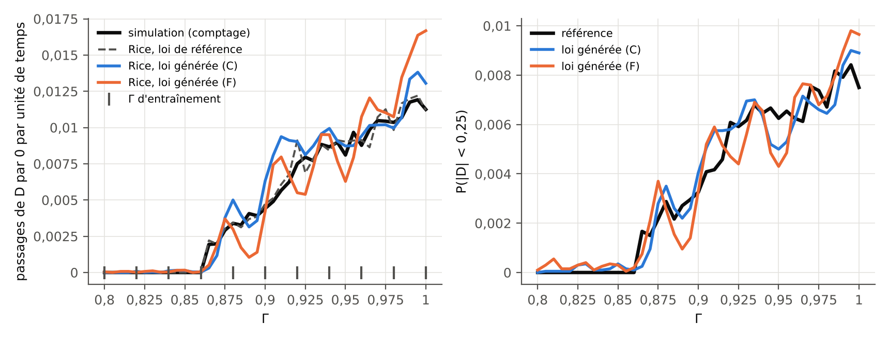
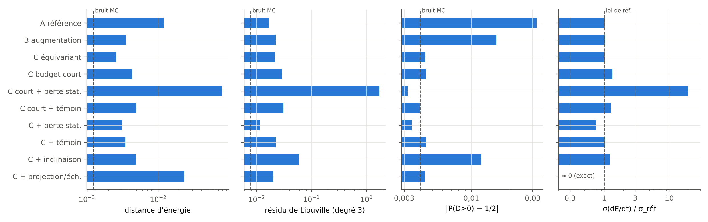
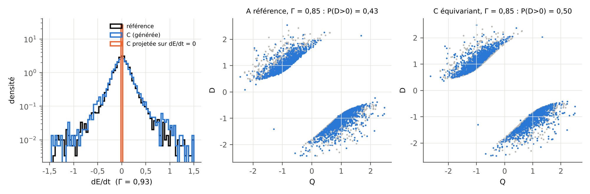
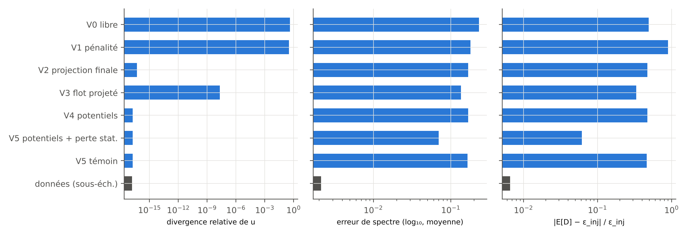
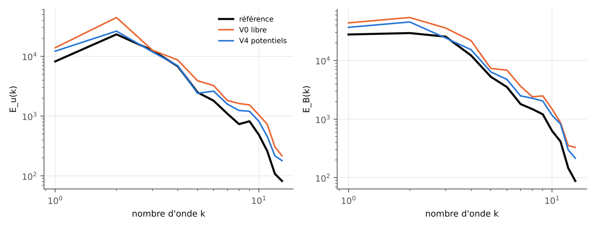
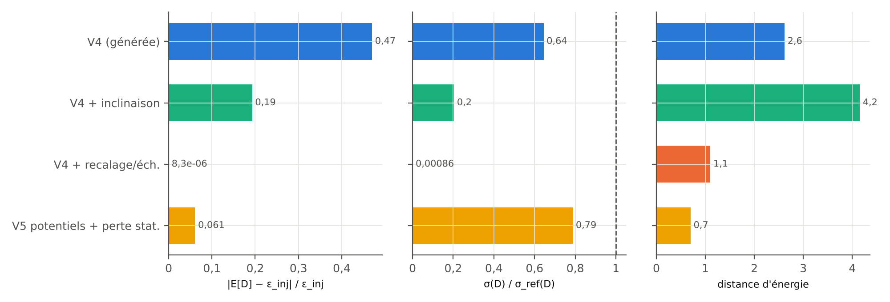
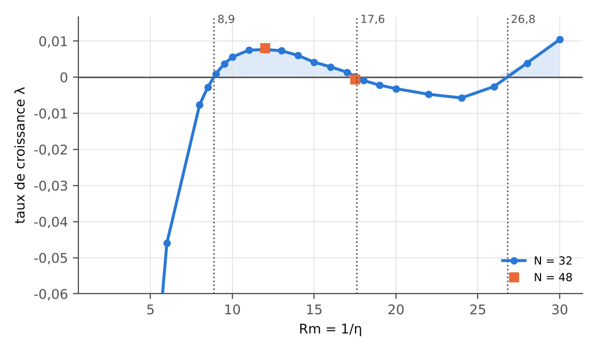

Modèles génératifs conditionnels sous contraintes physiques pour des champs MHD paramétriques
Rapport de stage de M2 (prospectif) · projet ANR MilaDy · CEREA–LISN
Fiche du stage
| Rubrique | Contenu |
|---|---|
| Intitulé de l’offre | Physics-Constrained Generative AI Modelling of Parametric Dynamical Systems (with potential PhD position), stage de fin d’études 2027 (Master 2 ou dernière année d’école d’ingénieur). |
| Cadre | Projet ANR MilaDy, « Modélisation par apprentissage automatique des dynamos turbulentes », ANR-25-CE51-0077 (comité CE51, début en janvier 2026, 48 mois). Coordination : Caroline Nore (LISN). Partenaires : LISN, laboratoire Lagrange (Observatoire de la Côte d’Azur), CEREA (École nationale des ponts et chaussées). |
| Lieu | CEREA, École nationale des ponts et chaussées (Institut Polytechnique de Paris), Champs-sur-Marne ; l’offre mentionne un télétravail possible jusqu’à un ou deux jours par semaine. |
| Encadrement | Sibo Cheng (ENPC, CEREA) et Didier Lucor (LISN, Université Paris-Saclay), en collaboration avec Caroline Nore (LISN) et Yannick Ponty (Observatoire de la Côte d’Azur, CNRS), au sein du consortium MilaDy. |
| Période | Cinq à six mois à partir du printemps 2027, selon l’offre. |
| Livrables attendus par l’offre | « A comparative study of physics-constrained generative modelling strategies for parameter-dependent MHD fields », un rapport technique concis et un code reproductible intégré à la boîte à outils du projet. |
| Statut de ce document | Prospectif. Le stage n’a pas eu lieu. Les résultats viennent des expériences à petite échelle, sur processeur (CPU), du dossier experiences/ de ce site. Rien n’a été relu ni validé par les encadrants. |
Avertissement — un rapport écrit avant le stage Ce document est rédigé comme le rapport de fin d’un stage qui n’a pas encore eu lieu. Il sert à préparer ce stage : il fixe un cadre théorique, le confronte à trois expériences jouets et dit ce qui manque pour passer aux données du projet.
Trois statuts sont distingués dans tout le texte. Ce qui est mesuré vient exclusivement des expériences du dossier experiences/ de ce site, exécutées sur un processeur à 4 cœurs sans GPU, sur des modèles jouets : le modèle de renversements à trois modes de Gissinger (E1), la MHD 2D forcée sur une grille 32² (E2) et la dynamo cinématique ABC sur une grille 32³ (E3). Les chiffres sont recopiés du condensé experiences/resultats/digest.md ou des fichiers JSON dont il est tiré. Ce qui est publié est cité avec sa référence, d’après des fiches bibliographiques vérifiées sur les sources primaires le 6 novembre 2026. Ce qui est conjecturé est signalé comme tel.
Aucune donnée du consortium MilaDy (simulations SFEMaNS ou LATU) n’a été utilisée. Rien dans ce document n’a été relu, discuté ou validé par Sibo Cheng, Didier Lucor, Caroline Nore ou Yannick Ponty, et aucune phrase ne doit être lue comme l’expression de leur avis.
Résumé
Le projet ANR MilaDy cherche des modèles appris des dynamos turbulentes, capables de reproduire la sensibilité du champ magnétique aux paramètres de contrôle et ses renversements de polarité. Ce rapport prospectif étudie des modèles génératifs conditionnels, entraînés par flow matching, qui produisent des instantanés de champs conditionnés par un paramètre physique, et la façon d’y faire respecter la physique.
Le cadre repose sur une taxonomie des contraintes. Les contraintes locales linéaires, comme la divergence nulle, valent pour chaque échantillon et peuvent être imposées exactement par l’architecture ou par projection. La symétrie \mathbf{B} \to -\mathbf{B} et les identités de stationnarité, dont le bilan d’énergie moyen, ne valent que pour la loi. Imposer un bilan stationnaire à chaque échantillon produit une loi étrangère à la vraie loi (Corollaire 6) ; il faut l’imposer en loi, par une perte d’entraînement ou par une inclinaison exponentielle de la loi générée.
Trois expériences sur CPU testent ces énoncés. Sur le modèle à trois modes de Gissinger conditionné par son forçage \Gamma (E1), on compare symétrie imposée, contraintes en loi et contrainte par échantillon, et l’on prédit la fréquence des renversements par la formule de Rice à partir de la seule loi générée. Le champ de vitesse équivariant garde la loi symétrique à toutes les valeurs de \Gamma, alors que l’augmentation des données ne la symétrise qu’aux valeurs d’entraînement ; il divise la distance d’énergie aux valeurs de test par 4,6. La projection de chaque échantillon sur \mathrm{d}E/\mathrm{d}t = 0 la multiplie par 9. La formule de Rice retrouve la fréquence des passages de D par zéro avec une erreur relative cumulée de 14 % pour \Gamma \ge 0{,}89 (jusqu’à 65 % en un point) et de 42 % au voisinage du seuil, où le générateur lisse le saut de la loi. Sur ce banc, la perte de stationnarité divise par deux les résidus de stationnarité d’un bon modèle aux valeurs de test de \Gamma, mais elle resserre la loi de \mathrm{d}E/\mathrm{d}t et échoue sur un modèle biaisé. Sur la MHD 2D forcée conditionnée par la diffusivité magnétique \eta (E2), la génération libre laisse une divergence relative de 0,41, alors que les potentiels et les projections l’annulent à la précision machine. Une perte de stationnarité en loi, imposée à toute valeur de \eta, y compris sans données, ramène la distance d’énergie moyenne aux \eta de test de 2,58 à 0,70 et les erreurs sur les énergies cinétique et magnétique de 26 % et 37 % à 7 % et 6 %, alors qu’un témoin sans cette perte ne gagne rien. L’inclinaison exponentielle a posteriori réduit le résidu du bilan mais effondre la taille effective d’échantillon (0,29 en moyenne), et le recalage de chaque échantillon annule la variance de la dissipation. Une dynamo cinématique ABC (E3) valide un banc d’essai 3D : seuils mesurés 8,87, 17,6 et 26,8, en accord avec les valeurs publiées, et divergence de l’ordre de 10^{-16}.
Les modèles restent faibles : leurs erreurs de spectre (0,07 à 0,23 en \log_{10}) dépassent nettement celles de deux échantillons de données (0,002 à 0,011). Le passage aux données SFEMaNS et LATU du consortium est discuté en conclusion.
Abstract
The ANR project MilaDy seeks machine-learned models of turbulent dynamos that reproduce the sensitivity of the magnetic field to control parameters and its polarity reversals. This prospective report studies conditional generative models trained by flow matching, which produce snapshots of fields conditioned on a physical parameter, and how to make them respect physics.
The framework rests on a taxonomy of constraints. Local linear constraints, such as zero divergence, hold for every sample and can be enforced exactly by the architecture or by projection. The symmetry \mathbf{B} \to -\mathbf{B} and the stationarity identities, including the mean energy balance, hold for the law only. Enforcing a stationary balance on each sample yields a law that is singular with respect to the true one (Corollary 6); it must be enforced in law, through a training loss or through an exponential tilting of the generated law.
Three CPU experiments test these statements. On Gissinger’s three-mode reversal model conditioned on its forcing \Gamma (E1), we compare enforced symmetry, constraints in law and per-sample constraints, and we predict the reversal frequency with Rice’s formula from the generated law alone. The equivariant velocity field keeps the law symmetric at every value of \Gamma, whereas data augmentation symmetrizes it only at training values; it divides the energy distance at test values by 4.6. Projecting each sample onto \mathrm{d}E/\mathrm{d}t = 0 multiplies it by 9. Rice’s formula recovers the frequency of zero crossings of D with a cumulative relative error of 14% for \Gamma \ge 0.89 (up to 65% at a single value) and of 42% near the threshold, where the generator smooths the jump of the law. On this test bench, the stationarity loss halves the stationarity residuals of a good model at test values of \Gamma, but it narrows the law of \mathrm{d}E/\mathrm{d}t and fails on a biased model. On forced 2D MHD conditioned on the magnetic diffusivity \eta (E2), free generation leaves a relative divergence of 0.41, whereas potentials and projections cancel it to machine precision. A stationarity loss in law, imposed at every value of \eta, including values without data, lowers the mean energy distance at test values of \eta from 2.58 to 0.70 and the errors on kinetic and magnetic energies from 26% and 37% to 7% and 6%, while a control run without this loss gains nothing. A posteriori exponential tilting reduces the balance residual but collapses the effective sample size (0.29 on average), and per-sample rescaling cancels the variance of the dissipation. A kinematic ABC dynamo (E3) validates a 3D test bench: measured thresholds 8.87, 17.6 and 26.8, in agreement with published values, and divergence of order 10^{-16}.
The models remain weak: their spectral errors (0.07 to 0.23 in \log_{10}) clearly exceed those of two data samples (0.002 to 0.011). The move to the consortium’s SFEMaNS and LATU data is discussed in the conclusion.
1. Introduction
Contexte
L’effet dynamo est l’amplification et l’entretien d’un champ magnétique par l’écoulement d’un fluide électriquement conducteur, contre la dissipation ohmique. Il explique le champ magnétique de la Terre et celui des étoiles. Il est difficile à reproduire en laboratoire : selon le résumé du projet MilaDy, seules trois expériences en sodium liquide, dont celle de Cadarache, ont obtenu une dynamo, et l’expérience DRESDYN, en cours en Allemagne, cherche à l’obtenir avec un cylindre en précession.
La simulation numérique des dynamos est coûteuse, car elle couple les équations de Navier–Stokes et l’équation d’induction dans des régimes turbulents. Elle produit, selon l’offre de stage, « de grands jeux de données 3D difficiles à stocker, à interpréter et à réutiliser » (notre traduction) pour la modélisation et l’assimilation de données. Le projet MilaDy veut en tirer des modèles réduits appris ; son résumé mentionne aussi l’assimilation de données par apprentissage, rendue plus accessible par la plateforme TorchDA (Cheng et al. 2025).
Deux propriétés rendent ces données difficiles à apprendre. La première est la sensibilité aux paramètres. Le seuil d’apparition de la dynamo dépend du nombre de Reynolds magnétique Rm, mais aussi des matériaux et des conditions aux limites : l’expérience VKS n’a fonctionné qu’avec des turbines en fer doux (Monchaux et al. 2007), et, dans les simulations de Nore et al. (2018), le seuil passe de Rm_c = 90 \pm 5 à 130 \pm 10 quand on remplace la condition de « pseudo-vide » par la condition de vide, à Re = 1{,}5\cdot 10^3 et \mu_r = 50. La seconde est l’existence de transitions brusques, dont les renversements de polarité du champ, observés dans VKS (Berhanu et al. 2007) et reproduits numériquement par Bousquet et al. (2026). Le premier objectif du projet porte justement sur ces renversements, avec des modèles réduits capables d’en identifier les phases : précurseur, renversement et rebond.
Le stage proposé explore des modèles génératifs conditionnels, par diffusion ou par flow matching, qui génèrent des champs physiques conditionnés par les paramètres du système et qui respectent des contraintes tirées des équations et des conditions aux limites. Selon l’offre, ces méthodes seront d’abord évaluées sur des bancs d’essai d’EDP simples, avec des applications possibles aux écoulements de dynamo turbulente.
Problématiques
L’offre de stage définit trois objectifs et trois volets de travail. Nous les reformulons en cinq problématiques, notées P1 à P5, auxquelles le rapport répond section par section.
| Problématique reformulée | Formulation de l’offre | Où le rapport y répond | |
|---|---|---|---|
| P1 | Conditionnement paramétrique. Apprendre une famille de lois \mu_{\boldsymbol\lambda} et générer à des valeurs de \boldsymbol\lambda jamais vues, y compris près d’un seuil. | « Encode variations across control parameters (e.g., Reynolds number, magnetic Reynolds number, material properties…) » | Cadre, Proposition 9, protocole, E1, E2 |
| P2 | Contraintes locales exactes. Imposer la divergence nulle et les conditions aux limites, par l’architecture, la perte ou l’échantillonnage, et mesurer ce que coûte chaque choix. | « Respect key physical constraints, including energy balance and divergence-free conditions » ; « through model design, training losses, or sampling procedures » | Taxonomie, Propositions 1 à 3, E2, E3 |
| P3 | Bilan d’énergie. Dire ce que signifie « respecter le bilan d’énergie » pour un générateur d’instantanés, et l’imposer. | « energy balance » | Propositions 5 et 7, Corollaire 6, E1, E2 |
| P4 | Évaluation. Choisir des métriques statistiques et physiques qui discriminent réellement les modèles. | « energy spectra, helicity, divergence control, and topology preservation » | Métriques, expériences, discussion |
| P5 | Vers les dynamos 3D. Préparer la génération de champs 3D utilisables par des modèles réduits ou l’assimilation, et la capture des renversements et des seuils. | « Enable robust generation of 3D fields that can serve as input for reduced-order models or data assimilation frameworks » ; contexte : « abrupt reversals of the magnetic field polarity » | Propositions 4, 8 et 9, E1, E3, discussion |
Contributions
Ce rapport assemble surtout des résultats connus. Ce qui est déjà publié est cité et n’est pas revendiqué :
- l’équivalence entre l’invariance d’une mesure et les identités \mathbb{E}_\mu[\mathcal{L}\varphi] = 0 sur un cœur de fonctions test (Echeverría 1982 ; Ethier & Kurtz 1986), et l’approche par le générateur des discrépances de Stein (Barbour 1988, 1990 ; Gorham & Mackey 2015 ; Gorham et al. 2019 ; Liu, Lee & Jordan 2016) ;
- la forme faible de l’équation de Fokker–Planck stationnaire utilisée comme perte d’un générateur d’échantillons, dans le Weak Generative Sampler (Cai et al. 2026), avec un antécédent en min-max (Zang et al. 2020) ;
- l’apprentissage par la mesure invariante (Yang et al. 2023 ; Botvinick-Greenhouse, Martin & Yang 2023 ; Jiang et al. 2023 ; Schiff et al. 2024 ; Chen et al. 2026) ;
- l’I-projection et l’inclinaison exponentielle d’un générateur pré-entraîné sous contraintes de moments (Csiszár 1975 ; Jaynes 1957 ; Pitera & Chodera 2012 ; Khalifa, Elsahar & Dymetman 2021 ; Mun 2026), et l’inclinaison d’un modèle de flow matching par un résidu d’EDP en forme faible (Tauberschmidt et al. 2026) ;
- la divergence nulle dans les modèles génératifs : fonction de courant (Wang et al. 2026), projection de Leray (Genuist et al. 2026 ; Li, Buzzicotti et al. 2026 ; Li, Zhang et al. 2026), réseaux à divergence nulle (Richter-Powell, Lipman & Chen 2022) ;
- la transmission d’une symétrie par un flot équivariant (Proposition 4), résultat classique des flots normalisants équivariants ;
- les Propositions 2 et 3, conséquences élémentaires des définitions, sans doute connues sous d’autres formes.
Ce que ce travail revendique est formulé avec prudence : à notre connaissance, après une recherche bibliographique arrêtée au 6 novembre 2026, aucune publication ne contient les points suivants.
- Utiliser les identités de stationnarité d’une EDP de champs (bilans d’énergie, d’hélicité croisée et de \langle a^2\rangle de la MHD) comme contraintes en loi d’un modèle génératif conditionnel paramétrique, imposables à des valeurs du paramètre sans données (réglage fin de E1, perte en loi de E2). Contrairement aux moments externes de Khalifa et al. (2021) ou de Mun (2026), ces identités n’exigent aucune valeur cible : elles valent pour toute mesure invariante de la dynamique.
- Énoncer l’incohérence d’une contrainte par échantillon portant sur un bilan stationnaire (Corollaire 6) et la mesurer (E1 et E2).
- Appliquer la formule de Rice à un générateur d’instantanés pour prédire la fréquence des renversements sans intégration en temps (Proposition 8). Nous n’avons trouvé aucune antériorité.
- Montrer la complémentarité de la symétrie et de la stationnarité : les identités de stationnarité ne fixent pas les poids relatifs de deux composantes ergodiques symétriques, et l’équivariance est nécessaire (conséquence de la Proposition 4, testée dans E1).
- Un point technique : l’estimateur naïf d’une perte de stationnarité, le carré d’une moyenne de mini-lot, vaut en espérance (\mathbb{E}g)^2 + \mathrm{Var}(g)/n et pénalise donc la dispersion de la loi ; le produit des moyennes de deux demi-lots indépendants supprime ce biais. Le problème est apparu lors de la mise au point de E1, sur sa version rapide.
- Une borne inférieure de l’erreur d’un générateur régulier en \boldsymbol\lambda au voisinage d’un saut de loi (Proposition 9), appliquée au seuil des renversements et au seuil dynamo.
Organisation du rapport
La section 2 fait l’état de l’art : dynamos, réduction de modèle, modèles génératifs, contraintes dures et contraintes en loi. La section 3 pose le cadre, la taxonomie des contraintes et neuf énoncés démontrés. La section 4 décrit exactement les méthodes et le protocole des expériences, la section 5 leurs résultats, et la section 6 répond aux problématiques P1 à P5 et discute la validité des conclusions. La section 7 conclut et ouvre vers la thèse. Les annexes donnent les commandes de reproduction, les hyperparamètres et un glossaire.
2. État de l’art
Cette section rassemble ce qui est publié et utile au stage. Tous les chiffres cités viennent des articles référencés, relus sur leur source primaire ; aucun ne vient de nos expériences.
Dynamos de laboratoire et dynamos numériques
Le nombre de Reynolds magnétique Rm = UL/\eta compare l’induction à la diffusion du champ ; une dynamo n’apparaît qu’au-dessus d’un seuil Rm_c. Les métaux liquides ont un très petit nombre de Prandtl magnétique, Pm = \nu/\eta = 0{,}82\cdot10^{-5} pour le sodium à 120 °C (Nore et al. 2018), si bien que le nombre de Reynolds cinétique Re = Rm/Pm atteint plusieurs millions au seuil : l’écoulement est pleinement turbulent quand le champ magnétique apparaît.
Trois expériences en sodium liquide ont obtenu une dynamo auto-entretenue. À Riga, un écoulement hélicoïdal de type Ponomarenko a permis la première détection d’un mode propre magnétique auto-excité, en novembre 1999 : à 2150 tr/min et 205 °C, le mode croît au taux p_2 = 0{,}0315 \pm 0{,}0009 s⁻¹ et oscille à f_2 = 1{,}326 Hz (Gailitis et al. 2000 ; historique dans Gailitis et al. 2008). À Karlsruhe, un module de 52 générateurs de tourbillons réalise la dynamo à deux échelles de Roberts et Busse ; le premier fonctionnement réussi date de décembre 1999 (Rädler & Brandenburg 2003), et le champ saturé est un dipôle stationnaire qui présente deux états quasi équivalents (Stieglitz & Müller 2001 ; Müller et al. 2008). À Cadarache, l’expérience von Kármán Sodium (VKS) a obtenu une dynamo dans un écoulement fortement turbulent, entre deux turbines contrarotatives, avec des turbines en fer doux, alors qu’aucune dynamo n’apparaissait avec des turbines en acier inoxydable (Monchaux et al. 2007).
Les seuils publiés pour VKS dépendent de la définition de Rm, et ne se comparent pas directement. Avec un facteur d’efficacité des turbines K \approx 0{,}6, Monchaux et al. (2007) trouvent Rm_c \approx 31 ; avec une définition sans ce facteur, Nore et al. (2018) rapportent un intervalle expérimental 52 \le Rm_c \le 71 ; Miralles et al. (2013) utilisent encore une autre définition. Un modèle génératif conditionné par « Rm » devra donc fixer sa convention.
La simulation numérique directe de VKS avec les turbines représentées a été réalisée avec le code SFEMaNS, qui combine une décomposition de Fourier en azimut et des éléments finis de Lagrange dans le plan méridien (Guermond et al. 2007, 2009) : le seuil diminue quand la perméabilité magnétique des turbines augmente, et le champ est un dipôle axial essentiellement axisymétrique, comme dans l’expérience (Nore et al. 2016). Nore et al. (2018) quantifient la sensibilité aux conditions aux limites : à Re = 1{,}5\cdot10^3 et \mu_r = 50, Rm_c = 90 \pm 5 avec la condition \mathbf{H}\times\mathbf{n} = 0 (« pseudo-vide »), contre 130 \pm 10 avec la condition de vide, soit environ 40 % de plus ; leur extrapolation Rm_c \approx 70 aux grands Re tombe dans l’intervalle expérimental. Le second solveur du consortium, LATU, est un code pseudo-spectral de Fourier où les turbines et les parois sont représentées par pénalisation, dans une boîte périodique (3\pi)^3 à 384^3 points (Kreuzahler et al. 2017).
Pour la modélisation, ces travaux disent deux choses. Les paramètres de contrôle pertinents ne se réduisent pas à Re et Rm : la perméabilité \mu_r et les conditions électromagnétiques déplacent le seuil autant qu’eux. Et les données de simulation ne vivent pas sur une grille cartésienne régulière : chez SFEMaNS, elles sont des modes de Fourier azimutaux portés par un maillage d’éléments finis non structuré.
Renversements et modèles de basse dimension
Berhanu et al. (2007) ont observé les premiers renversements \mathbf{B} \to -\mathbf{B} en laboratoire, dans VKS, quand les deux turbines tournent à des fréquences différentes. À F_1 = 16 Hz et F_2 = 22 Hz, les durées moyennes des deux polarités sont \langle T_+\rangle = 120 s et \langle T_-\rangle = 50 s, et un renversement dure \tau \approx 5 s, à comparer à un temps de diffusion ohmique d’environ 0,4 s ; des excursions, où le champ chute puis revient à la même polarité, sont aussi observées.
Pétrélis & Fauve (2008) expliquent ces dynamiques par le couplage d’un mode dipolaire D et d’un mode quadripolaire Q. L’invariance des équations par \mathbf{B} \to -\mathbf{B} impose une forme normale pour l’amplitude complexe A = D + iQ, qui se réduit à une équation de phase \dot\theta = \mu_i - \rho\sin 2\theta. Une bifurcation nœud-col en \mu_i = \rho sépare les états stationnaires des renversements périodiques ; juste sous ce seuil, le bruit turbulent déclenche des renversements aléatoires. Pétrélis et al. (2009) appliquent ce mécanisme aux renversements du champ terrestre.
Gissinger (2012) propose un modèle déterministe à trois modes, qui sert de banc d’essai E1 :
\dot Q = \mu Q - VD, \qquad \dot D = -\nu D + VQ, \qquad \dot V = \Gamma - V + QD .
Ici V est un mode de vitesse qui brise la symétrie équatoriale, forcé par \Gamma, et le terme QD représente la force de Lorentz. Le système est invariant par (Q, D, V) \to (-Q, -D, V), image de \mathbf{B} \to -\mathbf{B}. Pour \nu = 0{,}1 et \Gamma = 0{,}9, les deux attracteurs symétriques fusionnent par une crise en \mu_c \approx 0{,}11928 ; à \mu = 0{,}119, les renversements sont chaotiques, avec un exposant de Lyapunov \lambda \simeq 0{,}1, et à \mu = 0{,}12 le chaos reste confiné autour d’un seul point fixe. La loi des temps d’attente entre renversements est poissonnienne aux temps longs, et la densité de D est bimodale, avec une probabilité très faible en 0 (Gissinger 2012). Le même modèle, avec les rôles de D et Q échangés, figure dans Gissinger, Dormy & Fauve (2010), à partir de simulations en sphère. Une crise de fusion d’attracteurs (Grebogi, Ott & Yorke 1983) s’accompagne d’une intermittence dont le temps de séjour moyen diverge à l’approche du seuil (Grebogi et al. 1987) ; Gissinger (2012) observe un temps d’attente moyen \tau \sim (\mu - \mu_c)^{-\gamma} avec \gamma \simeq 1/2, en précisant qu’il est « difficile de conclure » tant le résultat est sensible à \mu_c.
Bousquet et al. (2026) ont obtenu des renversements dans des simulations de VKS, avec les deux solveurs du consortium. Pour leur simulation de référence (Re = 1594, Rm = 531, asymétrie de forçage (F_1 - F_2)/(F_1 + F_2) = 0{,}058, \mu_r = 16 dans les turbines), le renversement suit un mécanisme en cinq étapes : dipôle, affaiblissement près de la turbine rapide, état quadripolaire, affaiblissement près de la turbine lente, dipôle inversé. Une décomposition orthogonale aux valeurs propres (POD) sur 2000 instantanés fait ressortir quatre modes axisymétriques dominants, un dipôle, un quadripôle et deux modes de vitesse ; un modèle de Galerkin réduit, DQVU, identifié par régression parcimonieuse sous contraintes avec PySINDy, reproduit la loi bimodale asymétrique du mode de vitesse V, ce que le modèle à trois modes DQV ne fait pas. Les données ne sont pas publiques ; elles sont disponibles auprès des auteurs sur demande raisonnable.

Ces modèles fixent la cible. Un générateur de champs 3D de dynamo devrait reproduire la loi jointe des modes dominants (bimodalité, asymétrie, rareté du passage par D = 0) et, si possible, la statistique des renversements. Le modèle de Gissinger est assez simple pour que la vraie loi soit connue à la précision voulue, et assez riche pour avoir un seuil de renversements, une symétrie et un chaos déterministe.
Réduction de modèle par apprentissage
Les modèles réduits appris cherchent une représentation de faible dimension où la dynamique devient simple. Fukami & Taira (2023), référence principale de l’offre, compressent l’écoulement autour d’un profil NACA 0012 à Re = 100, soumis à des rafales tourbillonnaires extrêmes, en trois variables latentes, avec un autoencodeur dont la perte contient aussi la prédiction de la portance (\beta = 0{,}05) ; l’analyse en composantes principales échoue à détecter le tourbillon dans ce cas. Solera-Rico et al. (2024) combinent un autoencodeur variationnel \beta-VAE et un transformer : à Re = 100, avec \beta = 0{,}05 et 20 variables latentes, le \beta-VAE capture 89,8 % de l’énergie sur les données d’entraînement, contre 64,4 % pour 20 modes POD, et il faut 69 modes POD pour l’égaler ; le modèle réduit complet garde 78,1 % de l’énergie à un temps convectif et 64,6 % à dix. Eivazi et al. (2022) rapportent 87,36 % de l’énergie avec 5 variables latentes, contre 32,41 % avec 5 modes POD, sur un écoulement urbain turbulent.
Côté MilaDy, Bousquet, Nore & Lucor (2025) comparent autoencodeurs et autoencodeurs variationnels sur des champs de Navier–Stokes (cylindre oscillant, étude paramétrique, écoulement de von Kármán). Ils relient l’organisation de l’espace latent aux modes POD et analysent les relations d’équivariance entre symétries physiques et latentes, mieux préservées par les autoencodeurs variationnels ; augmenter la régularisation de ces derniers dégrade la reconstruction. Bousquet et al. (2024) ont analysé par POD des simulations des grandes échelles de l’écoulement de von Kármán à Re > 10^4 et y ont confirmé numériquement un état métastable qui brise la symétrie R_\pi.
Une remarque relie ces travaux à E2. Pour un champ statistiquement homogène dans une direction périodique, les modes POD sont les modes de Fourier de cette direction (résultat classique, voir Holmes, Lumley & Berkooz 1996, et la section 4). Une base de Fourier tronquée est donc l’espace latent linéaire optimal au sens de la POD pour la turbulence homogène de E2 ; les autoencodeurs non linéaires de Fukami, Solera-Rico ou Bousquet deviendront nécessaires dès que l’homogénéité est perdue, comme dans VKS.
Diffusion, flow matching et génération de champs physiques
Les modèles de diffusion apprennent à inverser un bruitage progressif des données : DDPM (Ho, Jain & Abbeel 2020), formulation par équations différentielles stochastiques et équation de flot de probabilité (Song et al. 2021), choix de conception d’EDM (Karras et al. 2022), guidage sans classifieur pour le conditionnement (Ho & Salimans 2022). Le flow matching (Lipman et al. 2023) entraîne directement le champ de vitesse d’une équation différentielle ordinaire qui transporte un bruit gaussien vers les données, par régression sur des chemins conditionnels ; le chemin linéaire correspond au rectified flow de Liu, Gong & Liu (2023), et les interpolants stochastiques unifient flots et diffusions (Albergo & Vanden-Eijnden 2023 ; Albergo, Boffi & Vanden-Eijnden 2025). Tong et al. (2024) généralisent la loi de base et le couplage. Ces idées ont été étendues aux espaces de fonctions (Kerrigan, Migliorini & Smyth 2024 ; Lim et al. 2025).
FunDiff (Wang et al. 2026), référence principale de l’offre, combine un autoencodeur fonctionnel, dont le décodeur s’interroge en tout point, et un transformer de diffusion latente entraîné par rectified flow. Les contraintes y sont de trois natures. La divergence nulle est imposée par l’architecture : le décodeur produit une fonction de courant \psi, avec u = \partial_y\psi, v = -\partial_x\psi, et la divergence prédite est qualifiée de « négligeable », sans valeur numérique dans le texte. La périodicité et des symétries de réflexion sont imposées par construction. Le résidu d’EDP est ajouté comme perte douce. Sur l’élasticité linéaire, l’erreur L^2 relative est de 5,12 % à 256\times256 à partir d’observations 32\times32 bruitées à 10 %.
PIDM (Bastek, Sun & Kochmann 2025), autre référence de l’offre, traite le résidu d’EDP comme une observation virtuelle nulle, évaluée sur l’estimée \mathbf{x}_0^\ast du modèle de diffusion, et ajoute à la perte un terme \|\mathcal{R}(\mathbf{x}_0^\ast)\|^2. Les auteurs identifient l’écart de Jensen : \mathcal{R}(\mathbb{E}[\mathbf{x}_0\mid\mathbf{x}_t]) \neq \mathbb{E}[\mathcal{R}(\mathbf{x}_0)\mid\mathbf{x}_t], si bien que la pénalité sur l’estimée moyenne entre en conflit avec la perte de données ; une estimée par échantillonnage en deux pas réduit ce conflit, au prix d’un surcoût d’entraînement de 69 % (23 % pour l’estimée moyenne). En optimisation topologique, l’erreur absolue moyenne du résidu passe de 1{,}86\cdot10^{-3} à 1{,}24\cdot10^{-3}.
D’autres travaux génèrent ou reconstruisent des écoulements. DiffusionPDE (Huang et al. 2024) guide l’échantillonnage par les observations et le résidu d’EDP, ce dernier seulement après 80 % des pas. Shu, Li & Barati Farimani (2023) et CoCoGen (Jacobsen, Zhuang & Duraisamy 2025) ajoutent des gradients du résidu pendant ou à la fin de l’échantillonnage. TurbDiff (Lienen et al. 2024) génère des états turbulents 3D sans état initial, en environ 20 s par échantillon sur GPU contre environ 602 s pour le solveur, sans contrainte d’incompressibilité explicite. Kohl, Chen & Thuerey (2026) conditionnent une diffusion autorégressive par le nombre de Reynolds et testent hors de la plage d’entraînement. CoNFiLD (Du et al. 2024) combine champs neuronaux et diffusion latente sur des géométries 3D. GenCast (Price et al. 2025) dépasse la prévision d’ensemble opérationnelle sur 97,2 % de 1320 cibles, sans contrainte physique explicite. Le plus proche de notre problème est le travail de Galletti et al. (2026), préprint, qui génère par flow matching latent des états statistiquement stationnaires de turbulence gyrocinétique conditionnés par des paramètres sans dimension, pour démarrer un solveur à chaud ; aucune contrainte physique n’y est mentionnée. Côté CEREA, Zhuang, Cheng & Duraisamy (2025) reconstruisent des champs globaux à partir d’observations éparses par une diffusion avec attention croisée. Enfin, la revue de Biferale & Buzzicotti (2026), préprint, plaide pour valider les modèles génératifs de turbulence sur les transferts d’énergie, les fonctions de structure et les lois de conservation, plutôt que sur des erreurs point à point.
Guidage à l’échantillonnage
Le guidage modifie l’échantillonnage d’un modèle déjà entraîné. DPS (Chung et al. 2023) ajoute le gradient d’une vraisemblance évaluée sur l’estimée de Tweedie, approximation dont l’erreur est encore un écart de Jensen. Le guidage universel (Bansal et al. 2024), cité par l’offre, étend cette idée à toute fonction différentiable : guidage « avant » par le gradient d’une perte évaluée sur l’estimée \hat{\mathbf{z}}_0, guidage « arrière » qui optimise une correction \Delta\mathbf{z}_0 par quelques pas de descente, et répétition de chaque pas avec re-bruitage. Les auteurs précisent que les hyperparamètres doivent être réglés pour chaque réseau de guidage. D-Flow (Ben-Hamu et al. 2024) optimise plutôt le bruit initial en dérivant à travers tout le flot, ce qui coûte cher. Ces méthodes imposent des contraintes douces et agissent échantillon par échantillon ; nous ne les utilisons pas dans les expériences, mais elles sont la référence à laquelle comparer les mécanismes en loi.
Contraintes dures
Une contrainte est dite dure quand elle est satisfaite par construction ou à la précision machine. Richter-Powell, Lipman & Chen (2022) construisent des réseaux à divergence nulle par construction à partir de formes différentielles, universels sur le tore, pour un coût quadratique en la dimension. Pour des ensembles convexes, la projection après chaque pas de Langevin garantit la faisabilité (Christopher, Baek & Fioretto 2024), au prix d’un surcoût qui peut être très élevé quand la projection est un problème d’optimisation (682,40 s contre 13,79 s par échantillon dans l’une de leurs tâches). ECI (Cheng et al. 2025) impose des contraintes linéaires ou de valeur sans gradient, par extrapolation, correction et interpolation à chaque pas, en 0,065 s par échantillon contre 28,774 s pour D-Flow. PCFM (Utkarsh et al. 2025) traite des contraintes non linéaires par une projection de Gauss–Newton à chaque pas et une projection finale exacte, qui représente 1 à 3 % du temps total.
Pour la divergence nulle des écoulements incompressibles, trois travaux de 2026 sont directement pertinents. Genuist et al. (2026), préprint non évalué par les pairs, comparent six manières d’imposer l’incompressibilité dans une diffusion autorégressive (référence sans contrainte, projection sur la variété, projection de Leray en sortie du débruiteur, pénalité douce de type PINN, projection a posteriori, projection progressive) sur une turbulence 2D en déclin avec frottement d’Ekman. La pénalité douce « performs poorly across all metrics » en distribution et en déroulement ; mais sur le cas hors distribution de Taylor–Green, c’est elle qui obtient la meilleure erreur quadratique (4{,}53\cdot10^{-4} contre 1{,}49\cdot10^{-3} pour la référence), avec une divergence non nulle (1{,}84\cdot10^{-2}). Les auteurs concluent qu’aucune stratégie ne domine : les contraintes strictes sont meilleures près de la distribution et à court horizon, les contraintes souples parfois préférables en déroulement long et hors distribution. PCDM (Li, Buzzicotti, Bonaccorso & Biferale 2026, préprint) applique la projection de Fourier I - \mathbf{k}\mathbf{k}^\top/|\mathbf{k}|^2 à l’estimée propre du débruiteur, sur une turbulence 3D en rotation à 64^3 : la divergence est nulle à la précision machine et l’entraînement est environ cinq fois plus court que celui de la référence (12 jours contre 56 sur 4 GPU A100). Project and Generate (Li, Zhang et al. 2026, préprint) construit une mesure gaussienne de référence à divergence nulle, pour que les chemins de flow matching restent dans l’espace contraint ; la divergence reste de l’ordre de 10^{-7}, alors que le flow matching non contraint diverge numériquement en déroulement long.
Pour le champ magnétique, da Silva et al. (2025, préprint) génèrent les coefficients d’harmoniques sphériques d’un champ potentiel coronal, ce qui impose \nabla\cdot\mathbf{B} = 0 par représentation ; leur évaluation est qualitative.
Le tableau suivant résume où agit chaque méthode citée et si la contrainte est dure ou douce ; les coûts sont ceux rapportés par les auteurs.
| Méthode | Où agit la contrainte | Contrainte | Dure ou douce | Coût rapporté |
|---|---|---|---|---|
| FunDiff, fonction de courant | architecture (décodeur) | \nabla\cdot\mathbf{u} = 0 en 2D | dure | non rapporté |
| PIDM | perte d’entraînement | résidu d’EDP | douce | +23 % (estimée moyenne) ou +69 % (estimée par échantillonnage) de temps d’entraînement |
| DPS, DiffusionPDE | guidage à l’échantillonnage | observations et résidu | douce | DPS : environ 95 s par image en 1000 évaluations |
| Guidage universel | guidage avant, arrière et répétitions | toute fonction différentiable | douce | plusieurs passes avant et arrière par pas |
| Réseaux à divergence nulle | architecture | divergence nulle | dure | quadratique en la dimension |
| PCDM ; Genuist et al., variante D | projection de Leray de l’estimée du débruiteur | \nabla\cdot\mathbf{u} = 0 | dure | une transformée de Fourier par pas ; PCDM : entraînement environ 5 fois plus court |
| Genuist et al., variante L | perte de type PINN | \nabla\cdot\mathbf{u} = 0 | douce | divergence résiduelle non nulle |
| PDM | projection après chaque pas de Langevin | ensemble convexe | dure | de 26,89 s contre 18,51 s à 682,40 s contre 13,79 s par échantillon selon la tâche |
| ECI | correction à chaque pas, sans gradient | contraintes linéaires et de valeur | dure | 0,065 s par échantillon, contre 28,774 s pour D-Flow |
| PCFM | projection de Gauss–Newton et projection finale | contraintes non linéaires | dure | projection finale : 1 à 3 % du temps total |
| D-Flow | optimisation du bruit initial | toute fonction différentiable | douce | 28,774 s par échantillon |
| da Silva et al. | représentation (harmoniques sphériques) | champ potentiel, \nabla\cdot\mathbf{B} = 0 | dure | aucun surcoût |
Contraintes en loi et mesures invariantes
Une dynamique chaotique à l’état statistiquement stationnaire n’impose rien à un instantané isolé, mais elle impose des identités à la loi des instantanés. Le critère classique dit qu’une mesure \mu est invariante pour un processus de Markov de générateur \mathcal{L} si et seulement si \int \mathcal{L}f\,\mathrm{d}\mu = 0 pour toute f d’un cœur du générateur ; la nécessité est générale, la suffisance demande des hypothèses (Echeverría 1982 ; Ethier & Kurtz 1986). L’approche par le générateur sous-tend les discrépances de Stein (Barbour 1988, 1990 ; Gorham & Mackey 2015 ; Gorham et al. 2019 ; Liu, Lee & Jordan 2016), qui testent un échantillon contre une cible connue par son score ; ici, au contraire, la cible est inconnue et c’est le générateur physique qui est connu.
L’antériorité la plus proche de nos pertes de stationnarité est le Weak Generative Sampler (Cai, Cao, Huang & Zhou 2026) : un générateur G_\theta est entraîné à minimiser \mathbb{E}_\varphi\big(\mathbb{E}_z[\mathcal{L}^\ast\varphi(G_\theta(z))]\big)^2, avec des fonctions test gaussiennes aléatoires, pour échantillonner la loi invariante d’équations différentielles stochastiques jusqu’en dimension 100 ; les réseaux adverses faibles (Zang et al. 2020) en sont l’antécédent en min-max. D’autres travaux apprennent une dynamique ou un émulateur à partir de la mesure invariante : transport optimal (Yang et al. 2023), optimisation sous contrainte de Fokker–Planck stationnaire (Botvinick-Greenhouse, Martin & Yang 2023), statistiques choisies ou apprentissage contrastif (Jiang et al. 2023), régularisation par la distance MMD à la mesure invariante dans DySLIM (Schiff et al. 2024), dont les auteurs notent que les mesures invariantes peuvent ne pas être uniques, et appariement de score de la mesure invariante (Chen et al. 2026). Wu et al. (2020) imposent la covariance des données à un générateur adverse de convection de Rayleigh–Bénard, et Guan et al. (2023) une conservation globale du transfert d’enstrophie dans des fermetures sous-maille.
L’I-projection donne la loi la plus proche d’une loi donnée, au sens de Kullback–Leibler, sous des contraintes de moments ; c’est une inclinaison exponentielle (Csiszár 1975 ; principe de maximum d’entropie de Jaynes 1957). Elle a été appliquée à des ensembles moléculaires simulés (Pitera & Chodera 2012) et à des générateurs pré-entraînés de texte (Khalifa, Elsahar & Dymetman 2021). Mun (2026, préprint) cherche « the exponentially tilted high-resolution distribution that minimizes KL divergence from the biased baseline, subject to moment constraints derived from low-resolution simulations », exécutée à l’inférence dans un modèle de diffusion ; Khalafi, Ding & Ribeiro (2024) entraînent des diffusions sous contraintes de loi par dualité. Tauberschmidt et al. (2026) affinent un modèle de flow matching vers la loi inclinée p_r \propto e^{\lambda r}p par une récompense construite sur un résidu d’EDP en forme faible ; ce résidu est calculé sur chaque échantillon, car l’EDP stationnaire doit être satisfaite champ par champ.
Deux mises en garde viennent de la théorie ergodique. Pour un système dissipatif, la mesure physique (mesure SRB) est en général singulière par rapport à la mesure de Lebesgue, de sorte que l’équation de Liouville n’a pas de solution à densité et que seule sa forme faible a un sens ; et la sélection de cette mesure comme limite à bruit nul n’est établie que dans le cadre Axiome A, Young (2002) précisant qu’il n’existe « no general result » au-delà.
Modèles génératifs pour la MHD
Les travaux les plus proches de notre sujet restent éloignés des dynamos. Kacmaz, Huerta & Haas (2025) combinent un opérateur neuronal informé par la physique (PINO) et une diffusion conditionnelle pour la MHD 2D incompressible résistive, à Pm = 1 et Re de 100 à 10 000 : à Re = 1000, l’erreur L^2 relative passe de 0,2548 à 0,1033 ; la divergence de \mathbf{B} n’est garantie que par le solveur, qui utilise un potentiel vecteur, et non par le modèle génératif, et aucune hélicité n’est évaluée. Martin et al. (2025) génèrent des trajectoires de particules test dans une turbulence MHD 3D ; da Silva et al. (2025) des champs potentiels coronaux ; le jeu de données The Well contient de la turbulence MHD 3D compressible isotherme, de type milieu interstellaire, qui n’est pas une simulation de dynamo de laboratoire (Ohana et al. 2024).
À notre connaissance, aucun modèle génératif par diffusion ou flow matching n’a été publié sur des simulations de dynamo (géodynamo, VKS, DRESDYN ou dynamo turbulente 3D) : des recherches dans l’API arXiv et sur le web, refaites le 6 novembre 2026, ne l’ont pas contredit, mais une absence ne se prouve pas.
Métriques d’évaluation
L’offre demande d’évaluer les champs générés par leurs spectres d’énergie, leur hélicité, le contrôle de la divergence et la préservation de la topologie. Les bancs d’essai publics proposent surtout des erreurs déterministes : erreur quadratique normalisée par la variance (VRMSE) et erreur normalisée par bande spectrale dans The Well (Ohana et al. 2024), erreurs par bande de Fourier basse, moyenne et haute, et erreur sur une quantité conservée, dans PDEBench (Takamoto et al. 2022). Pour des échantillons d’une loi, ces erreurs point à point sont dominées par la variance intrinsèque et ne conviennent pas. Les travaux génératifs utilisent plutôt des distances entre lois : distances de Wasserstein entre spectres d’énergie cinétique turbulente et entre valeurs des champs dans TurbDiff (Lienen et al. 2024), distances à un point et score CRPS dans GenCFD (Raonić et al. 2026), MMD (Gretton et al. 2012) ou distance d’énergie, qui vaut deux fois le carré de la MMD pour le noyau induit par la distance (Sejdinovic et al. 2013).
Pour l’hélicité magnétique H_M = \langle\mathbf{A}\cdot\mathbf{B}\rangle, la jauge compte : il n’existe pas de mesure absolue de l’hélicité d’un sous-volume qui n’est pas borné par une surface magnétique, et il faut alors une hélicité relative (Berger & Field 1984). Pour la topologie, l’homologie persistante fournit des diagrammes stables par perturbation (Edelsbrunner, Letscher & Zomorodian 2002 ; Cohen-Steiner, Edelsbrunner & Harer 2007), déjà appliqués à des simulations MHD du milieu interstellaire avec action dynamo (Makarenko et al. 2018) ; les points nuls magnétiques et le squelette du champ se localisent par des méthodes dédiées (Haynes & Parnell 2007, 2010). Aucun de ces outils n’a, à notre connaissance, servi à évaluer des champs MHD générés.
Lacunes
L’état de l’art laisse six lacunes qui structurent ce stage.
- Pas de modèle génératif de dynamo. Le travail MHD le plus proche est en 2D, configuration où une dynamo auto-entretenue est exclue par le théorème anti-dynamo de Zel’dovich (1957, rappelé par Tobias 2021), et son générateur n’impose pas \nabla\cdot\mathbf{B} = 0.
- Pas de contrainte dure conjointe sur \nabla\cdot\mathbf{u} et \nabla\cdot\mathbf{B} en 3D. Les briques existent séparément : projection de Leray 3D (PCDM), réseaux à divergence nulle, fonction de courant en 2D (FunDiff), champ potentiel. Le potentiel vecteur, généralisation 3D de la fonction de courant, impose un choix de jauge.
- Pas de traitement des domaines bornés. La projection de Leray en Fourier suppose la périodicité, alors que VKS et DRESDYN sont des cylindres à parois, avec des sauts de perméabilité et un raccord au champ extérieur.
- Pas de métriques MHD. Aucun travail trouvé n’évalue l’hélicité magnétique ou croisée, les bilans d’énergie magnétique ou la topologie des lignes de champ de champs générés.
- Pas de conditionnement par (Re, Rm) ni de franchissement de seuil. Aucun travail ne conditionne sur les deux nombres de Reynolds à la fois, ni n’étudie la traversée du seuil dynamo ou du seuil des renversements par un modèle génératif.
- Pas de comparaison systématique sur des EDP couplées, ni de contrainte en loi pour des champs. La comparaison la plus directe (Genuist et al. 2026) porte sur la seule divergence en hydrodynamique 2D et conclut qu’aucune stratégie ne domine ; les contraintes de stationnarité en loi n’ont été utilisées que pour des systèmes de petite dimension (au plus 100 pour le Weak Generative Sampler).
Ce qu’il faut retenir — état de l’art
- Les dynamos de laboratoire et numériques sont sensibles aux matériaux et aux conditions aux limites autant qu’à Re et Rm ; leurs données (SFEMaNS, LATU) ne sont pas sur une grille régulière.
- Les renversements ont des modèles de basse dimension (forme normale de Pétrélis et Fauve, modèle à trois modes de Gissinger, modèle DQVU de Bousquet et al.) qui fournissent des bancs d’essai à vérité connue.
- La divergence nulle s’impose exactement dans un modèle génératif par potentiels ou par projection ; aucune stratégie ne domine dans tous les régimes (Genuist et al. 2026, préprint).
- Les contraintes en loi (forme faible de Fokker–Planck, mesures invariantes, I-projection) sont publiées pour des systèmes de petite dimension ou des moments externes, pas pour des EDP de champs dans un générateur conditionnel paramétrique.
- À notre connaissance, aucun modèle génératif n’a été publié sur des simulations de dynamo.
3. Formulation
Cette section pose le cadre mathématique, classe les contraintes physiques et démontre neuf énoncés qui guident les expériences. Les propositions portent la numérotation de la note théorique commune au rapport et au sujet de thèse (Propositions 1 à 9, dont le Corollaire 6) ; les autres encadrés sont numérotés par chapitre. Les notations sont celles du site : \mathbf{x} \in \mathbb{R}^D est un champ discrétisé, t \in [0, 1] le temps du flot génératif (ce n’est pas un temps physique), et v_\theta le champ de vitesse du flot, à ne pas confondre avec la vitesse physique \mathbf{u}.
Cadre
Définition 3.1 — Famille paramétrique de lois stationnaires Soit \Lambda \subset \mathbb{R}^p l’ensemble des paramètres de contrôle \boldsymbol\lambda (par exemple Re, Rm, \mu_r, ou le forçage \Gamma du modèle de Gissinger). Pour chaque \boldsymbol\lambda, l’état discrétisé évolue selon
\mathrm{d}\mathbf{x} = F_{\boldsymbol\lambda}(\mathbf{x})\,\mathrm{d}t + \Sigma\,\mathrm{d}W_t ,
avec \Sigma = 0 pour une dynamique déterministe. Le générateur de la dynamique agit sur les fonctions test \varphi par
\mathcal{L}_{\boldsymbol\lambda}\varphi = F_{\boldsymbol\lambda}\cdot\nabla\varphi + \tfrac12\,\Sigma\Sigma^\top : \nabla^2\varphi .
Les données sont des instantanés d’un état statistiquement stationnaire. Leur loi \mu_{\boldsymbol\lambda} est une mesure invariante de la dynamique, estimée par moyenne temporelle le long de trajectoires longues.
Définition 3.2 — Modèle génératif conditionnel par flow matching Un réseau v_\theta(\mathbf{z}, t, \boldsymbol\lambda) définit, pour chaque \boldsymbol\lambda, le flot \Phi^{\boldsymbol\lambda}_t de l’équation \dot{\mathbf{z}} = v_\theta(\mathbf{z}, t, \boldsymbol\lambda), et la loi générée q_\theta(\cdot\mid\boldsymbol\lambda) = (\Phi^{\boldsymbol\lambda}_1)_\#\,\mathcal{N}(0, I). Il est entraîné par la perte de flow matching sur le chemin linéaire \mathbf{x}_t = (1-t)\mathbf{x}_0 + t\,\mathbf{x}_1 :
\mathcal{J}(v) = \mathbb{E}\,\big\|\,v(\mathbf{x}_t, t, \boldsymbol\lambda) - (\mathbf{x}_1 - \mathbf{x}_0)\,\big\|^2 ,
où t \sim \mathcal{U}[0, 1], \boldsymbol\lambda suit la loi des paramètres d’entraînement, \mathbf{x}_1 \sim \mu_{\boldsymbol\lambda} et \mathbf{x}_0 \sim \mathcal{N}(0, I) est indépendant de \mathbf{x}_1. Le minimiseur est
v^\star(\mathbf{x}, t, \boldsymbol\lambda) = \mathbb{E}\big[\mathbf{x}_1 - \mathbf{x}_0 \,\big|\, \mathbf{x}_t = \mathbf{x}, \boldsymbol\lambda\big].
Le minimiseur se justifie en une ligne : pour tout champ v, \mathcal{J}(v) = \mathcal{J}(v^\star) + \mathbb{E}\|v(\mathbf{x}_t, t, \boldsymbol\lambda) - v^\star(\mathbf{x}_t, t, \boldsymbol\lambda)\|^2, car le terme croisé \mathbb{E}\big[(v - v^\star)\cdot(v^\star - (\mathbf{x}_1 - \mathbf{x}_0))\big] est nul en conditionnant par (\mathbf{x}_t, t, \boldsymbol\lambda). Le réseau apprend donc une moyenne conditionnelle par simple régression, sans jamais la calculer ; Lipman et al. (2023) montrent que le flot de v^\star transporte bien \mathcal{N}(0, I) sur \mu_{\boldsymbol\lambda}.
La figure 2 résume le cadre que ce rapport défend : chaque classe de contrainte est traitée à l’étage où elle est vraie.
![Schéma en cinq panneaux. a : trajectoires d'un flot qui transporte une gaussienne vers une loi à deux bosses symétriques, avec un opérateur S qui échange les bosses. b : un décodeur reçoit des jetons latents et produit des cartes de potentiels dont les isolignes sont les lignes de champ. c : cylindre de type VKS avec deux turbines, lignes de courant d'un côté et lignes de champ dipolaire de l'autre. d : histogrammes de la dissipation, loi brute décalée et loi inclinée recentrée, avec un pic en zéro barré pour la projection par échantillon. e : trois usages en aval, modèles réduits, assimilation de données et formule de Rice.](../figures/cadre/figure/out/cadre.png)
Taxonomie des contraintes
Toutes les « contraintes physiques » n’ont pas le même statut. Certaines sont vraies pour chaque champ admissible ; d’autres ne sont vraies que pour la loi des champs. La taxonomie suivante, qui organise tout le rapport, sépare quatre classes et associe à chacune le mécanisme qui agit là où la contrainte est vraie.

Définition 3.3 — Quatre classes de contraintes
| Classe | Forme | Exemples en MHD | Vraie pour | Mécanisme adapté |
|---|---|---|---|---|
| C1 — locale linéaire | \mathbf{x} \in S, avec S = \ker A sous-espace fermé | \nabla\cdot\mathbf{u} = 0, \nabla\cdot\mathbf{B} = 0, conditions aux limites linéaires homogènes | chaque échantillon | architecture (potentiels) ou projection |
| C2 — locale non linéaire | c(\mathbf{x}) = 0 | équation stationnaire (Darcy dans PIDM), relation algébrique | chaque échantillon, si aucune dérivée en temps n’intervient | projection non linéaire (PCFM, ECI), pénalité ou guidage |
| C3 — symétrie | g_\#\mu_{\boldsymbol\lambda} = \mu_{\boldsymbol\lambda} pour g \in G | \mathbf{B} \to -\mathbf{B} ; rotation R_\pi de VKS ; (Q, D, V) \to (-Q, -D, V) | la loi | équivariance du champ de vitesse |
| C4 — statistique (stationnarité) | \mathbb{E}_{\mu_{\boldsymbol\lambda}}[\mathcal{L}_{\boldsymbol\lambda}\varphi] = 0 pour \varphi \in \Phi | bilan d’énergie moyen \langle\varepsilon\rangle = \langle P\rangle ; bilans d’hélicité croisée et de \langle a^2\rangle | la loi seulement | perte en loi à l’entraînement ; inclinaison exponentielle à l’échantillonnage |
Remarque 3.4 — Un instantané ne « vérifie » pas une équation d’évolution Pour un instantané d’une EDP instationnaire, le résidu \partial_t\mathbf{x} - F(\mathbf{x}) n’est pas calculable, puisque la dérivée en temps n’est pas dans l’instantané : tout état est l’état initial d’une solution. Les seules contraintes par échantillon que fournit le modèle physique sont celles qui ne font pas intervenir le temps, comme la divergence nulle, les conditions aux limites ou les équations elliptiques diagnostiques (la pression, par exemple). En particulier, le bilan d’énergie \mathrm{d}E/\mathrm{d}t = P - \varepsilon est une identité, dont le membre de droite se calcule sur l’instantané ; ce n’est pas une contrainte. La contrainte est \mathbb{E}[P - \varepsilon] = 0, et elle porte sur la loi.
Contraintes par échantillon : Propositions 1 à 3
Proposition 1 — Contrainte linéaire par construction Si le modèle génère \mathbf{z} selon une loi quelconque puis renvoie \mathbf{x} = \mathcal{C}(\mathbf{z}), avec un décodeur \mathcal{C} tel que \mathrm{Im}\,\mathcal{C} \subset S (par exemple \mathbf{u} = \nabla^\perp\psi, \mathbf{B} = \nabla\times\mathbf{A}), alors la loi générée vérifie q(S) = 1, quelle que soit la loi de \mathbf{z}, donc quelle que soit la qualité de l’apprentissage.
Preuve. On a q(S) = q_{\mathbf{z}}(\mathcal{C}^{-1}(S)), et \mathcal{C}^{-1}(S) est l’espace latent tout entier puisque l’image de \mathcal{C} est contenue dans S ; donc q(S) = 1. ∎
La proposition est triviale ; tout l’intérêt est dans le choix de \mathcal{C}. En 2D, \mathbf{u} = \nabla^\perp\psi = (\partial_y\psi, -\partial_x\psi) vérifie \nabla\cdot\mathbf{u} = \partial_x\partial_y\psi - \partial_y\partial_x\psi = 0 pour toute fonction \psi deux fois dérivable ; c’est le choix de FunDiff et de notre variante V4. En 3D, \mathbf{B} = \nabla\times\mathbf{A} convient pour tout \mathbf{A}, mais \mathbf{A} n’est défini qu’à un gradient près, et un modèle génératif de potentiels doit fixer la jauge pour que la loi de \mathbf{A} soit déterminée par la physique.
Remarque 3.5 — Domaines bornés En domaine borné, le décodeur doit aussi respecter les conditions aux limites. Pour une paroi imperméable en 2D, \psi doit être constante sur la paroi. Pour le potentiel vecteur en 3D, Amrouche & Seloula (2011) donnent les deux choix canoniques sur un domaine borné régulier : si \mathbf{B} est à divergence nulle et de flux nul à travers chaque composante connexe du bord, il existe un unique \boldsymbol\psi tel que \mathbf{B} = \nabla\times\boldsymbol\psi, \nabla\cdot\boldsymbol\psi = 0 et \boldsymbol\psi\cdot\mathbf{n} = 0 au bord (avec des conditions de flux à travers des coupures si le domaine n’est pas simplement connexe) ; si de plus \mathbf{B}\cdot\mathbf{n} = 0 au bord, on peut imposer \boldsymbol\psi\times\mathbf{n} = 0. Le raccord à un champ extérieur potentiel, comme dans SFEMaNS, demande en plus de générer ou de calculer ce champ extérieur.
La proposition suivante explique pourquoi plusieurs mécanismes différents visent la même cible, et d’où vient la divergence résiduelle d’un modèle qui n’impose rien. Comme la Proposition 3, c’est une conséquence élémentaire des définitions, sans doute connue sous d’autres formes ; nous la démontrons parce que la suite s’y appuie.
Proposition 2 — Flot optimal quand les données vivent dans un sous-espace Soit S \subset \mathbb{R}^D un sous-espace, P le projecteur orthogonal sur S, et supposons \mu(S) = 1. Avec \mathbf{x}_0 \sim \mathcal{N}(0, I) indépendant de \mathbf{x}_1 \sim \mu, le champ optimal s’écrit, pour t \in [0, 1),
v^\star(\mathbf{x}, t) = m(P\mathbf{x}, t) - \frac{(I-P)\,\mathbf{x}}{1-t}, \qquad m(\mathbf{y}, t) = \mathbb{E}\big[\mathbf{x}_1 - P\mathbf{x}_0 \,\big|\, P\mathbf{x}_t = \mathbf{y}\big] \in S .
Il en découle quatre conséquences.
Avec v^\star exact, la composante orthogonale de l’échantillonneur vérifie (I-P)\mathbf{x}(t) = (1-t)\,(I-P)\mathbf{x}(0) : l’échantillon final est exactement dans S.
Dans la limite d’un apprentissage parfait, la génération libre, la projection finale, le flot projeté et la génération par potentiels produisent la même loi \mu. Les différences observées entre ces mécanismes viennent de l’erreur d’approximation et du biais inductif, pas de la cible.
Si le réseau ne reproduit pas la singularité en t = 1, par exemple si, le long d’une trajectoire, (I-P)\,v_\theta = -\kappa(t)\,(I-P)\mathbf{x} + \mathbf{r}(t) avec 0 \le \kappa(t) \le K et \|\mathbf{r}(t)\| \le \rho, alors \|(I-P)\mathbf{x}(1)\| \ge e^{-K}\,\|(I-P)\mathbf{x}(0)\| - \rho. La divergence résiduelle d’un modèle libre est donc d’ordre un tant que le réseau ne représente pas un taux de contraction qui diverge quand t \to 1.
Le terme -(I-P)\mathbf{x}/(1-t) est raide près de t = 1 : un schéma explicite à pas fixe h le résout mal sur les derniers pas, où h/(1-t) est d’ordre un.
Preuve. Décomposition. Le bruit \mathbf{x}_0 est gaussien isotrope, donc P\mathbf{x}_0 et (I-P)\mathbf{x}_0 sont des vecteurs gaussiens non corrélés, donc indépendants. Comme \mathbf{x}_1 \in S presque sûrement, P\mathbf{x}_t = (1-t)P\mathbf{x}_0 + t\,\mathbf{x}_1 et (I-P)\mathbf{x}_t = (1-t)(I-P)\mathbf{x}_0. La variable (I-P)\mathbf{x}_t est donc indépendante du triplet (P\mathbf{x}_t, \mathbf{x}_1, P\mathbf{x}_0). On écrit la cible \mathbf{x}_1 - \mathbf{x}_0 = (\mathbf{x}_1 - P\mathbf{x}_0) - (I-P)\mathbf{x}_0 et l’on conditionne par \mathbf{x}_t, c’est-à-dire par le couple (P\mathbf{x}_t, (I-P)\mathbf{x}_t). Pour le premier terme, l’indépendance donne \mathbb{E}[\mathbf{x}_1 - P\mathbf{x}_0 \mid P\mathbf{x}_t, (I-P)\mathbf{x}_t] = \mathbb{E}[\mathbf{x}_1 - P\mathbf{x}_0 \mid P\mathbf{x}_t] = m(P\mathbf{x}_t, t), qui appartient à S car \mathbf{x}_1 - P\mathbf{x}_0 \in S et que l’espérance conditionnelle commute avec l’application linéaire I - P. Pour le second, (I-P)\mathbf{x}_0 = (I-P)\mathbf{x}_t/(1-t) est une fonction de (I-P)\mathbf{x}_t quand t < 1, donc égal à sa propre espérance conditionnelle.
(a) La composante \mathbf{y} = (I-P)\mathbf{x} vérifie \dot{\mathbf{y}} = -\mathbf{y}/(1-t), dont la solution est \mathbf{y}(t) = (1-t)\,\mathbf{y}(0), nulle en t = 1. La composante P\mathbf{x} vérifie l’équation \dot{\mathbf{w}} = m(\mathbf{w}, t), qui ne fait intervenir que P\mathbf{x}.
(b) Le flot de v^\star transporte \mathcal{N}(0, I) sur \mu (Lipman et al. 2023). La projection finale ne change pas la loi, car P est l’identité sur S, qui porte \mu. Pour le flot projeté, P\,v^\star(\mathbf{x}, t) = m(P\mathbf{x}, t) ne dépend que de P\mathbf{x} : en projetant à chaque pas, \mathbf{w} = P\mathbf{x} suit exactement la même équation, avec la même condition initiale P\mathbf{x}(0), et arrive au même point que la trajectoire libre, dont la composante orthogonale finale est nulle par (a). Enfin, si \mathcal{C} est une bijection linéaire d’un espace de coefficients sur S (comme \hat\psi_{\mathbf{k}} \mapsto i\,\mathbf{k}^\perp\hat\psi_{\mathbf{k}} pour \mathbf{k} \neq 0), la cible du flow matching en potentiels est la loi (\mathcal{C}^{-1})_\#\mu, que \mathcal{C} renvoie sur \mu.
(c) Le long d’une trajectoire, \mathbf{y} = (I-P)\mathbf{x} vérifie l’équation linéaire \dot{\mathbf{y}} = -\kappa(t)\,\mathbf{y} + \mathbf{r}(t), d’où \mathbf{y}(1) = e^{-\int_0^1\kappa}\,\mathbf{y}(0) + \int_0^1 e^{-\int_s^1\kappa}\,\mathbf{r}(s)\,\mathrm{d}s. Le premier terme a une norme au moins e^{-K}\|\mathbf{y}(0)\|, le second une norme au plus \rho, et l’inégalité triangulaire conclut.
(d) Sur la composante orthogonale, le champ exact a la constante de Lipschitz 1/(1-t) ; un schéma explicite de pas h n’est précis que si h/(1-t) est petit, ce qui échoue sur les derniers pas. ∎
Remarque 3.6 — Une erreur bornée ne laisse pas de divergence ; une contraction absente en laisse On pourrait croire que la composante orthogonale finale d’un modèle libre égale l’erreur du réseau au temps final. Le calcul dit autre chose. Si l’erreur s’ajoute au champ exact, (I-P)v_\theta = -(I-P)\mathbf{x}/(1-t) + \mathbf{r}(t) avec \|\mathbf{r}\| \le \rho, la solution s’écrit \mathbf{y}(t) = (1-t)\big[\mathbf{y}(0) + \int_0^t \mathbf{r}(s)/(1-s)\,\mathrm{d}s\big], dont le second terme est majoré par \rho\,(1-t)\ln\frac{1}{1-t}, qui tend vers 0 : la contraction efface l’erreur. Ce qui laisse une divergence finie, c’est l’incapacité d’un réseau borné à représenter le taux 1/(1-t) (point (c)), combinée au pas fini de l’intégrateur (point (d)). La divergence résiduelle mesurée dans E2 pour la génération libre se lit donc comme un défaut de représentation du terme raide, pas comme une petite erreur uniforme.
Un exemple explicite montre les deux composantes du champ optimal. Prenons D = 2, S la droite engendrée par \mathbf{e}_1 et des données gaussiennes \mathbf{x}_1 = \xi\,\mathbf{e}_1 avec \xi \sim \mathcal{N}(0, \sigma^2). Notons x_{0,1} la première coordonnée du bruit. La composante P\mathbf{x}_t = \big((1-t)\,x_{0,1} + t\,\xi\big)\mathbf{e}_1 a pour coordonnée une gaussienne de variance (1-t)^2 + t^2\sigma^2, dont la covariance avec \xi - x_{0,1} vaut t\sigma^2 - (1-t). Le conditionnement gaussien donne
v^\star(\mathbf{y}, t) = \frac{t\sigma^2 - (1-t)}{(1-t)^2 + t^2\sigma^2}\,y_1\,\mathbf{e}_1 \;-\; \frac{y_2}{1-t}\,\mathbf{e}_2 , \qquad \mathbf{y} = y_1\mathbf{e}_1 + y_2\mathbf{e}_2 .
Le premier terme, borné, dilate ou contracte la loi le long de S pour passer de la variance 1 à la variance \sigma^2 ; le second, qui diverge en t \to 1, ramène la composante orthogonale à zéro. Un réseau qui apprend bien le premier terme peut très bien mal apprendre le second, et c’est ce que mesure la divergence résiduelle de la génération libre dans E2.
Proposition 3 — Pénalité sur la prédiction de fin de chemin : sans biais pour une contrainte linéaire, biaisée sinon La prédiction de fin de chemin \hat{\mathbf{x}}_1 = \mathbf{x}_t + (1-t)\,v(\mathbf{x}_t, t) vaut \mathbb{E}[\mathbf{x}_1\mid\mathbf{x}_t] quand v = v^\star. Si A est linéaire et A\mathbf{x}_1 = 0 presque sûrement, la pénalité \mathbb{E}\|A\hat{\mathbf{x}}_1\|^2 s’annule en v^\star : ajoutée à la perte de flow matching, elle ne déplace pas l’optimum. Pour une contrainte non linéaire c, on a en général c(\mathbb{E}[\mathbf{x}_1\mid\mathbf{x}_t]) \neq \mathbb{E}[c(\mathbf{x}_1)\mid\mathbf{x}_t] = 0 : la pénalité ne s’annule pas en v^\star et biaise l’optimum. C’est l’écart de Jensen discuté par Bastek, Sun & Kochmann (2025).
Preuve. Sur le chemin linéaire, \mathbf{x}_t + (1-t)(\mathbf{x}_1 - \mathbf{x}_0) = (1-t)\mathbf{x}_0 + t\,\mathbf{x}_1 + (1-t)\mathbf{x}_1 - (1-t)\mathbf{x}_0 = \mathbf{x}_1. En prenant l’espérance conditionnelle sachant \mathbf{x}_t, et puisque v^\star(\mathbf{x}_t, t) = \mathbb{E}[\mathbf{x}_1 - \mathbf{x}_0\mid\mathbf{x}_t], on obtient \hat{\mathbf{x}}_1 = \mathbb{E}[\mathbf{x}_1\mid\mathbf{x}_t]. Si A est linéaire, A\hat{\mathbf{x}}_1 = \mathbb{E}[A\mathbf{x}_1\mid\mathbf{x}_t] = 0 presque sûrement, donc la pénalité, positive, est nulle en v^\star ; comme v^\star minimise aussi \mathcal{J}, il minimise la somme. Pour une contrainte non linéaire, un exemple suffit : en dimension 1, c(x) = x^2 - 1 et \mu = \tfrac12(\delta_{-1} + \delta_{1}) ; par symétrie, \mathbb{E}[\mathbf{x}_1\mid\mathbf{x}_t = 0] = 0, donc c(\hat{\mathbf{x}}_1) = -1 en \mathbf{x}_t = 0, et, par continuité, \hat{\mathbf{x}}_1 parcourt tout l’intervalle (-1, 1) quand \mathbf{x}_t décrit \mathbb{R}. La pénalité \mathbb{E}[c(\hat{\mathbf{x}}_1)^2] est donc strictement positive en v^\star, et sa dérivée dans une direction \delta v localisée là où 0 < \hat{\mathbf{x}}_1 < 1 vaut 2(1-t)\,\mathbb{E}[c(\hat{\mathbf{x}}_1)\,c'(\hat{\mathbf{x}}_1)\,\delta v] \neq 0, alors que le gradient de \mathcal{J} s’annule en v^\star : l’optimum de la somme est déplacé. ∎
Symétrie : Proposition 4
Proposition 4 — Symétrie exacte par équivariance Soit G un groupe fini agissant sur \mathbb{R}^D par isométries linéaires. Si le champ de vitesse vérifie v(g\mathbf{x}, t, \boldsymbol\lambda) = g\,v(\mathbf{x}, t, \boldsymbol\lambda) pour tous g, \mathbf{x}, t, \boldsymbol\lambda, et si la loi de base \gamma est G-invariante (c’est le cas de \mathcal{N}(0, I)), alors la loi générée q(\cdot\mid\boldsymbol\lambda) est G-invariante pour tout \boldsymbol\lambda, y compris sans données. La symétrisation v_{\mathrm{sym}} = \frac{1}{|G|}\sum_{g\in G} g^{-1}\,v(g\,\cdot) est équivariante, et si les lois \mu_{\boldsymbol\lambda} sont G-invariantes, la perte de flow matching en population vérifie \mathcal{J}(v_{\mathrm{sym}}) \le \mathcal{J}(v).
Preuve. Invariance. Soit \Phi_t le flot de v à \boldsymbol\lambda fixé. La courbe t \mapsto g\,\Phi_t(\mathbf{z}) vérifie \frac{\mathrm{d}}{\mathrm{d}t}\,g\Phi_t(\mathbf{z}) = g\,v(\Phi_t(\mathbf{z}), t) = v(g\Phi_t(\mathbf{z}), t), avec la valeur initiale g\mathbf{z} ; c’est donc la solution issue de g\mathbf{z}, et l’unicité des solutions donne g\,\Phi_t(\mathbf{z}) = \Phi_t(g\mathbf{z}). Alors g_\#q = (g\circ\Phi_1)_\#\gamma = (\Phi_1\circ g)_\#\gamma = (\Phi_1)_\#(g_\#\gamma) = (\Phi_1)_\#\gamma = q.
Équivariance de la symétrisation. Pour h \in G, v_{\mathrm{sym}}(h\mathbf{x}) = \frac{1}{|G|}\sum_g g^{-1}v(gh\mathbf{x}) = h\,\frac{1}{|G|}\sum_g (gh)^{-1}v(gh\mathbf{x}) = h\,v_{\mathrm{sym}}(\mathbf{x}), en réindexant la somme par g' = gh.
Perte. Notons (T_g v)(\mathbf{x}) = g^{-1}v(g\mathbf{x}). Comme g est une isométrie, \mathcal{J}(T_g v) = \mathbb{E}\|v(g\mathbf{x}_t) - g(\mathbf{x}_1 - \mathbf{x}_0)\|^2. Or (g\mathbf{x}_0, g\mathbf{x}_1) a la même loi que (\mathbf{x}_0, \mathbf{x}_1), puisque les deux lois sont invariantes et les variables indépendantes ; donc \mathcal{J}(T_g v) = \mathcal{J}(v). La perte est convexe en v (quadratique), et l’inégalité de Jensen donne \mathcal{J}(v_{\mathrm{sym}}) = \mathcal{J}\big(\frac{1}{|G|}\sum_g T_g v\big) \le \frac{1}{|G|}\sum_g\mathcal{J}(T_g v) = \mathcal{J}(v). ∎
Ce résultat est classique pour les flots normalisants équivariants ; nous l’énonçons parce qu’il s’articule avec la stationnarité de la façon suivante.
Remarque 3.7 — Les identités de stationnarité ne fixent pas les poids des composantes symétriques L’ensemble des mesures invariantes d’une dynamique est convexe ; ses points extrémaux sont les mesures ergodiques. Sous le seuil des renversements, la dynamique de Gissinger a deux mesures ergodiques symétriques \mu_+ (polarité D > 0) et \mu_- = S_\#\mu_+, et toute combinaison p\,\mu_+ + (1-p)\,\mu_- est invariante : \mathbb{E}_{p\mu_+ + (1-p)\mu_-}[\mathcal{L}\varphi] = p\cdot0 + (1-p)\cdot 0 = 0 pour toute fonction test. Les identités de stationnarité, si nombreuses soient-elles, ne peuvent donc pas fixer p. Or les données d’entraînement, faites d’un nombre fini de trajectoires dont chacune reste sur sa polarité, donnent en général p \neq 1/2. La symétrie doit être imposée séparément, par la Proposition 4 ; c’est l’objet de la comparaison des variantes A, B et C de E1.
Stationnarité : Proposition 5, Corollaire 6 et Proposition 7
Proposition 5 — Identités de stationnarité Si \mu est invariante pour la dynamique de générateur \mathcal{L}, alors \mathbb{E}_\mu[\mathcal{L}\varphi] = 0 pour toute fonction \varphi régulière à croissance contrôlée. C’est la forme faible de l’équation de Liouville (\Sigma = 0) ou de l’équation de Fokker–Planck stationnaire \nabla\cdot(\mu F) = \tfrac12\nabla^2 : (\Sigma\Sigma^\top\mu). Le bilan d’énergie moyen est le cas \varphi = E.
Preuve. Cas déterministe. Soit \mathbf{x}(0) \sim \mu et \mathbf{x}(t) la solution correspondante. Par la règle de dérivation des fonctions composées, \varphi(\mathbf{x}(t)) - \varphi(\mathbf{x}(0)) = \int_0^t \mathcal{L}\varphi(\mathbf{x}(s))\,\mathrm{d}s. Comme \mu est invariante, \mathbf{x}(s) \sim \mu pour tout s ; en prenant l’espérance et en échangeant espérance et intégrale (Fubini, permis par la croissance contrôlée), le membre de gauche est nul et le membre de droite vaut t\,\mathbb{E}_\mu[\mathcal{L}\varphi].
Cas stochastique. La formule d’Itô donne \varphi(\mathbf{x}(t)) - \varphi(\mathbf{x}(0)) = \int_0^t \mathcal{L}\varphi(\mathbf{x}(s))\,\mathrm{d}s + \int_0^t \nabla\varphi(\mathbf{x}(s))\cdot\Sigma\,\mathrm{d}W_s ; l’intégrale stochastique est une martingale d’espérance nulle, et l’on conclut de la même façon. ∎
Exemple 3.8 — Les identités utilisées dans E1 et E2 Modèle de Gissinger (E1). Avec F = (\mu Q - VD,\ -\nu D + VQ,\ \Gamma - V + QD), le choix \varphi = Q donne \mathbb{E}[\mu Q - VD] = 0, le choix \varphi = V donne \mathbb{E}[V] = \Gamma + \mathbb{E}[QD], et l’énergie \varphi = \tfrac12(Q^2 + D^2 + V^2) donne \mathbb{E}[\mu Q^2 - \nu D^2 + \Gamma V - V^2 + QDV] = 0. E1 utilise les neuf monômes de degré au plus 2 comme fonctions test, et garde les dix monômes de degré 3 pour le contrôle.
MHD 2D forcée (E2). Le domaine est périodique, \mathbf{u} = \nabla^\perp\psi, \mathbf{B} = \nabla^\perp a, \omega = -\Delta\psi, j = -\Delta a, avec un frottement linéaire \alpha et deux forçages aléatoires blancs en temps et indépendants, l’un sur \omega, l’autre sur a. Les termes non linéaires ne contribuent pas aux bilans de l’énergie E = \tfrac12\langle|\mathbf{u}|^2 + |\mathbf{B}|^2\rangle, de l’hélicité croisée H_C = \langle\mathbf{u}\cdot\mathbf{B}\rangle et de \langle a^2\rangle, qui sont les invariants quadratiques de la MHD 2D idéale (Krstulovic, Brachet & Pouquet 2011). Avec la dissipation \mathcal{D}(\mathbf{x}) = \nu\langle\omega^2\rangle + \eta\langle j^2\rangle + \alpha\langle|\mathbf{u}|^2\rangle + \alpha\langle|\mathbf{B}|^2\rangle, un calcul fait pour ce rapport (intégrations par parties, formule d’Itô) donne trois identités :
\mathbb{E}_\mu[\mathcal{D}] = \varepsilon_{\mathrm{inj}}, \qquad \mathbb{E}_\mu\big[(\nu + \eta)\langle\omega j\rangle + 2\alpha H_C\big] = 0, \qquad \mathbb{E}_\mu\big[\eta\langle|\mathbf{B}|^2\rangle + \alpha\langle a^2\rangle\big] = \varepsilon_{a^2}.
Les constantes \varepsilon_{\mathrm{inj}} et \varepsilon_{a^2} sont les taux d’injection d’Itô des forçages : comme E et \langle a^2\rangle sont quadratiques, le terme \tfrac12\Sigma\Sigma^\top : \nabla^2\varphi ne dépend pas de l’état. Pour H_C, ce terme est nul, car les deux forçages sont indépendants. Aucune de ces identités n’est vraie pour un instantané isolé : \mathcal{D}(\mathbf{x}) fluctue d’un instantané à l’autre.
Imposer une telle identité à chaque échantillon serait une erreur de catégorie, que le corollaire suivant rend précise.
Corollaire 6 — Une contrainte par échantillon sur un bilan stationnaire est incohérente Si la loi de la variable \mathcal{L}\varphi(\mathbf{x}) sous \mu ne charge pas 0 (c’est le cas si elle a une densité, situation générique dès que \mathrm{Var}_\mu(\mathcal{L}\varphi) > 0), l’ensemble \{\mathcal{L}\varphi = 0\} est \mu-négligeable. Toute loi concentrée sur cet ensemble est étrangère à \mu, si bien que sa divergence de Kullback–Leibler à \mu est infinie. Si de plus \mathcal{L}\varphi est L-lipschitzienne sur un domaine qui porte les lois considérées, toute loi \nu concentrée sur \{\mathcal{L}\varphi = 0\} vérifie
W_1(\nu, \mu) \ \ge\ \frac{\mathbb{E}_\mu|\mathcal{L}\varphi|}{L} \ >\ 0 .
En particulier, projeter chaque échantillon sur \{\mathcal{L}\varphi = 0\} laisse une erreur qui ne s’annule pas, même avec un générateur parfait.
Preuve. Par hypothèse, Y = \mathcal{L}\varphi(\mathbf{x}) vérifie \mu(\{\mathcal{L}\varphi = 0\}) = \mathbb{P}(Y = 0) = 0 ; en particulier Y n’est pas presque sûrement nulle, donc \mathbb{E}_\mu|\mathcal{L}\varphi| > 0. Une loi \nu qui donne la masse 1 à cet ensemble n’est pas absolument continue par rapport à \mu, et \mathrm{KL}(\nu\,\|\,\mu) = +\infty par définition. Pour la borne, soit (\mathbf{X}, \mathbf{Y}) un couplage de \nu et \mu. Comme \mathcal{L}\varphi(\mathbf{X}) = 0 presque sûrement, \mathbb{E}|\mathcal{L}\varphi(\mathbf{Y})| = \mathbb{E}|\mathcal{L}\varphi(\mathbf{Y}) - \mathcal{L}\varphi(\mathbf{X})| \le L\,\mathbb{E}\|\mathbf{X} - \mathbf{Y}\| ; en prenant l’infimum sur les couplages, W_1(\nu, \mu) \ge \mathbb{E}_\mu|\mathcal{L}\varphi|/L. Un générateur parfait suivi de la projection produit une loi de ce type. ∎
Il faut donc imposer les identités en loi. Deux voies existent : modifier la loi générée après coup par une inclinaison exponentielle, ou modifier l’entraînement.
Proposition 7 — I-projection et inclinaison exponentielle Soit q une loi et \mathbf{g} un vecteur de fonctions tel que Z(\boldsymbol\beta) = \mathbb{E}_q[e^{\boldsymbol\beta\cdot\mathbf{g}}] soit fini. Parmi les lois \nu \ll q telles que \mathbb{E}_\nu[\mathbf{g}] = \mathbf{c}, la plus proche de q au sens de \mathrm{KL}(\nu\,\|\,q) est la loi inclinée
\nu^\star = \frac{e^{\boldsymbol\beta^\star\cdot\mathbf{g}}}{Z(\boldsymbol\beta^\star)}\,q ,
où \boldsymbol\beta^\star minimise le dual convexe \Psi(\boldsymbol\beta) = \log Z(\boldsymbol\beta) - \boldsymbol\beta\cdot\mathbf{c}, lorsque ce minimum est atteint. La notion d’I-projection est due à Csiszár (1975) ; la démonstration ci-dessous est autonome. Sur un échantillon \mathbf{x}_1, \dots, \mathbf{x}_N de q, la loi inclinée est représentée par les poids autonormalisés w_i \propto e^{\boldsymbol\beta\cdot\mathbf{g}(\mathbf{x}_i)}, dont la taille effective d’échantillon vaut \mathrm{ESS} = 1/\sum_i w_i^2. Un repondérage ne crée pas de masse : le support de \nu^\star est celui de q.
Preuve. Le gradient de \log Z est \nabla\log Z(\boldsymbol\beta) = \mathbb{E}_{\nu_{\boldsymbol\beta}}[\mathbf{g}], où \nu_{\boldsymbol\beta} = e^{\boldsymbol\beta\cdot\mathbf{g}}q/Z(\boldsymbol\beta), et sa hessienne est \mathrm{Cov}_{\nu_{\boldsymbol\beta}}(\mathbf{g}) \succeq 0 : \Psi est convexe, et son minimiseur vérifie \mathbb{E}_{\nu^\star}[\mathbf{g}] = \mathbf{c}. Soit \nu \ll q avec \mathbb{E}_\nu[\mathbf{g}] = \mathbf{c}. Comme \nu^\star a une densité strictement positive par rapport à q, \nu \ll \nu^\star, et \log\frac{\mathrm{d}\nu}{\mathrm{d}q} = \log\frac{\mathrm{d}\nu}{\mathrm{d}\nu^\star} + \boldsymbol\beta^\star\cdot\mathbf{g} - \log Z(\boldsymbol\beta^\star). En intégrant contre \nu,
\mathrm{KL}(\nu\,\|\,q) = \mathrm{KL}(\nu\,\|\,\nu^\star) + \boldsymbol\beta^\star\cdot\mathbf{c} - \log Z(\boldsymbol\beta^\star) .
Appliquée à \nu = \nu^\star, cette identité donne \mathrm{KL}(\nu^\star\,\|\,q) = \boldsymbol\beta^\star\cdot\mathbf{c} - \log Z(\boldsymbol\beta^\star), d’où l’identité de Pythagore \mathrm{KL}(\nu\,\|\,q) = \mathrm{KL}(\nu\,\|\,\nu^\star) + \mathrm{KL}(\nu^\star\,\|\,q) \ge \mathrm{KL}(\nu^\star\,\|\,q), avec égalité si et seulement si \nu = \nu^\star. La version empirique applique le même calcul à la loi empirique q_N = \frac1N\sum_i\delta_{\mathbf{x}_i}, et \nu^\star \ll q montre que le support ne peut pas grandir. ∎
La démonstration ci-dessus suppose l’existence de \boldsymbol\beta^\star, ce qui demande que \mathbf{c} soit à l’intérieur de l’enveloppe convexe des valeurs de \mathbf{g} sous q. Elle indique aussi la limite pratique de la méthode : si q manque une région que \mu charge, par exemple le « pont » |D| \approx 0 du modèle de Gissinger près du seuil des renversements, les poids se concentrent sur quelques échantillons et l’ESS s’effondre. D’où la seconde voie, qui agit pendant l’entraînement.
Définition 3.9 — Perte de stationnarité Pour des fonctions test \varphi_1, \dots, \varphi_K et des échelles s_k > 0, la perte de stationnarité au paramètre \boldsymbol\lambda est
\mathcal{S}_{\boldsymbol\lambda}(\theta) = \sum_{k=1}^K \left(\frac{\mathbb{E}_{q_\theta(\cdot\mid\boldsymbol\lambda)}\big[\mathcal{L}_{\boldsymbol\lambda}\varphi_k\big]}{s_k}\right)^2 .
Elle est évaluée par échantillonnage différentiable (on intègre l’équation du flot en quelques pas en gardant le graphe de calcul) et ajoutée, avec un poids \beta, à la perte de flow matching. Comme elle n’utilise aucune donnée, elle s’impose aussi à des valeurs de \boldsymbol\lambda sans données, tirées entre les valeurs d’entraînement.
La perte de stationnarité est nulle pour toute mesure invariante ; elle ne remplace donc pas l’attache aux données, elle la complète. La section 4 explique pourquoi son estimateur doit être construit avec soin. Le schéma interactif ci-dessous compare, sur une variable scalaire, la projection par échantillon et l’inclinaison exponentielle.
Renversements et seuils : Propositions 8 et 9
Un générateur d’instantanés ne produit pas de trajectoires. Il peut pourtant prédire une grandeur dynamique, la fréquence des passages du dipôle par zéro, si l’on connaît le champ F.
Proposition 8 — Formule de Rice : la fréquence des renversements à partir de la loi Soit D(t) = \ell(\mathbf{x}(t)) une observable linéaire (le moment dipolaire) d’un processus stationnaire de loi \mu, à trajectoires de classe C^1, tel que la loi jointe de (D, \dot D) ait une densité continue p(u, \dot u). Le nombre moyen de passages de D par 0 par unité de temps vaut
\nu_0 = \int |\dot u|\,p(0, \dot u)\,\mathrm{d}\dot u = \lim_{h\to0}\frac{1}{2h}\,\mathbb{E}_\mu\big[\,|\ell(F(\mathbf{x}))|\,\mathbf{1}_{|\ell(\mathbf{x})| < h}\big]
(Kac 1943 ; Rice 1944, 1945). Cette quantité ne dépend que de la loi stationnaire et de F : un générateur d’instantanés prédit la fréquence des renversements sans intégrer en temps. L’estimateur à fenêtre h a un biais en O(h^2) et une variance en O(1/(Nh)) pour N échantillons indépendants.
Preuve. Formule de comptage. Soit une trajectoire D de classe C^1 sur [0, T], dont les zéros t_1, \dots, t_n sont transverses (\dot D(t_i) \neq 0) et intérieurs. Pour h assez petit, l’ensemble \{t : |D(t)| < h\} est la réunion disjointe de n intervalles autour des t_i, sur chacun desquels D est strictement monotone ; le changement de variable u = D(t) donne \int |\dot D(t)|\,\mathbf{1}_{|D(t)| < h}\,\mathrm{d}t = 2h sur chacun. Donc n = \lim_{h\to0}\frac{1}{2h}\int_0^T|\dot D|\,\mathbf{1}_{|D|<h}\,\mathrm{d}t.
Espérance. Comme \mathbf{x}(t) \sim \mu pour tout t et que \dot D = \ell(\dot{\mathbf{x}}) = \ell(F(\mathbf{x})) par linéarité de \ell, l’espérance de l’intégrale vaut T\,\mathbb{E}_\mu\big[|\ell(F(\mathbf{x}))|\,\mathbf{1}_{|\ell(\mathbf{x})|<h}\big]. L’échange de la limite et de l’espérance, justifié sous les hypothèses de régularité de Rice, donne \nu_0 = \mathbb{E}[n]/T ; avec la densité, \frac{1}{2h}\mathbb{E}\big[|\dot D|\mathbf{1}_{|D|<h}\big] = \frac{1}{2h}\int_{-h}^{h} f(u)\,\mathrm{d}u avec f(u) = \int|\dot u|\,p(u, \dot u)\,\mathrm{d}\dot u, qui tend vers f(0).
Biais et variance. Si f est de classe C^2, \frac{1}{2h}\int_{-h}^{h}f = f(0) + f''(0)\,h^2/6 + o(h^2). La variance de la moyenne empirique de |\dot D|\,\mathbf{1}_{|D|<h}/(2h) sur N échantillons indépendants est au plus \mathbb{E}[\dot D^2\,\mathbf{1}_{|D|<h}]/(4h^2N) = O(h)/(4h^2N) = O(1/(Nh)). ∎
En MHD, le moment dipolaire est une fonctionnelle linéaire de \mathbf{B}, et \dot D = \ell\big(\nabla\times(\mathbf{u}\times\mathbf{B}) + \eta\Delta\mathbf{B}\big) se calcule sur un instantané généré (\mathbf{u}, \mathbf{B}). La formule a trois limites. Il faut connaître F. Elle compte tous les passages par zéro, y compris les excursions et les « bavardages » autour de zéro, et pas seulement les renversements francs. Elle ne donne pas la loi des temps d’attente, qui demande la dynamique. Enfin, pour une dynamique déterministe chaotique comme celle de E1, l’hypothèse d’une densité continue de (D, \dot D) n’est pas garantie, puisque la mesure physique peut être singulière ; on travaille alors à fenêtre h finie.
Exemple 3.10 — Vérification sur un processus gaussien Pour un processus gaussien stationnaire centré D, de variance \sigma^2, dont la dérivée \dot D a pour variance \sigma'^2, D et \dot D sont indépendants au même instant (car \frac{\mathrm{d}}{\mathrm{d}t}\mathbb{E}[D^2] = 2\,\mathbb{E}[D\dot D] = 0), et la densité jointe vaut p(0, \dot u) = \frac{1}{2\pi\sigma\sigma'}\,e^{-\dot u^2/(2\sigma'^2)}. La formule donne
\nu_0 = \frac{1}{2\pi\sigma\sigma'}\int_{\mathbb{R}}|\dot u|\,e^{-\dot u^2/(2\sigma'^2)}\,\mathrm{d}\dot u = \frac{1}{2\pi\sigma\sigma'}\cdot 2\sigma'^2 = \frac{\sigma'}{\pi\sigma},
la formule classique de Rice. Pour D(t) = \cos(\omega t + \phi) avec une phase uniforme, \sigma'/\sigma = \omega et la formule annonce \omega/\pi passages par unité de temps, soit deux par période, ce qui est exact. Ce processus n’est pas gaussien, et le couple (D, \dot D) n’a même pas de densité, puisqu’il vit sur une ellipse ; le calcul direct de \mathbb{E}\big[|\dot D|\,\mathbf{1}_{|D|<h}\big]/(2h) donne pourtant le même résultat quand h \to 0. C’est l’esprit de l’estimateur à fenêtre utilisé pour la dynamique déterministe de E1.
La dernière proposition dit ce qu’un générateur régulier en \boldsymbol\lambda ne peut pas faire.
Proposition 9 — Borne inférieure d’erreur près d’un saut de loi Supposons \mathbf{z} \mapsto v_\theta(\mathbf{z}, t, \lambda) lipschitzien de constante L_x et \lambda \mapsto v_\theta(\mathbf{z}, t, \lambda) lipschitzien de constante L_\lambda, uniformément. Alors
W_1(q_\lambda, q_{\lambda'}) \le L_\lambda\,\frac{e^{L_x} - 1}{L_x}\,|\lambda - \lambda'| =: K\,|\lambda - \lambda'| .
Si la vraie famille saute en \lambda_c, au sens où J_\delta = W_1(\mu_{\lambda_c - \delta}, \mu_{\lambda_c + \delta}) tend vers J > 0 quand \delta \to 0 (bifurcation sous-critique, multistabilité), alors pour tout \delta > 0,
\max_{\lambda \in \{\lambda_c - \delta,\ \lambda_c + \delta\}} W_1(q_\lambda, \mu_\lambda) \ \ge\ \frac{J_\delta - 2K\delta}{2} .
Un générateur régulier en \lambda commet donc une erreur d’au moins J/2 au voisinage du saut, sauf à avoir une constante K grande ou à être conditionné par l’état (hystérésis).
Preuve. Pour une même condition initiale \mathbf{z}, l’écart \Delta(t) = \|\Phi^\lambda_t(\mathbf{z}) - \Phi^{\lambda'}_t(\mathbf{z})\| vérifie, presque partout, \dot\Delta \le \|v_\theta(\Phi^\lambda_t, t, \lambda) - v_\theta(\Phi^{\lambda'}_t, t, \lambda)\| + \|v_\theta(\Phi^{\lambda'}_t, t, \lambda) - v_\theta(\Phi^{\lambda'}_t, t, \lambda')\| \le L_x\Delta + L_\lambda|\lambda - \lambda'|, avec \Delta(0) = 0. Le lemme de Grönwall donne \Delta(1) \le L_\lambda|\lambda - \lambda'|\,(e^{L_x} - 1)/L_x. Le couplage (\Phi^\lambda_1(\mathbf{z}), \Phi^{\lambda'}_1(\mathbf{z})) avec \mathbf{z} \sim \mathcal{N}(0, I) majore W_1(q_\lambda, q_{\lambda'}) par \mathbb{E}\,\Delta(1), d’où la première inégalité. Pour la seconde, avec \lambda_{1,2} = \lambda_c \mp \delta, l’inégalité triangulaire donne J_\delta \le W_1(\mu_{\lambda_1}, q_{\lambda_1}) + W_1(q_{\lambda_1}, q_{\lambda_2}) + W_1(q_{\lambda_2}, \mu_{\lambda_2}) \le 2\max_i W_1(q_{\lambda_i}, \mu_{\lambda_i}) + 2K\delta. ∎
Pour une bifurcation supercritique, comme une dynamo de seuil continu dont l’amplitude croît comme \sqrt{Rm - Rm_c}, la loi varie continûment, mais avec une pente infinie au seuil : la même difficulté se présente sous une forme atténuée. Dans E1, la situation est intermédiaire. Pour une trajectoire donnée, la loi saute au seuil des renversements : sous le seuil, elle est \mu_+ ou \mu_- selon la polarité initiale ; au-dessus, elle visite les deux. La loi symétrisée, celle que le générateur doit apprendre, devrait au contraire varier continûment, mais la masse du « pont » |D| \approx 0 et la fréquence des passages par zéro naissent au seuil avec une pente raide. C’est cette naissance que la grille fine de E1 doit résoudre.
Portée et limites des énoncés
Remarque 3.11 — Nécessaires, pas suffisantes Les identités de stationnarité sont nécessaires, pas suffisantes : toute mesure invariante les vérifie, y compris celles qui sont portées par un point fixe instable ou par une orbite périodique instable. Une perte de stationnarité seule pourrait donc converger vers une mesure non physique ; il faut garder l’attache aux données, ce que font toutes nos variantes (la perte de flow matching reste dans la perte totale). La sélection de la mesure physique par une limite à bruit nul n’est garantie qu’en cadre Axiome A (Young 2002). Enfin, la mesure physique d’un système dissipatif est en général singulière, ce qui justifie la forme faible, par fonctions test, plutôt qu’une équation sur une densité.
Ce qu’il faut retenir — formulation
- Une contrainte doit être imposée là où elle est vraie : C1 et C2 sur chaque échantillon, C3 et C4 sur la loi (Définition 3.3).
- Une contrainte linéaire s’impose exactement par construction (Proposition 1) ; tous les mécanismes exacts visent la même loi, et la divergence d’un modèle libre vient d’une contraction en 1/(1-t) que le réseau ne représente pas (Proposition 2).
- Une pénalité sur la prédiction de fin de chemin est sans biais pour une contrainte linéaire, biaisée sinon (Proposition 3).
- Un champ de vitesse équivariant donne une loi exactement symétrique à tout paramètre (Proposition 4) ; les identités de stationnarité ne fixent pas les poids des composantes symétriques (Remarque 3.7).
- Toute mesure invariante vérifie \mathbb{E}_\mu[\mathcal{L}\varphi] = 0 (Proposition 5) ; imposer \mathcal{L}\varphi = 0 à chaque échantillon produit une loi étrangère à la vraie (Corollaire 6) ; l’inclinaison exponentielle ne crée pas de masse (Proposition 7).
- La formule de Rice relie la loi stationnaire à la fréquence des renversements (Proposition 8) ; un générateur régulier en \lambda commet une erreur d’au moins la moitié du saut près d’une transition discontinue (Proposition 9).
4. Méthodes
Cette section décrit exactement ce que font les scripts du dossier experiences/ (common.py, e1_gissinger.py, mhd2d.py, e2_donnees.py, e2_mhd2d.py, e3_abc.py). Les valeurs de tous les hyperparamètres sont regroupées en annexe.
Flow matching conditionnel
Tous les modèles sont des flow matchings conditionnels sur le chemin linéaire (Définition 3.2). À chaque itération, on tire un lot de données \mathbf{x}_1 avec leur paramètre, un bruit \mathbf{x}_0 \sim \mathcal{N}(0, I) et un temps t \sim \mathcal{U}[0, 1] pour chaque exemple, puis on minimise l’écart quadratique moyen entre v_\theta(\mathbf{x}_t, t, c) et \mathbf{x}_1 - \mathbf{x}_0.
Le paramètre physique est ramené à un scalaire c \in [0, 1] : c = (\Gamma - 0{,}78)/0{,}24 dans E1, et c = (\ln\eta - \ln 3{,}5\cdot10^{-3})/(\ln 2{,}6\cdot10^{-2} - \ln 3{,}5\cdot10^{-3}) dans E2. Le temps t et le paramètre c sont plongés par des caractéristiques de Fourier : pour s \in [0, 1], le vecteur (\sin 2\pi f_j s, \cos 2\pi f_j s)_{j \le 16} complété par s, avec 16 fréquences f_j réparties géométriquement de 1 à 30 pour t et de 1 à 8 pour c. Le réseau est un perceptron multicouche à quatre couches cachées et activations SiLU, de largeur 256 dans E1 et 1024 dans E2, qui reçoit la concaténation de l’état, du plongement de t et de celui de c.
L’optimiseur est AdamW, avec un taux d’apprentissage en cycle unique (montée sur les 5 premiers pourcents des itérations, pic à 2\cdot10^{-3} dans E1 et 10^{-3} dans E2) et un écrêtage de la norme du gradient à 1. Pour échantillonner, on intègre \dot{\mathbf{x}} = v_\theta(\mathbf{x}, t, c) de t = 0 à t = 1 par le schéma de Heun à 50 pas égaux, h = 0{,}02 :
\tilde{\mathbf{x}} = \mathbf{x}_n + h\,v_\theta(\mathbf{x}_n, t_n, c), \qquad \mathbf{x}_{n+1} = \mathbf{x}_n + \tfrac{h}{2}\big[v_\theta(\mathbf{x}_n, t_n, c) + v_\theta(\tilde{\mathbf{x}}, t_{n+1}, c)\big],
soit 100 évaluations du réseau par échantillon. L’offre laisse le choix entre diffusion et flow matching. Nous avons retenu le flow matching sur le chemin linéaire pour trois raisons. L’échantillonneur est une équation différentielle ordinaire déterministe, qu’on peut intégrer en quelques pas et dériver : c’est ce qu’exige la perte de stationnarité, évaluée par échantillonnage différentiable. La prédiction de fin de chemin \hat{\mathbf{x}}_1 = \mathbf{x}_t + (1-t)\,v_\theta et la décomposition de la Proposition 2 ont une forme simple. Enfin, c’est le choix de FunDiff, référence principale de l’offre, qui entraîne son modèle latent par rectified flow. Une diffusion échantillonnée par son équation de flot de probabilité (Song et al. 2021) conduirait aux mêmes énoncés, avec d’autres coefficients.
La figure 4 et le schéma interactif qui la suit illustrent ces trois étapes sur un exemple en petite dimension où le champ optimal est connu exactement.

Symétrisation
Dans E1, la symétrie S = \mathrm{diag}(-1, -1, 1), qui envoie (Q, D, V) sur (-Q, -D, V), est imposée de deux façons. La variante B augmente les données : chaque exemple du lot est remplacé par son image par S avec probabilité 1/2, ce qui rend la loi cible symétrique sans contraindre le réseau. La variante C symétrise le réseau :
v_{\mathrm{sym}}(\mathbf{x}, t, c) = \tfrac12\big[v(\mathbf{x}, t, c) + S\,v(S\mathbf{x}, t, c)\big],
qui est équivariant par construction (Proposition 4, avec G = \{I, S\}). Pour que la normalisation des données commute avec S, Q et D sont centrés en 0 et non sur leur moyenne empirique, seule V étant centrée sur sa moyenne ; chaque coordonnée est ensuite divisée par son écart-type. La loi de base \mathcal{N}(0, I) est invariante par S.
Représentation spectrale : base de Fourier et POD
Dans E2, les champs sont représentés par leurs coefficients de Fourier. Ce choix n’est pas seulement commode : en turbulence homogène, c’est la base POD.
Exemple 4.1 — En turbulence homogène, les modes POD sont les modes de Fourier La POD d’un champ aléatoire f de moyenne nulle cherche les fonctions propres de son opérateur de covariance, \int K(\mathbf{x}, \mathbf{x}')\,\phi(\mathbf{x}')\,\mathrm{d}\mathbf{x}' = \sigma\,\phi(\mathbf{x}) avec K(\mathbf{x}, \mathbf{x}') = \mathbb{E}[f(\mathbf{x})f(\mathbf{x}')]. Si le champ est statistiquement homogène sur un domaine périodique, K(\mathbf{x}, \mathbf{x}') = R(\mathbf{x} - \mathbf{x}') et l’opérateur est une convolution. Or \int R(\mathbf{x} - \mathbf{x}')\,e^{i\mathbf{k}\cdot\mathbf{x}'}\,\mathrm{d}\mathbf{x}' = \hat R(\mathbf{k})\,e^{i\mathbf{k}\cdot\mathbf{x}} : les modes de Fourier sont des fonctions propres, de valeurs propres \hat R(\mathbf{k}), c’est-à-dire le spectre. Les modes POD sont donc les modes de Fourier, classés par énergie (résultat classique ; voir Holmes, Lumley & Berkooz 1996). Si le champ est isotrope, les valeurs propres sont dégénérées sur chaque couronne où |\mathbf{k}| est constant, et la base POD n’est alors définie qu’à une rotation près dans chaque couronne.
La grille compte 32^2 points ; avec le désaliasage aux deux tiers, seuls les coefficients tels que |k_x|, |k_y| \le 10 sont non nuls. Comme les champs sont réels, on ne garde qu’un représentant de chaque paire \pm\mathbf{k} (k_x > 0, ou k_x = 0 et k_y > 0), soit 220 modes indépendants, dont on sépare les parties réelle et imaginaire. Un échantillon est donc un vecteur de dimension 880 quand on génère les potentiels (\hat\psi_{\mathbf{k}}, \hat a_{\mathbf{k}}), et de dimension 1760 quand on génère les composantes (\hat u_x, \hat u_y, \hat B_x, \hat B_y). Chaque coordonnée est divisée par son écart-type sur les données d’entraînement. Le perceptron ne connaît pas la géométrie : il n’a aucun biais inductif spatial.
Cinq mécanismes pour la divergence nulle
E2 compare cinq façons d’obtenir \nabla\cdot\mathbf{u} = \nabla\cdot\mathbf{B} = 0 avec le même réseau et le même budget de 6000 itérations.
| Variante | Ce qui est généré | Ce qui impose la contrainte | Classe de mécanisme |
|---|---|---|---|
| V0 libre | (\hat u_x, \hat u_y, \hat B_x, \hat B_y) | rien | aucune contrainte |
| V1 pénalité | idem | pénalité de poids 10 sur le rapport \delta(\hat{\mathbf{x}}_1) défini ci-dessous, avec \hat{\mathbf{x}}_1 = \mathbf{x}_t + (1-t)\,v_\theta | douce, perte (Proposition 3) |
| V2 projection finale | idem (modèle V0 réutilisé) | projection de Leray des échantillons finaux | dure, après échantillonnage |
| V3 flot projeté | idem | bruit projeté à l’entraînement et à l’échantillonnage, projection après chaque sous-pas de Heun | dure, à chaque pas |
| V4 potentiels | (\hat\psi, \hat a), dimension 880 | \hat{\mathbf{u}} = (ik_y\hat\psi, -ik_x\hat\psi), \hat{\mathbf{B}} = (ik_y\hat a, -ik_x\hat a) | dure, architecture (Proposition 1) |
La projection de Leray agit mode par mode, \hat{\mathbf{u}}_{\mathbf{k}} \mapsto \big(I - \mathbf{k}\mathbf{k}^\top/|\mathbf{k}|^2\big)\hat{\mathbf{u}}_{\mathbf{k}}, et de même pour \mathbf{B}. Dans V3, le bruit \mathbf{x}_0 est projeté aussi à l’entraînement, si bien que le réseau n’apprend que le champ m de la Proposition 2, dans le sous-espace ; V3 travaille en simple précision, ce qui fixe sa divergence résiduelle à l’arrondi près. La pénalité de V1 porte sur le rapport suivant, carré d’une divergence relative où \mathbf{u} et \mathbf{B} sont confondus :
\delta(\mathbf{x}) = \frac{\sum_{\mathbf{k}} |\mathbf{k}\cdot\hat{\mathbf{u}}_{\mathbf{k}}|^2 + |\mathbf{k}\cdot\hat{\mathbf{B}}_{\mathbf{k}}|^2}{\sum_{\mathbf{k}} |\mathbf{k}|^2\big(|\hat{\mathbf{u}}_{\mathbf{k}}|^2 + |\hat{\mathbf{B}}_{\mathbf{k}}|^2\big)},
moyenné sur le lot. La pénalité s’annule en v^\star, comme l’exige la Proposition 3, mais elle est normalisée : on peut la réduire en diminuant le numérateur, ou en gonflant le dénominateur, c’est-à-dire la partie solénoïdale. Le schéma interactif suivant montre la projection de Leray sur un champ 2D périodique.
Perte de stationnarité et estimateur sans biais
La perte de stationnarité (Définition 3.9) contient le carré d’une espérance, qu’il faut estimer sur un mini-lot. L’estimateur naïf est biaisé, et son biais pousse précisément dans la mauvaise direction.
Exemple 4.2 — Le carré d’une moyenne pénalise la variance Soit g_1, \dots, g_n des tirages indépendants de g = \mathcal{L}\varphi(\mathbf{x}), \mathbf{x} \sim q_\theta, et \bar g leur moyenne. Alors
\mathbb{E}\big[\bar g^{\,2}\big] = \mathrm{Var}(\bar g) + (\mathbb{E}\bar g)^2 = (\mathbb{E}g)^2 + \frac{\mathrm{Var}(g)}{n} .
Minimiser \bar g^{\,2} revient donc à minimiser aussi la variance de \mathcal{L}\varphi sous la loi générée, c’est-à-dire à rapprocher chaque échantillon de l’ensemble \{\mathcal{L}\varphi = 0\} : c’est la contrainte par échantillon que le Corollaire 6 condamne. Si l’on coupe le lot en deux moitiés indépendantes de moyennes \bar g_a et \bar g_b,
\mathbb{E}\big[\bar g_a\,\bar g_b\big] = \mathbb{E}[\bar g_a]\,\mathbb{E}[\bar g_b] = (\mathbb{E}g)^2 ,
et le gradient est aussi sans biais : \mathbb{E}\big[\bar g_b\nabla_\theta\bar g_a + \bar g_a\nabla_\theta\bar g_b\big] = 2\,\mathbb{E}g\,\nabla_\theta\mathbb{E}g = \nabla_\theta(\mathbb{E}g)^2, puisque les échantillons sont des images différentiables de bruits indépendants. Le produit peut être négatif sur un lot donné ; seule son espérance compte pour la descente de gradient stochastique.
Dans E1, chaque itération de réglage fin tire 8 valeurs de \Gamma uniformément dans [0{,}80 ; 1{,}00], donc aussi entre les valeurs d’entraînement, et génère 128 échantillons par valeur par un schéma de Heun différentiable à 8 pas. Pour chacun des 9 monômes de degré au plus 2, on calcule le produit des moyennes de \mathcal{L}\varphi_k/s_k sur les deux moitiés de 64 échantillons, où s_k est l’écart-type de \mathcal{L}\varphi_k sur les données d’entraînement, puis on moyenne sur les monômes et les valeurs de \Gamma. Le poids est \beta = 20, sur 800 itérations, avec Adam au taux 5\cdot10^{-4} ; la perte de flow matching sur les données reste dans la perte totale.
Dans E2, une seule identité est imposée, le bilan d’énergie. Chaque itération tire 4 valeurs de \eta uniformément en échelle logarithmique dans [3{,}5\cdot10^{-3} ; 2{,}6\cdot10^{-2}], génère 64 échantillons par valeur en 8 pas de Heun différentiables, calcule la dissipation moyenne de chaque moitié de 32 échantillons, puis le produit des résidus relatifs (\bar{\mathcal{D}} - \varepsilon_{\mathrm{inj}})/\varepsilon_{\mathrm{inj}} des deux moitiés. Le poids est \beta = 50, sur 600 itérations à partir du modèle V4, avec Adam au taux 2\cdot10^{-4}. Le témoin reprend exactement le même réglage fin avec \beta = 0 : il isole l’effet de la perte de celui des itérations supplémentaires.
Une limite de mise en œuvre est à noter : la perte est imposée à un échantillonneur différentiable à 8 pas, alors que l’évaluation utilise 50 pas. On suppose que les deux échantillonneurs produisent des lois proches. Dans E1, nous l’avons vérifié a posteriori sur les réglages fins à partir d’un bon modèle : le rapport \sigma(\mathrm{d}E/\mathrm{d}t)/\sigma_{\mathrm{ref}} vaut 0,77 à 8 pas contre 0,82 à 50 pas pour la graine 0 de F sur C, 0,74 contre 0,78 pour sa graine 1, et 0,99 contre 1,03 pour la graine 0 de F sur C court. L’hypothèse tombe pour la graine 1 de C court, qui a divergé : 60 à 8 pas contre 36 à 50 pas (voir les résultats de E1).
Inclinaison exponentielle régularisée
L’inclinaison a posteriori applique la Proposition 7 à un nuage d’échantillons générés. Les fonctions de contrainte \mathbf{g} sont standardisées, \tilde{\mathbf{g}} = (\mathbf{g} - \mathbf{c})/\mathrm{sd}(\mathbf{g}), et les poids w_i \propto e^{\boldsymbol\beta\cdot\tilde{\mathbf{g}}_i} sont obtenus en minimisant le dual régularisé
\Phi(\boldsymbol\beta) = \log\Big(\frac1N\sum_{i=1}^N e^{\boldsymbol\beta\cdot\tilde{\mathbf{g}}_i}\Big) + \frac{\rho}{2N}\,\boldsymbol\beta^\top\hat C\,\boldsymbol\beta ,
où \hat C est la matrice de corrélation empirique de \tilde{\mathbf{g}} et \rho = 1, par une méthode de Newton amortie avec recherche linéaire. À l’optimum, \sum_i w_i\tilde{\mathbf{g}}_i = -(\rho/N)\,\hat C\boldsymbol\beta : la contrainte n’est imposée qu’à l’erreur de Monte-Carlo près. Ce dual est celui du problème \min_w \mathrm{KL}(w\,\|\,\text{uniforme}) + \frac{N}{2\rho}\,\mathbf{r}^\top\hat C^{-1}\mathbf{r}, où \mathbf{r} = \sum_i w_i\tilde{\mathbf{g}}_i : un maximum d’entropie à contraintes relâchées, qui évite de surajuster un bruit d’échantillonnage.
Pour ne pas évaluer l’inclinaison sur les échantillons qui ont servi à la régler, on coupe les échantillons générés en deux moitiés : \boldsymbol\beta est réglé sur la moitié a, puis appliqué à la moitié b, que l’on rééchantillonne de façon systématique selon les poids. La comparaison se fait avec la moitié b non pondérée (« base »), de même taille. On rapporte \mathrm{ESS}/N = 1/(N\sum_i w_i^2) sur la moitié b. Dans E1, \mathbf{g} contient les 9 termes \mathcal{L}\varphi_k de degré au plus 2 ; dans E2, les trois identités de l’Exemple 3.8.
Contraintes par échantillon
Pour mesurer le Corollaire 6, chaque expérience contient aussi une contrainte de bilan imposée échantillon par échantillon. Dans E1 (variante E), chaque échantillon du modèle C est projeté sur la surface \{\mathrm{d}E/\mathrm{d}t = 0\} par 20 itérations de Newton à déplacement minimal, \mathbf{y} \leftarrow \mathbf{y} - r(\mathbf{y})\,\nabla r(\mathbf{y})/\|\nabla r(\mathbf{y})\|^2 avec r = \mathrm{d}E/\mathrm{d}t et un gradient par différences centrées. Dans E2 (« recalage »), chaque échantillon du modèle V4 est coupé en grandes échelles (|\mathbf{k}| \le 3) et petites échelles (|\mathbf{k}| > 3), et les petites échelles sont multipliées par le facteur s = \sqrt{\max\big(0, (\varepsilon_{\mathrm{inj}} - \mathcal{D}_{\text{grandes}})/\mathcal{D}_{\text{petites}}\big)}. Comme \mathcal{D} est une forme quadratique diagonale en Fourier, cela donne \mathcal{D}(\mathbf{x}) = \varepsilon_{\mathrm{inj}} exactement, sauf quand les grandes échelles dissipent déjà plus que \varepsilon_{\mathrm{inj}}.
Estimateur de Rice
Dans E1, la fréquence des passages de D par zéro est estimée sur un nuage d’échantillons, sans ordre temporel, par la Proposition 8 avec une fenêtre h = 0{,}2 :
\hat\nu_0 = \frac{1}{N}\sum_{i=1}^N \frac{|\dot D_i|\,\mathbf{1}_{|D_i| < h}}{2h}, \qquad \dot D_i = -\nu D_i + V_i Q_i .
On l’applique à la loi générée par le modèle et à la loi de référence, et on compare les deux au comptage direct dans les simulations, qui compte les changements de signe de D entre deux pas d’intégration successifs, par unité de temps, après le transitoire.
Métriques
Les métriques comparent des lois : un champ généré n’a pas de « vrai » champ associé, et les erreurs point à point n’ont pas de sens.
Distance d’énergie. Pour deux lois P et Q et des variables indépendantes X, X' \sim P, Y, Y' \sim Q,
\mathcal{E}(P, Q) = 2\,\mathbb{E}\|X - Y\| - \mathbb{E}\|X - X'\| - \mathbb{E}\|Y - Y'\| ,
nulle si et seulement si P = Q (Székely & Rizzo 2013) ; c’est deux fois le carré de la MMD pour le noyau induit par la distance (Sejdinovic et al. 2013). On l’estime avec toutes les paires de deux sous-échantillons, diagonale comprise, ce qui donne un petit plancher positif même pour deux échantillons de la même loi ; ce plancher est mesuré (voir le protocole). Dans E1, elle porte sur l’état (Q, D, V) normalisé, avec 3000 points par loi ; dans E2, sur 21 descripteurs par échantillon (logarithmes décimaux des énergies de \mathbf{u} et de \mathbf{B} dans les couronnes |\mathbf{k}| = 1 à 10, et 10\,H_C), standardisés par la référence, avec jusqu’à 1000 points.
Le plancher de l’estimateur se calcule. Avec n points de chaque loi et la diagonale incluse, la moyenne des distances intra-échantillon vaut \frac{n-1}{n} fois l’estimateur sans biais de \mathbb{E}\|X - X'\| ; l’espérance de l’estimateur est donc \mathcal{E}(P, Q) + \big(\mathbb{E}\|X - X'\| + \mathbb{E}\|Y - Y'\|\big)/n, strictement positive même quand P = Q. Ce biais en 1/n s’ajoute aux fluctuations d’échantillonnage ; c’est pourquoi nous comparons toujours les modèles au plancher mesuré à taille égale plutôt qu’à zéro.
Wasserstein tranché (E1). SW_1(P, Q) est la moyenne, sur 256 directions aléatoires \boldsymbol\theta de la sphère, de la distance W_1 entre les lois projetées \boldsymbol\theta^\top_\#P et \boldsymbol\theta^\top_\#Q, calculée en dimension 1 par tri (Rabin et al. 2012 ; Bonneel et al. 2015).
Résidus de Liouville normalisés (E1). Pour chaque monôme \varphi_k, r_k = |\mathbb{E}_q[\mathcal{L}\varphi_k]|/\mathrm{sd}_{\mathrm{ref}}(\mathcal{L}\varphi_k), moyenné sur les 9 monômes de degré au plus 2, qui sont imposés par les variantes D et F, et sur les 10 monômes de degré 3, qui ne sont imposés par aucune variante et servent d’identités de contrôle.
Grandeurs propres à E1. Écart-type \sigma(\mathrm{d}E/\mathrm{d}t), asymétrie |\mathbb{P}(D > 0) - 1/2|, masse du pont \mathbb{P}(|D| < 0{,}25), et erreur de la fréquence de Rice par rapport au comptage dans les simulations.
Grandeurs propres à E2.
- Divergence relative, par échantillon puis moyennée : \delta_{\mathbf{u}} = \big(\langle(\nabla\cdot\mathbf{u})^2\rangle/\langle|\nabla\mathbf{u}|^2\rangle\big)^{1/2}, calculée en Fourier avec le même opérateur discret (i\mathbf{k}) que la projection, et de même pour \mathbf{B}.
- Erreur de spectre : énergies moyennes par couronne E_u(k) et E_B(k), k = \mathrm{arrondi}(|\mathbf{k}|) de 1 à 10, puis \tfrac12 moyenne sur k de |\log_{10}(\bar E^{\mathrm{gen}}_u(k)/\bar E^{\mathrm{ref}}_u(k))|, plus la même quantité pour \mathbf{B}.
- Erreurs relatives sur les énergies moyennes, |\langle E_u\rangle_{\mathrm{gen}}/\langle E_u\rangle_{\mathrm{ref}} - 1| et de même pour E_B.
- Résidus des trois bilans de l’Exemple 3.8 : |\mathbb{E}_q[\mathcal{D}] - \varepsilon_{\mathrm{inj}}|/\varepsilon_{\mathrm{inj}} pour l’énergie, |\mathbb{E}_q[(\nu+\eta)\langle\omega j\rangle + 2\alpha H_C]|/\mathrm{sd}_{\mathrm{ref}} pour l’hélicité croisée, |\mathbb{E}_q[\eta\langle|\mathbf{B}|^2\rangle + \alpha\langle a^2\rangle] - \varepsilon_{a^2}|/\varepsilon_{a^2} pour \langle a^2\rangle.
- Rapport \sigma(\mathcal{D})/\sigma_{\mathrm{ref}}(\mathcal{D}) des écarts-types de la dissipation, qui détecte l’écrasement de la loi prédit par le Corollaire 6.
L’offre de stage demande aussi des métriques de topologie. Nous n’en avons calculé aucune ; la discussion y revient.
Protocole
Paramètres de test jamais vus. Les valeurs de test du paramètre sont intercalées entre les valeurs d’entraînement et n’ont jamais été vues : dans E1, \Gamma \in \{0{,}81 ; 0{,}83 ; \dots ; 0{,}99\} entre les valeurs d’entraînement \{0{,}80 ; 0{,}82 ; \dots ; 1{,}00\} ; dans E2, chaque \eta de test est une valeur d’entraînement multipliée par 2^{1/4}, au milieu géométrique de deux valeurs d’entraînement successives. Les tests portent donc sur l’interpolation en paramètre, jamais sur l’extrapolation.
Graines. Dans E1, chaque variante est entraînée avec deux graines (0 et 1), et les métriques sont moyennées sur les graines ; trois graines étaient prévues, mais le temps de calcul sur un processeur partagé a imposé d’en retirer une. Dans E2, chaque variante est entraînée avec une seule graine, ce qui est une limite. Les données d’entraînement et de référence sont simulées avec des graines distinctes.
Planchers de bruit. Une métrique entre deux échantillons finis n’est jamais nulle. Pour la lire, on la calcule aussi entre un sous-échantillon des données, de même taille que les échantillons générés, et la référence. Dans E1, le sous-échantillon est tiré de la référence elle-même, ce qui rend ce plancher optimiste, les deux échantillons se recouvrant. Dans E2, aux \eta d’entraînement, on compare un sous-échantillon de 1000 instantanés d’entraînement à la référence, issue d’une simulation indépendante : c’est le plancher honnête. Aux \eta de test, il n’existe pas d’autre simulation que la référence, et l’on compare un sous-échantillon de 1000 de ses 1200 instantanés à la référence entière : ce plancher, fait de deux échantillons qui se recouvrent, est optimiste.
Agrégation. Les tableaux donnent la moyenne des métriques sur les valeurs de test, puis sur les valeurs d’entraînement, du paramètre ; pour les résidus de bilan, la moyenne porte sur les valeurs absolues.
Moyens de calcul
Tous les calculs ont tourné sur un processeur Intel Xeon à 2,30 GHz, à 4 cœurs, sans GPU, avec deux fils d’exécution par calcul PyTorch. Pour E2, hors génération des données, l’entraînement a pris 1200 s pour V0, 1059 s pour V1, 424 s pour V3 et 305 s pour V4, le réglage fin 460 s pour V5 et 79 s pour son témoin, et la génération de 4,5 à 19 ms par échantillon ; l’expérience complète a pris 4023 s, soit environ 67 minutes. E3 a pris 1366 s, soit environ 23 minutes. Pour E1, les durées d’entraînement sont données avec ses résultats ; le dernier lancement du script, qui a encore entraîné ou réglé six modèles avant d’évaluer toutes les variantes, a duré 3350 s, soit environ 56 minutes, dont environ un quart d’heure pour l’évaluation seule. Ces durées dépendent de la dimension (1760 pour V0, V1 et V3 contre 880 pour V4) et de la charge de la machine ; elles ne valent que comme ordres de grandeur.
Ce qu’il faut retenir — méthodes
- Tous les modèles sont des flow matchings conditionnels sur le chemin linéaire, avec un perceptron et le schéma de Heun à 50 pas ; le paramètre physique entre par un plongement de Fourier.
- Dans E2, la base de Fourier tronquée est la base POD de la turbulence homogène ; cinq mécanismes de divergence nulle partagent le même réseau et le même budget.
- La perte de stationnarité est estimée par le produit des moyennes de deux demi-lots : le carré d’une moyenne pénaliserait la variance de la loi, c’est-à-dire imposerait la contrainte par échantillon.
- L’inclinaison exponentielle est régularisée et validée sur une moitié d’échantillons qui n’a pas servi à la régler.
- Les métriques comparent des lois et se lisent contre un plancher de bruit mesuré à taille d’échantillon égale ; les valeurs de test du paramètre sont intercalées entre les valeurs d’entraînement.
5. Expériences et résultats
Les trois expériences vont du plus simple au plus proche des dynamos. E1 teste la symétrie, la stationnarité et la formule de Rice sur un système de dimension 3 dont la vraie loi est connue. E2 teste les contraintes locales et les bilans sur des champs MHD 2D de dimension 880 à 1760. E3 valide un banc d’essai 3D pour la suite. Tous les chiffres de cette section sont mesurés dans ce dépôt ; ils sont recopiés de experiences/resultats/digest.md ou des JSON correspondants, avec la virgule décimale.
E1 — modèle de renversements de Gissinger
Question
Un flow matching conditionné par le forçage \Gamma peut-il apprendre la loi stationnaire du modèle de Gissinger de part et d’autre du seuil des renversements, y compris aux valeurs de \Gamma jamais vues ? Cinq sous-questions découlent de la section 3 :
- faut-il imposer la symétrie (Q, D, V) \to (-Q, -D, V), et par quel moyen (Proposition 4 et Remarque 3.7) ?
- une perte de stationnarité imposée à des valeurs de \Gamma sans données améliore-t-elle la loi, par rapport à un témoin qui fait les mêmes itérations sans cette perte (Définition 3.9) ?
- l’inclinaison exponentielle a posteriori améliore-t-elle la loi, et sa taille effective d’échantillon tient-elle près du seuil (Proposition 7) ?
- la projection de chaque échantillon sur \mathrm{d}E/\mathrm{d}t = 0 dégrade-t-elle la loi comme le prédit le Corollaire 6 ?
- la formule de Rice appliquée à la loi générée retrouve-t-elle la fréquence des passages de D par zéro, et jusqu’où près du seuil (Propositions 8 et 9) ?
Dispositif
Le modèle est celui de Gissinger (2012), dans sa convention (\mu sur Q), avec \mu = 0{,}119 et \nu = 0{,}1 ; le paramètre de contrôle est \Gamma \in [0{,}80 ; 1{,}00]. D’après Gissinger (2012), le point (\mu, \nu, \Gamma) = (0{,}119 ; 0{,}1 ; 0{,}9) est dans le régime de renversements chaotiques, et c’est en faisant varier \mu à \Gamma = 0{,}9 que l’article situe la crise de fusion des deux attracteurs symétriques. En faisant varier \Gamma à \mu fixé, on s’attend à traverser la même crise ; sa position dans notre grille, et le côté où les renversements disparaissent, sont des résultats de l’expérience.
Données. Les trajectoires sont intégrées par Runge–Kutta d’ordre 4 avec un pas \Delta t = 0{,}01, à partir de conditions initiales gaussiennes d’écart-type 0,8 (avec V \ge 0). On retire un transitoire de 300 unités de temps, puis on garde 3000 unités de temps, avec un instantané toutes les 2 unités, soit 1500 instantanés par trajectoire. Les données d’entraînement comptent 16 trajectoires pour chacune des 11 valeurs \Gamma \in \{0{,}80 ; 0{,}82 ; \dots ; 1{,}00\}, soit 24 000 instantanés par valeur. La référence compte 32 trajectoires indépendantes à chacune des 21 valeurs d’entraînement et de test, complétées par leurs images par S, ce qui la rend exactement symétrique. Une grille fine de 41 valeurs, au pas de 0,005, sert à suivre le seuil (16 trajectoires par valeur, symétrisées). Les passages de D par zéro sont comptés pendant l’intégration.
Variantes. Toutes utilisent le même perceptron (largeur 256, quatre couches cachées).
| Variante | Description |
|---|---|
| A — référence | flow matching conditionnel, 12 000 itérations |
| B — augmentation | A, avec chaque exemple remplacé par son image par S avec probabilité 1/2 |
| C — équivariant | champ symétrisé v_{\mathrm{sym}}, 12 000 itérations |
| C court | C avec un budget réduit à 1200 itérations : un modèle volontairement biaisé |
| D — inclinaison | inclinaison exponentielle (9 identités, régularisée) de A, C et C court, réglée sur une moitié des échantillons, appliquée à l’autre |
| E — projection | chaque échantillon de C projeté sur \mathrm{d}E/\mathrm{d}t = 0 (contrainte par échantillon) |
| F — perte de stationnarité | réglage fin de C et de C court avec la perte de stationnarité (\beta = 20, 800 itérations, \Gamma tirés dans tout l’intervalle) |
| F0 — témoin | même réglage fin avec \beta = 0 |
Chaque variante est entraînée avec deux graines. Pour chaque graine et chaque valeur de \Gamma, on génère 10 000 échantillons par le schéma de Heun à 50 pas. Sur la grille fine, les modèles C et F de la graine 0 génèrent 20 000 échantillons par valeur, pour que l’estimateur de Rice dispose d’assez de points dans la fenêtre |D| < 0{,}2.
Lecture des figures
Les trois figures ci-dessous sont produites par experiences/figures.py à partir des résultats complets de E1.



Le schéma interactif suivant intègre le modèle de Gissinger dans le navigateur. On peut y faire varier \Gamma, appliquer la symétrie à l’état courant, compter les passages de D par zéro et comparer ce comptage à l’estimateur de Rice calculé sur les seuls états visités, sans leur ordre temporel.
Prédictions de la théorie
Avant les résultats, voici ce que la section 3 prédit, sous forme d’hypothèses que les mesures doivent confirmer ou infirmer.
- Symétrie. Sous le seuil, les données d’entraînement ne sont pas exactement symétriques, puisque chaque trajectoire reste sur sa polarité ; la variante A peut donc hériter de cette asymétrie, l’augmentation B la corriger en moyenne, et la variante C l’annuler exactement (Proposition 4). Les identités de stationnarité ne peuvent pas la corriger (Remarque 3.7) : l’inclinaison de A ne devrait pas réduire son asymétrie.
- Stationnarité. Sur le modèle C court, volontairement biaisé, la perte de stationnarité devrait réduire les résidus de Liouville imposés (degré au plus 2) et, si elle améliore vraiment la loi, aussi les résidus de contrôle (degré 3) et la distance d’énergie ; le témoin F0 sépare cet effet de celui des itérations supplémentaires.
- Inclinaison. Elle devrait réduire les résidus imposés à faible coût là où le modèle est déjà proche de la référence, et voir son ESS s’effondrer là où le modèle manque une région, en particulier le pont |D| \approx 0 près du seuil (Proposition 7).
- Projection par échantillon. Elle annule \sigma(\mathrm{d}E/\mathrm{d}t) par construction ; le Corollaire 6 prédit qu’elle dégrade la distance d’énergie par rapport au modèle C qu’elle corrige.
- Formule de Rice. Appliquée à la référence, elle devrait reproduire le comptage direct au biais de fenêtre près ; appliquée à un modèle, elle hérite de son erreur sur le pont, qui devrait être maximale juste au-dessus du seuil (Proposition 9).
Résultats
Le tableau 1 recopie le condensé des résultats ; le tableau 2 vient du fichier JSON de E1. Sauf mention contraire, chaque chiffre est une moyenne sur les deux graines (0 et 1) et sur les dix valeurs de test de \Gamma, jamais vues. Le plan prévoyait trois graines ; il a été réduit à deux, faute de temps de calcul sur un processeur partagé. La ligne « référence » donne les planchers de bruit : un sous-échantillon de 10 000 points de la référence pour la distance d’énergie et les résidus de Liouville ; pour l’asymétrie, l’espérance de \lvert\hat p - \tfrac12\rvert pour une loi exactement symétrique, \sqrt{2/\pi}\cdot\tfrac12/\sqrt n \approx 0{,}0040 avec n = 10\,000 ; pour la fréquence de Rice, l’écart entre la formule appliquée à la référence et le comptage dans les simulations. Les variantes D sont évaluées sur la moitié b des échantillons : les trois lignes « moitié b » sont leurs bases de comparaison, de même taille.
Tableau 1 — E1, valeurs de test de \Gamma (moyennes sur les dix valeurs et les deux graines).
| Variante | dist. d’énergie | SW_1 | \lvert\mathbb{P}(D>0) - \tfrac12\rvert | Liouville deg. \le 2 | Liouville deg. 3 | \sigma(\mathrm{d}E/\mathrm{d}t)/\sigma_{\mathrm{ref}} | err. Rice | ESS/N |
|---|---|---|---|---|---|---|---|---|
| A référence | 0,0118 | 0,0644 | 0,0322 | 0,0326 | 0,0167 | 1,02 | 0,00125 | – |
| B augmentation | 0,00356 | 0,0423 | 0,0157 | 0,0440 | 0,0223 | 1,03 | 0,00108 | – |
| C équivariant | 0,00257 | 0,0333 | 0,00439 | 0,0265 | 0,0217 | 1,02 | 0,00106 | – |
| C court | 0,00430 | 0,0460 | 0,00444 | 0,0322 | 0,0292 | 1,34 | 0,00316 | – |
| F : C + perte de stationnarité | 0,00310 | 0,0451 | 0,00344 | 0,0136 | 0,0113 | 0,75 | 0,00110 | – |
| F0 : C + témoin | 0,00345 | 0,0402 | 0,00443 | 0,0324 | 0,0224 | 1,04 | 0,00083 | – |
| F : C court + perte de stationnarité | 0,0785 | 0,224 | 0,00320 | 0,456 | 1,72 | 19,2 | 0,00608 | – |
| F0 : C court + témoin | 0,00494 | 0,0514 | 0,00399 | 0,0430 | 0,0309 | 1,28 | 0,00136 | – |
| D : A + inclinaison | 0,0879 | 0,109 | 0,0499 | 0,151 | 0,147 | 1,05 | 0,00083 | 0,91 |
| D : C + inclinaison | 0,00483 | 0,0503 | 0,0119 | 0,0448 | 0,0586 | 1,20 | 0,00155 | 0,85 |
| D : C court + inclinaison | 1,54 | 0,510 | 0,0689 | 3,41 | 6,83 | 2,43 | 0,00368 | 0,62 |
| moitié b de A | 0,0124 | 0,0663 | 0,0328 | 0,0328 | 0,0178 | 1,02 | 0,00098 | – |
| moitié b de C | 0,00295 | 0,0362 | 0,00803 | 0,0278 | 0,0238 | 1,01 | 0,00089 | – |
| moitié b de C court | 0,00457 | 0,0471 | 0,00805 | 0,0337 | 0,0325 | 1,26 | 0,00193 | – |
| E : C + projection par échantillon | 0,0231 | 0,107 | 0,00434 | 0,0359 | 0,0204 | 1{,}1\cdot10^{-16} | 0,00260 | – |
| référence (planchers) | 0,00123 | – | 0,0040 | 0,0083 | 0,0078 | 1 | 0,00036 | – |
Tableau 2 — Asymétrie \lvert\mathbb{P}(D>0) - \tfrac12\rvert des lois générées sous le seuil et juste au-dessus (moyenne des deux graines ; les valeurs d’entraînement sont en gras, avec la proportion \mathbb{P}(D>0) de leurs données).
| \Gamma | \mathbb{P}(D>0) des données | A référence | B augmentation | C équivariant |
|---|---|---|---|---|
| 0,80 | 0,375 | 0,123 | 0,0043 | 0,0044 |
| 0,81 | – | 0,0873 | 0,0203 | 0,0043 |
| 0,82 | 0,4375 | 0,0608 | 0,0036 | 0,0044 |
| 0,83 | – | 0,0284 | 0,0130 | 0,0047 |
| 0,84 | 0,4995 | 0,0030 | 0,0049 | 0,0043 |
| 0,85 | – | 0,0825 | 0,0246 | 0,0047 |
| 0,86 | 0,3125 | 0,183 | 0,0040 | 0,0047 |
| 0,87 | – | 0,0854 | 0,0111 | 0,0047 |
| 0,88 | 0,515 | 0,0181 | 0,0028 | 0,0044 |
Lecture critique
Le seuil des renversements. Dans les simulations de référence et de la grille fine, aucun passage de D par zéro n’a lieu jusqu’à \Gamma = 0{,}86 ; il y en a dès \Gamma = 0{,}865 (0,00194 par unité de temps), puis leur fréquence croît jusqu’à environ 0,011 à \Gamma = 1. Le seuil se trouve donc entre 0,86 et 0,865, entre deux valeurs d’entraînement (0,86 et 0,88). Sous le seuil, chaque trajectoire reste sur sa polarité, à un transitoire près : à \Gamma = 0{,}84, une trajectoire d’entraînement passe 0,7 % de son temps en D < 0 au début de la fenêtre gardée, d’où la proportion de 0,4995 du tableau 2. Les 16 trajectoires d’entraînement ne se répartissent en général pas également entre les deux polarités : la proportion de D > 0 vaut 0,375 à \Gamma = 0{,}80 (6 trajectoires sur 16) et 0,3125 à \Gamma = 0{,}86 (5 sur 16) (tableau 2).
La symétrie est l’ingrédient le plus efficace, et seule l’équivariance la garantit hors des données. Le modèle A hérite de l’asymétrie de ses données : son asymétrie vaut 0,183 à \Gamma = 0{,}86, où celle des données vaut 0,1875, et elle déborde sur les valeurs voisines jamais vues (0,0825 à 0,85, et encore 0,0854 à 0,87, au-dessus du seuil, où la vraie loi est symétrique). L’augmentation B rend la loi symétrique aux valeurs d’entraînement (0,0028 à 0,0063 sur les onze valeurs d’entraînement, proche du plancher de 0,0040), mais pas entre elles : 0,0203 à 0,81, 0,0246 à 0,85. L’augmentation n’impose la symétrie que là où il y a des données ; entre deux valeurs de \Gamma, le réseau interpole librement. Le modèle équivariant C reste au plancher à toutes les valeurs (0,0037 à 0,0048), comme le garantit la Proposition 4. Sur la loi entière, la distance d’énergie aux valeurs de test passe de 0,0118 (A) à 0,00356 (B) puis 0,00257 (C), à environ deux fois le plancher (0,00123). Un fait confirme la Remarque 3.7 : le résidu de Liouville de contrôle (degré 3) de A, le modèle le plus asymétrique, est le plus faible des trois (0,0167 contre 0,0223 et 0,0217). Les identités de stationnarité ne voient pas les poids relatifs des deux polarités ; aucune contrainte de stationnarité ne peut remplacer l’équivariance.
La perte de stationnarité, sur un bon modèle, divise par deux les résidus aux valeurs de test, y compris ceux qu’elle n’impose pas. Sur le modèle C, aux valeurs de test de \Gamma, le réglage fin F ramène le résidu des identités imposées (degré au plus 2) de 0,0324 pour le témoin à 0,0136, et celui des identités de contrôle (degré 3), qui ne sont pas imposées, de 0,0224 à 0,0113, à 1,5 fois le plancher (0,0078). Le témoin, qui fait les mêmes 800 itérations sans la perte, ne gagne rien. Aux valeurs d’entraînement, le gain est plus faible (0,0139 contre 0,0227 pour le témoin, et 0,0109 contre 0,0136 pour le contrôle), et les résidus restent au-dessus de ceux du modèle C de départ (0,0108 et 0,0095) : les 800 itérations de réglage, avec ou sans la perte, éloignent le modèle de son optimum aux valeurs vues. Les identités imposées à des valeurs de \Gamma sans données se transmettent donc à des fonctions test qui n’ont pas servi. La distance d’énergie, elle, ne bouge presque pas (0,00310 contre 0,00345, dans la dispersion entre graines, de l’ordre de 0,001). Et la perte a un coût que nous n’avions pas prévu : le rapport \sigma(\mathrm{d}E/\mathrm{d}t)/\sigma_{\mathrm{ref}} tombe de 1,04 à 0,75. La loi se resserre dans la direction de \mathrm{d}E/\mathrm{d}t, ce qui ressemble, en atténué, à l’effet d’une contrainte par échantillon. Ce n’est pas l’écart entre les 8 pas de la perte et les 50 pas de l’évaluation : sur la graine 0, le rapport vaut 0,77 avec 8 pas et 0,82 avec 50 ; sur la graine 1, 0,74 et 0,78. Notre explication, qui reste une hypothèse, est la suivante. Les identités de degré au plus 2 ne contraignent que la moyenne de \mathrm{d}E/\mathrm{d}t, qui est une combinaison de \mathcal{L}Q^2, \mathcal{L}D^2 et \mathcal{L}V^2, pas sa dispersion. Avec \beta = 20, la perte domine le flow matching et peut déplacer la loi dans des directions que ces neuf identités ne voient pas. Les identités de stationnarité sont une condition nécessaire d’invariance (Proposition 5) ; en nombre fini, elles ne caractérisent pas la loi.
Sur le modèle volontairement biaisé, la même perte échoue. C’est le résultat négatif le plus important de E1, et il contraste avec E2, où le gain était le plus grand là où le modèle de base était le plus mauvais. Sur C court, la graine 1 a divergé : des échantillons atteignent |x| \approx 18, et le rapport \sigma(\mathrm{d}E/\mathrm{d}t)/\sigma_{\mathrm{ref}} moyen monte à 19,2. La graine 0 n’a pas divergé, et elle corrige l’excès de dispersion de C court ; mais, sur un recalcul à 4000 échantillons par valeur, sa distance d’énergie et son résidu de contrôle de degré 3 sont plus mauvais que ceux de son témoin (0,0196 contre 0,0140, et 0,118 contre 0,046). Deux réglages fins sur deux ne sont donc pas utilisables. Nous ne savons pas encore pourquoi ; deux pistes sont à tester. D’abord, la perte est imposée par un échantillonneur différentiable à 8 pas, sur un champ de vitesse mal appris dont les trajectoires sont plus raides. Ensuite, rien n’ancre le modèle réglé à son point de départ, en dehors du flow matching sur les données. Un terme de proximité, comme une divergence de Kullback–Leibler au modèle de départ ou une région de confiance, et une montée progressive de \beta sont les corrections les plus simples.
L’inclinaison a posteriori n’améliore aucune loi. Sur la moitié b, qui n’a pas servi à régler les coefficients, l’inclinaison dégrade presque toutes les métriques par rapport à sa base de même taille (seule exception, l’erreur de Rice de A baisse légèrement, de 0,00098 à 0,00083) : pour C, la distance d’énergie passe de 0,00295 à 0,00483, et le résidu de contrôle de degré 3 de 0,0238 à 0,0586 ; pour C court, la loi s’effondre (distance 1,54, ESS/N 0,62). Pour A, l’inclinaison ne corrige pas l’asymétrie, comme l’annonce la Remarque 3.7 : elle l’aggrave même (0,0499 contre 0,0328). Ce n’est pas un défaut de mise en œuvre. Nous avons vérifié que l’inclinaison annule bien les résidus sur la moitié a où elle est réglée ; c’est le passage à la moitié b qui échoue. Il échoue là où quelques échantillons reçoivent un grand poids : à \Gamma = 0{,}85, pour C et sur la graine 0, l’ESS/N de la moitié b tombe à 0,67, un échantillon pèse 33 fois le poids moyen, et le résidu imposé double au lieu de baisser (en moyenne sur les deux graines : ESS/N de 0,82, résidu multiplié par 1,5). Les termes \mathcal{L}\varphi sont des polynômes de degré 3 en l’état : leurs queues lourdes rendent les poids exponentiels instables d’une moitié à l’autre. Là où l’ESS reste proche de 1, le gain est faible, car le modèle C est déjà proche du plancher pour les identités imposées (0,0278 pour la moitié b, contre 0,0124 pour un sous-échantillon de référence de 5000 points). Cela rejoint E2 : l’inclinaison exponentielle ne crée pas de masse ; là où le modèle est déjà bon, elle n’apporte qu’un gain faible, et ici aucun.
La projection par échantillon détruit la loi, comme le prédit le Corollaire 6. La variante E annule \mathrm{d}E/\mathrm{d}t sur chaque échantillon : \sigma(\mathrm{d}E/\mathrm{d}t) tombe à 4\cdot10^{-17}, et la figure 7 montre toute la masse concentrée en zéro. La distance d’énergie est multipliée par 9 par rapport au modèle C qu’elle corrige (0,0231 contre 0,00257), SW_1 par 3 (0,107 contre 0,0333), et l’erreur de la fréquence de Rice par 2,4 (0,00260 contre 0,00106). Imposer à chaque échantillon une identité qui ne vaut qu’en moyenne rend la loi étrangère à la vraie loi.
La formule de Rice retrouve la fréquence des passages à partir de la seule loi générée. Appliquée à la loi de référence, sans aucun ordre temporel, elle reproduit le comptage avec une erreur relative (erreur cumulée \sum\lvert\text{Rice} - \text{comptage}\rvert / \sum \text{comptage} sur la plage considérée) de 4 % près du seuil (0{,}865 \le \Gamma \le 0{,}885) et de 6 % au-dessus (\Gamma \ge 0{,}89). C’est la validation numérique de la Proposition 8 sur une dynamique déterministe, où son hypothèse de densité n’est pas garantie. Appliquée à la loi générée par C (graine 0, 20 000 échantillons par valeur), elle donne une erreur relative de 14 % pour \Gamma \ge 0{,}89. C’est une erreur cumulée, pas une borne : point par point, l’erreur moyenne est de 17 %, et elle atteint 65 % à \Gamma = 0{,}905 et 0{,}91 (0,00937 contre 0,00567 à 0,91). Près du seuil, l’erreur monte à 42 %, et la figure 5 montre qu’elle est structurée, comme le prévoit la Proposition 9 : le modèle prédit 0,00030 passage par unité de temps à \Gamma = 0{,}865, contre 0,00194 dans les simulations, puis il dépasse la vraie fréquence à 0,875 et 0,88 (0,00500 contre 0,00340 à 0,88). Le générateur, régulier en \Gamma, lisse le saut de la loi : il en retarde l’apparition d’environ 0,005 à 0,01, puis dépasse la vraie fréquence. Sous le seuil, il produit des passages fictifs, au plus 2\cdot10^{-4} par unité de temps, soit environ le dixième de la fréquence juste au-dessus du seuil et 2 % de celle de \Gamma = 1. Le modèle F fait un peu mieux près du seuil (32 %), mais moins bien au-dessus (23 %), avec un creux marqué entre 0,885 et 0,895 (0,00105 contre 0,00406 à 0,89).
Coût de calcul. Les durées d’entraînement varient beaucoup d’un modèle à l’autre, car le processeur était partagé avec d’autres calculs : de 146 à 366 s pour A, de 720 à 756 s pour B, de 221 à 282 s pour C, de 51 à 555 s pour C court, environ 330 s pour chaque réglage fin F et 15 s pour chaque témoin. Le dernier lancement du script, qui a encore entraîné ou réglé six modèles (B graine 1, C graines 0 et 1, F sur C graines 0 et 1, témoin F0 sur C graine 0) avant d’évaluer toutes les variantes, a duré 3350 s ; l’évaluation seule en a pris environ un quart d’heure. L’équivariance double le coût d’une évaluation du réseau : la génération prend environ 0,5 s par millier d’échantillons pour C, contre 0,25 s pour A.
Ce qu’il faut retenir — E1
- Le seuil des renversements se situe entre \Gamma = 0{,}86 et 0{,}865 ; sous le seuil, les données d’entraînement sont asymétriques, et le modèle A hérite de cette asymétrie (jusqu’à 0,18).
- L’augmentation symétrise la loi aux valeurs d’entraînement seulement ; l’équivariance la symétrise partout (asymétrie au plancher, 0,004) et donne la meilleure loi (distance d’énergie 0,0026, contre 0,0118 pour A).
- Les identités de stationnarité ne voient pas l’asymétrie : parmi A, B et C, le modèle le plus asymétrique (A) a le plus petit résidu de contrôle.
- Perte de stationnarité : résidus imposés et de contrôle divisés par deux aux valeurs de test sur le bon modèle C, mais dispersion de \mathrm{d}E/\mathrm{d}t réduite d’un quart ; échec sur le modèle biaisé (une graine diverge, l’autre se dégrade).
- Inclinaison a posteriori : aucune amélioration de la loi ; projection par échantillon : distance d’énergie multipliée par 9 (Corollaire 6).
- Formule de Rice : 4 à 6 % d’erreur cumulée sur la loi de référence ; sur la loi générée, 14 % pour \Gamma \ge 0{,}89 (jusqu’à 65 % en un point) et 42 % près du seuil, où le générateur lisse le saut (Proposition 9).
Points de vigilance
Cinq réserves s’appliquent à E1. Il n’y a que deux graines par variante : les écarts de quelques dizaines de pourcents entre variantes voisines (B et C, F et F0 sur la distance d’énergie) sont dans la dispersion entre graines, et seuls les écarts d’un facteur 2 ou plus sont à retenir. Le modèle de Gissinger est un modèle jouet de dimension 3 : un générateur de lois en dimension 3 est un problème facile, et la réussite ici ne dit rien des millions de degrés de liberté d’un champ 3D de VKS. La dynamique est déterministe, si bien que l’hypothèse de densité de la Proposition 8 n’est pas garantie et que l’estimateur de Rice dépend de la fenêtre h = 0{,}2. La référence est symétrisée par construction : elle représente la loi physique symétrique, pas la loi d’une trajectoire particulière sous le seuil. Enfin, le seuil lui-même n’est connu qu’à la résolution de la grille fine et des durées d’intégration, puisque le temps de séjour dans chaque polarité diverge à l’approche de la crise.
E2 — MHD 2D forcée
Question
On veut générer des champs couplés (\mathbf{u}, \mathbf{B}) de MHD 2D conditionnés par la diffusivité magnétique \eta, y compris aux valeurs jamais vues. Trois questions se posent. Parmi les cinq mécanismes de la section 4, lesquels donnent une divergence exactement nulle, et, à divergence nulle égale, lesquels donnent la meilleure loi (Propositions 1 à 3) ? Une perte de stationnarité en loi, imposée à des valeurs de \eta sans données, améliore-t-elle la loi par rapport à un témoin (Définition 3.9) ? Que valent l’inclinaison exponentielle a posteriori et le recalage de chaque échantillon sur le bilan d’énergie (Proposition 7 et Corollaire 6) ?
Dispositif
Équations. Le domaine est [0, 2\pi)^2 périodique. Les inconnues sont la vorticité \omega et le potentiel magnétique a, avec \mathbf{u} = \nabla^\perp\psi, \omega = -\Delta\psi, \mathbf{B} = \nabla^\perp a et j = -\Delta a :
\partial_t\omega + \mathbf{u}\cdot\nabla\omega = \mathbf{B}\cdot\nabla j + \nu\Delta\omega - \alpha\omega + f_\omega, \qquad \partial_t a + \mathbf{u}\cdot\nabla a = \eta\Delta a - \alpha a + f_a .
Les forçages f_\omega et f_a sont des bruits blancs en temps, indépendants, portés par la couronne 2 \le |\mathbf{k}| \le 3, et le frottement linéaire \alpha = 0{,}02 évacue l’énergie des grandes échelles. Le solveur est pseudo-spectral sur une grille 32^2, désaliasé aux deux tiers, avec un schéma de Runge–Kutta d’ordre 4 à facteur intégrant pour la partie déterministe et un pas d’Euler–Maruyama pour le forçage, au pas \Delta t = 0{,}01. Par construction, \nabla\cdot\mathbf{u} = \nabla\cdot\mathbf{B} = 0 dans les données.
Paramètres. La viscosité vaut \nu = 8\cdot10^{-3}. Les taux d’injection d’Itô, estimés sur 400 tirages du bruit, valent \varepsilon_u = 0{,}04479 et \varepsilon_b = 0{,}04476 pour l’énergie, d’où \varepsilon_{\mathrm{inj}} = \varepsilon_u + \varepsilon_b, et \varepsilon_{a^2} = 0{,}00726 pour \tfrac12\langle a^2\rangle. Les six valeurs d’entraînement de \eta forment une suite géométrique de raison \sqrt2, de 0{,}004 à 0{,}02263, soit Pm = \nu/\eta de 2 à environ 0,35 ; les cinq valeurs de test sont 0{,}00476, 0{,}00673, 0{,}00951, 0{,}01345 et 0{,}01903.
Échantillons. Pour chaque \eta, 16 réalisations indépendantes sont intégrées ; après un transitoire de 30 unités de temps, on garde un instantané par unité de temps. Les données d’entraînement comptent 2400 instantanés par valeur d’entraînement (150 par réalisation). La référence, simulée avec d’autres graines, compte 1200 instantanés par valeur, d’entraînement comme de test (75 par réalisation). Les instantanés successifs d’une même réalisation sont corrélés.
Modèles. Les cinq variantes V0 à V4 de la section 4, puis V5 et son témoin (réglages fins de V4), utilisent le même perceptron de largeur 1024, entraîné 6000 itérations sur des lots de 256. On génère 1000 échantillons par valeur de \eta. Le volet « en loi » applique à V4 l’inclinaison exponentielle sur les trois identités de l’Exemple 3.8 et le recalage par échantillon sur le bilan d’énergie.
Ce banc n’est pas une dynamo : en 2D, le théorème de Zel’dovich l’interdit, et le champ magnétique est entretenu ici par le forçage f_a. E2 teste la génération de champs MHD couplés, avec leurs contraintes exactes et leurs bilans, pas l’effet dynamo.
Résultats
Les quatre tableaux suivants recopient le condensé des résultats. Les deux premiers portent sur les valeurs de test de \eta, jamais vues ; les deux suivants sur les valeurs d’entraînement. Les trois dernières lignes de chaque tableau (« en loi ») comparent sur la même moitié d’échantillons de V4 la base non pondérée, l’inclinaison exponentielle et le recalage par échantillon. La ligne « données » est le plancher de bruit décrit dans le protocole ; aux valeurs de test, il est optimiste.
Tableau 3 — Valeurs de test de \eta : contraintes locales, spectre et énergies (moyennes sur les cinq valeurs).
| Variante | div. rel. \mathbf{u} | div. rel. \mathbf{B} | err. spectre | err. E_u | err. E_B |
|---|---|---|---|---|---|
| V0 libre | 0,408 | 0,408 | 0,23 | 0,464 | 0,562 |
| V1 pénalité | 0,34 | 0,162 | 0,18 | 0,0995 | 1,68 |
| V2 projection finale | 5{,}05\cdot10^{-17} | 5{,}00\cdot10^{-17} | 0,168 | 0,222 | 0,337 |
| V3 flot projeté | 2{,}03\cdot10^{-8} | 2{,}03\cdot10^{-8} | 0,135 | 0,0922 | 0,236 |
| V4 potentiels | 1{,}78\cdot10^{-17} | 1{,}68\cdot10^{-17} | 0,168 | 0,261 | 0,369 |
| V5 potentiels + perte de stationnarité | 1{,}74\cdot10^{-17} | 1{,}62\cdot10^{-17} | 0,0696 | 0,0668 | 0,0621 |
| V5 témoin | 1{,}78\cdot10^{-17} | 1{,}67\cdot10^{-17} | 0,165 | 0,252 | 0,355 |
| données (sous-échantillon) | 1{,}52\cdot10^{-17} | 0 | 0,00212 | 0,00261 | 0,00248 |
| en loi : base (V4, moitié b) | 1{,}78\cdot10^{-17} | 1{,}69\cdot10^{-17} | 0,168 | 0,268 | 0,36 |
| en loi : inclinaison (V4, moitié b) | 1{,}76\cdot10^{-17} | 1{,}59\cdot10^{-17} | 0,143 | 0,098 | 0,115 |
| en loi : recalage (V4, moitié b) | 2{,}75\cdot10^{-17} | 2{,}71\cdot10^{-17} | 0,0804 | 0,113 | 0,188 |
Tableau 4 — Valeurs de test de \eta : bilans et loi (moyennes sur les cinq valeurs).
| Variante | résidu énergie | résidu H_C | résidu \langle a^2\rangle | \sigma(\mathcal{D})/\sigma_{\mathrm{ref}} | dist. d’énergie |
|---|---|---|---|---|---|
| V0 libre | 0,491 | 0,0182 | 0,543 | 0,68 | 4,31 |
| V1 pénalité | 0,895 | 0,00798 | 1,35 | 1,21 | 5,86 |
| V2 projection finale | 0,469 | 0,0172 | 0,421 | 0,677 | 2,61 |
| V3 flot projeté | 0,335 | 0,00595 | 0,322 | 0,565 | 1,85 |
| V4 potentiels | 0,472 | 0,0169 | 0,443 | 0,672 | 2,58 |
| V5 potentiels + perte de stationnarité | 0,0611 | 0,0237 | 0,0612 | 0,788 | 0,699 |
| V5 témoin | 0,462 | 0,0143 | 0,43 | 0,663 | 2,52 |
| données (sous-échantillon) | 0,00661 | 0,0782 | 0,0265 | 0,998 | 0,00178 |
| en loi : base (V4, moitié b) | 0,47 | 0,0272 | 0,438 | 0,644 | 2,62 |
| en loi : inclinaison (V4, moitié b) | 0,193 | 0,388 | 0,143 | 0,204 | 4,15 |
| en loi : recalage (V4, moitié b) | 8{,}27\cdot10^{-6} | 0,015 | 0,299 | 8{,}64\cdot10^{-4} | 1,1 |
Tableau 5 — Valeurs d’entraînement de \eta : contraintes locales, spectre et énergies (moyennes sur les six valeurs).
| Variante | div. rel. \mathbf{u} | div. rel. \mathbf{B} | err. spectre | err. E_u | err. E_B |
|---|---|---|---|---|---|
| V0 libre | 0,459 | 0,459 | 0,15 | 0,205 | 0,3 |
| V1 pénalité | 0,312 | 0,14 | 0,177 | 0,0242 | 1,61 |
| V2 projection finale | 5{,}46\cdot10^{-17} | 5{,}42\cdot10^{-17} | 0,096 | 0,0526 | 0,105 |
| V3 flot projeté | 1{,}94\cdot10^{-8} | 1{,}95\cdot10^{-8} | 0,109 | 0,118 | 0,153 |
| V4 potentiels | 1{,}70\cdot10^{-17} | 1{,}58\cdot10^{-17} | 0,0925 | 0,0374 | 0,114 |
| V5 potentiels + perte de stationnarité | 1{,}69\cdot10^{-17} | 1{,}60\cdot10^{-17} | 0,0826 | 0,0543 | 0,0814 |
| V5 témoin | 1{,}70\cdot10^{-17} | 1{,}59\cdot10^{-17} | 0,0955 | 0,0487 | 0,121 |
| données (sous-échantillon) | 1{,}50\cdot10^{-17} | 0 | 0,0114 | 0,0226 | 0,0164 |
| en loi : base (V4, moitié b) | 1{,}70\cdot10^{-17} | 1{,}59\cdot10^{-17} | 0,0931 | 0,0406 | 0,115 |
| en loi : inclinaison (V4, moitié b) | 1{,}74\cdot10^{-17} | 1{,}63\cdot10^{-17} | 0,0878 | 0,149 | 0,0843 |
| en loi : recalage (V4, moitié b) | 2{,}85\cdot10^{-17} | 2{,}81\cdot10^{-17} | 0,0472 | 0,0688 | 0,0515 |
Tableau 6 — Valeurs d’entraînement de \eta : bilans et loi (moyennes sur les six valeurs).
| Variante | résidu énergie | résidu H_C | résidu \langle a^2\rangle | \sigma(\mathcal{D})/\sigma_{\mathrm{ref}} | dist. d’énergie |
|---|---|---|---|---|---|
| V0 libre | 0,146 | 0,031 | 0,288 | 0,573 | 2,35 |
| V1 pénalité | 0,857 | 0,0147 | 1,28 | 1,07 | 5,57 |
| V2 projection finale | 0,135 | 0,03 | 0,184 | 0,57 | 1,09 |
| V3 flot projeté | 0,172 | 0,0187 | 0,203 | 0,612 | 1,12 |
| V4 potentiels | 0,174 | 0,0289 | 0,17 | 0,666 | 1,03 |
| V5 potentiels + perte de stationnarité | 0,0708 | 0,0299 | 0,0884 | 0,568 | 0,863 |
| V5 témoin | 0,185 | 0,0292 | 0,179 | 0,653 | 1,11 |
| données (sous-échantillon) | 0,0112 | 0,0251 | 0,0125 | 1,01 | 0,0304 |
| en loi : base (V4, moitié b) | 0,175 | 0,0365 | 0,171 | 0,674 | 1,03 |
| en loi : inclinaison (V4, moitié b) | 0,0253 | 0,133 | 0,0324 | 0,396 | 1,59 |
| en loi : recalage (V4, moitié b) | 2{,}07\cdot10^{-16} | 0,0294 | 0,116 | 1{,}40\cdot10^{-15} | 0,422 |
La taille effective d’échantillon de l’inclinaison, \mathrm{ESS}/N, vaut 0,287 en moyenne sur les onze valeurs de \eta.
Les moyennes cachent une forte dépendance en \eta. Le tableau suivant, tiré du fichier JSON de E2, donne pour chaque valeur la distance d’énergie de V4, du témoin et de V5, le résidu signé du bilan d’énergie, (\mathbb{E}_q[\mathcal{D}] - \varepsilon_{\mathrm{inj}})/\varepsilon_{\mathrm{inj}}, de V4 et de V5, et la taille effective d’échantillon de l’inclinaison appliquée à V4.
Tableau 7 — Détail par valeur de \eta (E2).
| \eta | Pm | jeu | dist. V4 | dist. témoin | dist. V5 | résidu V4 | résidu V5 | ESS/N |
|---|---|---|---|---|---|---|---|---|
| 0,00400 | 2 | entraînement | 0,364 | 0,352 | 0,41 | −0,101 | −0,0525 | 0,0758 |
| 0,00476 | 1,68 | test | 0,184 | 0,178 | 0,186 | 0,00022 | −0,0171 | 0,99 |
| 0,00566 | 1,41 | entraînement | 0,191 | 0,174 | 0,234 | −0,0594 | −0,0698 | 0,526 |
| 0,00673 | 1,19 | test | 0,337 | 0,311 | 0,0972 | 0,142 | 0,014 | 0,116 |
| 0,00800 | 1 | entraînement | 0,0838 | 0,0863 | 0,115 | −0,0104 | −0,048 | 0,892 |
| 0,00951 | 0,841 | test | 1,03 | 0,961 | 0,203 | 0,297 | 0,0465 | 0,00215 |
| 0,01131 | 0,707 | entraînement | 0,166 | 0,208 | 0,242 | 0,071 | −0,00408 | 0,507 |
| 0,01345 | 0,595 | test | 3,63 | 3,51 | 0,792 | 0,699 | 0,0851 | 0,002 |
| 0,01600 | 0,5 | entraînement | 1,38 | 1,55 | 1,07 | 0,246 | 0,0119 | 0,0469 |
| 0,01903 | 0,42 | test | 7,74 | 7,63 | 2,22 | 1,22 | 0,143 | 0,002 |
| 0,02263 | 0,354 | entraînement | 3,97 | 4,3 | 3,11 | 0,558 | 0,239 | 0,002 |



Lecture critique
La génération libre ne trouve pas le sous-espace. Sans contrainte, V0 laisse une divergence relative de 0,408 pour \mathbf{u} comme pour \mathbf{B} aux valeurs de test (0,459 aux valeurs d’entraînement). Le point (c) de la Proposition 2 en donne l’interprétation la plus simple : un perceptron borné ne représente pas la contraction en 1/(1-t) qui ramènerait le bruit orthogonal à zéro, et le schéma à 50 pas ne la résout pas non plus (Remarque 3.6). Cette divergence n’est pas un petit défaut : elle s’accompagne de fortes erreurs sur les énergies (46 % sur E_u et 56 % sur E_B ; à \eta = 0{,}00951, la figure 9 montre un excès d’énergie à presque toutes les échelles) et de la plus grande distance d’énergie après celle de V1 (4,31).
La pénalité douce réduit peu la divergence et dégrade fortement l’énergie magnétique. V1 ramène la divergence relative à 0,34 pour \mathbf{u} et 0,162 pour \mathbf{B}, loin de zéro. Son erreur relative sur E_B vaut 1,68 aux valeurs de test : une erreur relative supérieure à 1 ne peut venir que d’un excès, si bien que l’énergie magnétique moyenne générée vaut en moyenne 2,68 fois celle de la référence ; d’après le JSON, elle en dépasse le double à chacune des cinq valeurs de test. Notre interprétation, qui reste une hypothèse, est que la pénalité normalisée de la section 4 peut être réduite en gonflant la partie solénoïdale du champ, qui figure au dénominateur, plutôt qu’en supprimant la partie divergente : la pénalité est sans biais en v^\star (Proposition 3), mais un réseau imparfait trouve une autre façon de la satisfaire. V1 a aussi les pires résidus de bilan (0,895 pour l’énergie, 1,35 pour \langle a^2\rangle) et la pire distance d’énergie (5,86). Ce constat rejoint celui de Genuist et al. (2026) en distribution, sans contredire leur nuance hors distribution, que notre protocole d’interpolation ne teste pas.
Projection finale, flot projeté et potentiels donnent une divergence nulle à la précision machine. Les divergences relatives valent environ 5\cdot10^{-17} pour V2 et 1{,}7\cdot10^{-17} pour V4, au niveau de l’arrondi en double précision, et 2{,}03\cdot10^{-8} pour V3, au niveau de l’arrondi en simple précision dans lequel le flot projeté est calculé. Pour la contrainte linéaire C1, la question de l’exactitude est donc réglée par n’importe lequel de ces trois mécanismes, pour un coût négligeable.
À divergence exacte égale, les différences viennent de l’erreur d’approximation. La Proposition 2 (b) dit que V2, V3 et V4 visent la même loi. Leurs écarts mesurent donc l’erreur d’approximation et le biais inductif, pas un défaut de la cible. Aux valeurs d’entraînement, les trois sont proches (distances 1,09, 1,12 et 1,03). Aux valeurs de test, V3 fait mieux (1,85 contre 2,61 et 2,58), avec une erreur de spectre plus faible (0,135 contre 0,168) ; avec une seule graine par variante, nous ne tenons pas cet ordre pour significatif. La projection finale V2 ne fait que retirer la partie gradient des échantillons de V0 : elle améliore nettement les énergies de V0 (erreur sur E_u de 0,464 à 0,222), mais garde ses autres défauts.
La perte de stationnarité améliore fortement la loi aux valeurs de test, et le témoin ne gagne rien. Aux valeurs de test de \eta, V5 ramène la distance d’énergie à 0,699, contre 2,52 pour son témoin et 2,58 pour V4 ; les erreurs sur les énergies passent à 6,7 % et 6,2 %, contre 25 % et 36 % pour le témoin et 26 % et 37 % pour V4 ; l’erreur de spectre tombe de 0,165 (témoin) à 0,0696. Le témoin, qui fait les mêmes 600 itérations sans la perte, reste au niveau de V4 sur toutes les métriques : le gain vient de la perte, pas des itérations. Deux observations renforcent ce résultat. Le résidu du bilan de \langle a^2\rangle, qui n’est pas imposé, passe de 0,43 (témoin) à 0,0612 : l’amélioration ne se limite pas à l’identité imposée. Et le rapport \sigma(\mathcal{D})/\sigma_{\mathrm{ref}} monte de 0,663 à 0,788 : la perte, estimée sans biais, n’écrase pas la variance de la dissipation, au contraire. Le détail par valeur de \eta (fichier JSON) montre où se fait le gain : à \eta = 0{,}0190, la distance passe de 7,74 (V4) et 7,63 (témoin) à 2,22 ; à \eta = 0{,}0135, de 3,63 et 3,51 à 0,79 ; à \eta = 0{,}00476, où V4 est déjà bon, il n’y a pas de gain (0,184 contre 0,186). Les erreurs de V4 se concentrent aux grandes valeurs de \eta, où sa dissipation moyenne dépasse \varepsilon_{\mathrm{inj}} de 122 % à \eta = 0{,}0190, et c’est exactement là que la perte agit. Aux valeurs d’entraînement, le gain moyen est plus modeste (0,863 contre 1,11 et 1,03), ce qui est attendu, puisque la perte de flow matching y attache déjà le modèle aux données ; le tableau 7 montre même un léger coût aux petites valeurs d’entraînement de \eta (0,41 contre 0,364 pour V4 à \eta = 0{,}004, 0,242 contre 0,166 à \eta = 0{,}0113), compensé aux grandes. La perte n’impose qu’une identité scalaire par valeur de \eta ; elle corrige un défaut de niveau d’énergie, pas toute la loi.
L’inclinaison a posteriori réduit le résidu mais effondre l’ESS et dégrade la loi. Sur la moitié b de V4, aux valeurs de test, l’inclinaison réduit le résidu du bilan d’énergie de 0,47 à 0,193, mais la distance d’énergie passe de 2,62 à 4,15, le rapport \sigma(\mathcal{D})/\sigma_{\mathrm{ref}} tombe à 0,204 et le résidu d’hélicité croisée monte de 0,0272 à 0,388. L’ESS/N moyen vaut 0,287, mais cette moyenne cache deux régimes : d’après le JSON, il vaut 0,99 à \eta = 0{,}00476, où V4 est déjà proche de la référence, et 0,002 aux trois plus grandes valeurs de test, soit environ un échantillon effectif sur 500. C’est la limite de la Proposition 7 : un repondérage ne crée pas de masse, et il échoue précisément là où le modèle en manque. Avec des poids aussi dégénérés, la loi rééchantillonnée se réduit à quelques échantillons dupliqués, et les coefficients réglés sur la moitié a ne se transfèrent plus à la moitié b, ce qui explique vraisemblablement la hausse du résidu d’hélicité croisée.
Le recalage par échantillon met le résidu à zéro en annulant la variance de la dissipation. Le résidu du bilan d’énergie tombe à 8{,}27\cdot10^{-6} aux valeurs de test, et le rapport \sigma(\mathcal{D})/\sigma_{\mathrm{ref}} à 8{,}64\cdot10^{-4} (1{,}40\cdot10^{-15} aux valeurs d’entraînement) : la loi de \mathcal{D} devient un Dirac, comme le prédit le Corollaire 6. Le recalage améliore pourtant la distance d’énergie sur les descripteurs (1,1 contre 2,62 pour la base aux valeurs de test) et l’erreur de spectre (0,0804 contre 0,168). L’explication la plus probable est que la base V4 a un biais systématique sur l’énergie des petites échelles : en remettant chaque échantillon à la bonne dissipation, le recalage corrige le spectre moyen, qui domine les descripteurs ; la baisse de l’erreur de spectre va dans ce sens. Il reste moins bon que V5 aux valeurs de test (1,1 contre 0,699), mais il est meilleur aux valeurs d’entraînement (0,422 contre 0,863). La leçon porte sur les métriques : une distance calculée sur des spectres par couronne ne voit pas que la loi de la dissipation est dégénérée ; il faut une métrique dédiée, ici \sigma(\mathcal{D})/\sigma_{\mathrm{ref}}, pour la détecter.
Le résidu d’hélicité croisée ne discrimine pas les modèles. Le sous-échantillon des données lui-même a un résidu de 0,0782 aux valeurs de test (0,0251 aux valeurs d’entraînement), alors que les modèles sont entre 0,006 et 0,024. Ce résidu est une moyenne d’échantillon normalisée par l’écart-type de la référence ; pour 1000 instantanés indépendants, son ordre de grandeur serait 1/\sqrt{1000} \approx 0{,}03. Aux valeurs de test, le sous-échantillon recouvre aux cinq sixièmes la référence de 1200 instantanés : ce résidu mesure donc surtout l’écart à zéro de la moyenne de la référence elle-même. L’explication la plus probable, que nous n’avons pas vérifiée, est que les instantanés successifs d’une même réalisation sont corrélés en temps, ce qui réduit leur nombre effectif et gonfle ce résidu, alors que les échantillons générés sont indépendants. À cette taille d’échantillon, la métrique est dominée par le bruit d’échantillonnage.
Limites. Les modèles sont faibles : leurs erreurs de spectre vont de 0,07 à 0,23 en \log_{10} aux valeurs de test, contre 0,002 à 0,011 pour les données (le plancher honnête est celui des valeurs d’entraînement, 0,0114) ; même V5 reste six fois au-dessus. Le réseau est un perceptron sur 880 ou 1760 coefficients de Fourier, sans biais inductif spatial, entraîné 6000 itérations sur CPU, avec une seule graine par variante. Le banc est 2D et forcé : ce n’est pas une dynamo. Les valeurs de test sont des interpolations. La perte de stationnarité est imposée à un échantillonneur à 8 pas, l’évaluation en utilise 50. Enfin, aucune métrique de topologie n’a été calculée.
Ce qu’il faut retenir — E2
- Génération libre : divergence relative de 0,41 ; pénalité douce : 0,34 et 0,16, avec une énergie magnétique 2,7 fois trop forte.
- Projection finale, flot projeté et potentiels : divergence nulle à la précision machine (\sim10^{-17} en double, 2\cdot10^{-8} en simple précision) ; à divergence égale, les écarts viennent de l’erreur d’approximation.
- Perte de stationnarité en loi : distance d’énergie de 2,58 à 0,70 et erreurs d’énergie de 26–37 % à 6–7 % aux valeurs de test, sans gain pour le témoin ; le bilan de \langle a^2\rangle, non imposé, s’améliore aussi.
- Inclinaison a posteriori : ESS/N moyen de 0,29, effondré à 0,002 là où le modèle est mauvais ; recalage par échantillon : variance de la dissipation annulée (\sigma/\sigma_{\mathrm{ref}} \approx 9\cdot10^{-4}).
- Les modèles restent loin du plancher des données (erreurs de spectre de 0,07 à 0,23 contre 0,002 à 0,011).
E3 — dynamo cinématique ABC
Question
Avant de générer des champs magnétiques 3D, il faut un banc d’essai 3D fiable. E3 vérifie qu’un solveur pseudo-spectral de l’équation d’induction, écrit pour ce stage, conserve \nabla\cdot\mathbf{B} = 0 à la précision machine et retrouve les fenêtres de dynamo publiées pour l’écoulement ABC. Ce banc fournit des modes propres magnétiques 3D, conditionnés par Rm, sur lesquels tester ensuite la génération par potentiel vecteur.
Dispositif
L’équation d’induction cinématique, avec un écoulement imposé, s’écrit sur le domaine [0, 2\pi)^3 périodique
\partial_t\mathbf{B} = \nabla\times(\mathbf{u}\times\mathbf{B}) + \eta\,\Delta\mathbf{B}, \qquad \mathbf{u} = (A\sin z + C\cos y,\ B\sin x + A\cos z,\ C\sin y + B\cos x),
avec A = B = C = 1 et Rm = 1/\eta, la forme et la convention de Bouya & Dormy (2013). Le solveur est pseudo-spectral sur une grille 32^3, désaliasé aux deux tiers, avec un schéma de Runge–Kutta d’ordre 4 à facteur intégrant pour la diffusion, au pas \Delta t = 0{,}05, sur 150 unités de temps. Le terme d’induction est calculé sous forme de rotationnel, i\mathbf{k}\times\widehat{(\mathbf{u}\times\mathbf{B})}, si bien que \mathbf{k}\cdot\hat{\mathbf{B}} reste nul au niveau discret. Le champ initial est aléatoire, filtré par e^{-|\mathbf{k}|^2/8}, projeté sur les champs à divergence nulle et privé de sa moyenne, qui est exactement conservée en domaine périodique. Le champ est renormalisé toutes les 20 itérations ; le taux de croissance \lambda est la pente de \ln\|\mathbf{B}\| ajustée sur la seconde moitié de la simulation, et \lambda_q la même pente sur le dernier quart, dont l’écart à \lambda indique la précision. On balaie 24 valeurs de Rm de 2 à 30 ; les seuils sont obtenus par interpolation linéaire entre deux valeurs successives de signes opposés ; deux points (Rm = 12 et 17{,}5) sont recalculés à N = 48.
Résultats
Tableau 8 — Taux de croissance de la dynamo ABC 1:1:1 à N = 32.
| Rm | \lambda (seconde moitié) | \lambda_q (dernier quart) | divergence relative |
|---|---|---|---|
| 2 | −0,5001 | −0,5 | 3{,}05\cdot10^{-19} |
| 4 | −0,1511 | −0,151 | 5{,}06\cdot10^{-17} |
| 6 | −0,04598 | −0,04573 | 4{,}61\cdot10^{-17} |
| 8 | −0,007649 | −0,008009 | 8{,}89\cdot10^{-17} |
| 8,5 | −0,002755 | −0,003069 | 9{,}74\cdot10^{-17} |
| 9 | 9{,}61\cdot10^{-4} | 7{,}58\cdot10^{-4} | 8{,}31\cdot10^{-17} |
| 9,5 | 0,003694 | 0,003667 | 7{,}51\cdot10^{-17} |
| 10 | 0,00557 | 0,00578 | 8{,}04\cdot10^{-17} |
| 11 | 0,007483 | 0,008049 | 6{,}97\cdot10^{-17} |
| 12 | 0,007653 | 0,00803 | 9{,}28\cdot10^{-17} |
| 13 | 0,007328 | 0,008161 | 1{,}23\cdot10^{-16} |
| 14 | 0,006042 | 0,005958 | 9{,}88\cdot10^{-17} |
| 15 | 0,004152 | 0,002831 | 8{,}45\cdot10^{-17} |
| 16 | 0,002858 | 0,0036 | 1{,}21\cdot10^{-16} |
| 17 | 0,001394 | 0,002367 | 9{,}47\cdot10^{-17} |
| 17,5 | 2{,}34\cdot10^{-4} | -2{,}17\cdot10^{-4} | 9{,}56\cdot10^{-17} |
| 18 | -9{,}07\cdot10^{-4} | −0,002641 | 1{,}03\cdot10^{-16} |
| 19 | −0,002205 | −0,002479 | 1{,}24\cdot10^{-16} |
| 20 | −0,003185 | -9{,}37\cdot10^{-4} | 1{,}01\cdot10^{-16} |
| 22 | −0,004749 | −0,005808 | 1{,}52\cdot10^{-16} |
| 24 | −0,005743 | −0,004698 | 1{,}04\cdot10^{-16} |
| 26 | −0,002578 | -3{,}80\cdot10^{-4} | 1{,}27\cdot10^{-16} |
| 28 | 0,003897 | 0,005553 | 1{,}25\cdot10^{-16} |
| 30 | 0,01043 | 0,01113 | 1{,}35\cdot10^{-16} |
À N = 48, \lambda = 0{,}00812 à Rm = 12 et \lambda = -5{,}2\cdot10^{-4} à Rm = 17{,}5. Les seuils interpolés sont 8,87, 17,6 et 26,8. L’expérience a duré 1366 s.

Le schéma interactif suivant reprend ces mesures et montre une coupe du mode propre à plusieurs valeurs de Rm.
Lecture critique
Les seuils sont en accord avec la littérature. Les seuils mesurés, 8,87 et 17,6, encadrent la première fenêtre de dynamo publiée, 8{,}9 < Rm < 17{,}5 (Galloway & Frisch 1984, cités par Archontis, Dorch & Nordlund 2003, avec Rm = 1/\eta), et le troisième, 26,8, correspond à l’ouverture de la seconde fenêtre « au-dessus de 27 ». Le maximum du taux de croissance dans la première fenêtre est atteint vers Rm = 12 ou 13 (0,00765 pour \lambda à Rm = 12, 0,00816 pour \lambda_q à Rm = 13), à l’endroit (Rm = 12) qu’indiquent Archontis et al. (2003) en citant un travail antérieur ; la valeur publiée de ce maximum n’a pas pu être vérifiée, et nous ne la comparons pas. La comparaison avec Alexakis (2011) demande de convertir sa convention, R_M = \sqrt3/\eta.
La précision des seuils est limitée par la mesure du taux. À Rm = 12, N = 48 donne 0{,}00812, contre 0{,}00765 (\lambda) et 0{,}00803 (\lambda_q) à N = 32 : la résolution suffit. À Rm = 17{,}5, le signe n’est pas résolu : \lambda = +2{,}3\cdot10^{-4} et \lambda_q = -2{,}2\cdot10^{-4} à N = 32, \lambda = -5{,}2\cdot10^{-4} à N = 48. Le second seuil est donc à environ 0,1 près de 17,5, en accord avec la valeur publiée, mais notre 17,6 n’est pas plus précis que cela. Entre Rm = 20 et 26, \lambda et \lambda_q diffèrent jusqu’à 2\cdot10^{-3} (par exemple -2{,}6\cdot10^{-3} contre -3{,}8\cdot10^{-4} à Rm = 26), si bien que le troisième seuil n’est connu qu’à une unité près environ. Une cause probable, que nous n’avons pas vérifiée, est le caractère oscillant des modes dominants (pulsation d’environ 0,53 dans la première fenêtre selon Bouya & Dormy 2013), qui superpose une oscillation à la croissance de \ln\|\mathbf{B}\|.
Un test exact valide l’intégrateur. L’écoulement ABC est un champ de Beltrami, \nabla\times\mathbf{u} = \mathbf{u} ; le champ \mathbf{B} = \mathbf{u} vérifie donc \mathbf{u}\times\mathbf{B} = 0 et \Delta\mathbf{B} = -\mathbf{B}, et c’est un mode propre exact de taux -\eta = -1/Rm, si bien que le taux dominant vérifie \lambda \ge -1/Rm. À Rm = 2, le taux mesuré vaut -0{,}5001 (\lambda_q = -0{,}5), au niveau de la valeur exacte -0{,}5.
La divergence est nulle à la précision machine. La divergence relative reste entre 3\cdot10^{-19} et 1{,}5\cdot10^{-16} sur toute la gamme, grâce à la forme en rotationnel : \mathbf{k}\cdot(\mathbf{k}\times\hat{\mathbf{v}}) = 0 pour tout \hat{\mathbf{v}}.
Rôle pour la thèse. E3 fournit un banc 3D peu coûteux (23 minutes de CPU pour tout le balayage) avec un paramètre de contrôle, deux fenêtres de dynamo et un groupe de symétrie à 24 éléments, dont le mode de la première fenêtre possède toutes les symétries paires (Bouya & Dormy 2013). La suite naturelle est de générer ces modes propres par un potentiel vecteur en jauge de Coulomb, \hat{\mathbf{A}}_{\mathbf{k}} = i\,\mathbf{k}\times\hat{\mathbf{B}}_{\mathbf{k}}/|\mathbf{k}|^2, ce qui rend \nabla\cdot\mathbf{B} = 0 exacte par construction en 3D (Proposition 1), et de conditionner la génération par Rm de part et d’autre des seuils (Proposition 9).
Ce qu’il faut retenir — E3
- Le solveur d’induction 3D conserve \nabla\cdot\mathbf{B} = 0 à la précision machine (divergence relative au plus 1{,}5\cdot10^{-16}).
- Les seuils mesurés, 8,87, 17,6 et 26,8, sont en accord avec les valeurs publiées 8,9, 17,5 et environ 27 ; le second n’est résolu qu’à environ 0,1 près et le troisième à une unité près.
- Le banc fournit des modes propres magnétiques 3D conditionnés par Rm, sur lesquels tester la génération par potentiel vecteur.
6. Discussion
Réponses aux problématiques
P1 — Conditionnement paramétrique. Un seul modèle conditionné par \eta interpole correctement les valeurs non vues quand le modèle de base est bon, et ses erreurs se concentrent là où il est mauvais : dans E2, aux grandes valeurs de \eta. La perte de stationnarité, qui s’impose sans données à toute valeur de \eta, a donné ses plus grands gains précisément à ces valeurs (distance d’énergie divisée par 3,5 à \eta = 0{,}0190). C’est l’intérêt principal d’une contrainte qui n’exige pas de valeur cible : elle « remplit » l’espace des paramètres entre les simulations, qui seront rares dans MilaDy. La Proposition 9 dit ce qu’on ne peut pas attendre d’un générateur régulier près d’un saut de loi, et E1 le mesure : au seuil des renversements, le générateur retarde l’apparition des passages par zéro d’environ 0,005 à 0,01 en \Gamma, puis dépasse leur vraie fréquence, et l’erreur cumulée de la formule de Rice passe de 14 % loin du seuil à 42 % près du seuil. E1 montre aussi qu’une symétrie imposée par augmentation ne vaut qu’aux valeurs de paramètre vues : entre elles, seule l’équivariance la garantit. Deux points restent hors de portée de ce rapport : l’extrapolation hors de la plage d’entraînement, et le conditionnement par plusieurs paramètres à la fois (Re, Rm, \mu_r, asymétrie du forçage).
P2 — Contraintes locales exactes. Pour la contrainte linéaire C1 en domaine périodique, la question est réglée : potentiels, projection finale et flot projeté donnent une divergence nulle à la précision machine, pour un coût négligeable, alors que la génération libre laisse une divergence d’ordre un et que la pénalité douce la réduit peu et se laisse contourner. Entre les mécanismes exacts, la Proposition 2 dit que la cible est la même : le choix se fait sur la qualité d’approximation et le coût. Les potentiels réduisent aussi la dimension : de moitié en 2D, où \psi remplace deux composantes ; en 3D périodique, un potentiel vecteur en jauge de Coulomb n’a que deux composantes indépendantes par mode de Fourier, contre trois pour un champ quelconque. Les conditions aux limites n’ont pas été testées : c’est le principal travail restant sur P2 (Remarque 3.5).
P3 — Bilan d’énergie. Le bilan d’énergie d’un état stationnaire n’est pas une contrainte par échantillon : \mathrm{d}E/\mathrm{d}t = P - \varepsilon est une identité, et seule \mathbb{E}[P - \varepsilon] = 0 est une contrainte (Remarque 3.4). L’imposer à chaque échantillon produit une loi dégénérée (Corollaire 6), ce que E2 mesure : le recalage annule la variance de la dissipation. L’inclinaison exponentielle respecte la catégorie, mais elle ne crée pas de masse et s’effondre là où le modèle est mauvais. La perte de stationnarité à l’entraînement, estimée sans biais, est la seule voie qui a amélioré à la fois le bilan et la loi dans E2, y compris sur une identité qu’elle n’imposait pas. E1 en montre les limites : sur un bon modèle, elle divise par deux les résidus aux valeurs de test, imposés comme non imposés, mais resserre d’un quart la loi de \mathrm{d}E/\mathrm{d}t ; sur un modèle biaisé, elle échoue. Elle demande donc un ancrage au modèle de départ et un réglage de son poids, et ne remplace pas un bon modèle de base. Dans E1 aussi, la projection par échantillon multiplie la distance d’énergie par 9, et l’inclinaison n’améliore aucune loi.
P4 — Évaluation. Cinq leçons ressortent. Il faut comparer des lois, pas des champs. Toute métrique doit être lue contre un plancher de bruit, mesuré à taille d’échantillon égale. Une seule métrique peut tromper : la distance d’énergie sur des spectres par couronne a favorisé le recalage, que seul \sigma(\mathcal{D})/\sigma_{\mathrm{ref}} démasque. Une métrique dominée par le bruit, comme le résidu d’hélicité croisée face à une référence aux instantanés corrélés, ne classe rien. Enfin, la topologie demandée par l’offre n’a pas été mesurée, et l’hélicité magnétique 3D demandera de fixer une jauge, ou d’utiliser l’hélicité relative en domaine borné (Berger & Field 1984).
P5 — Vers les dynamos 3D. E3 fournit un banc 3D validé contre la littérature, avec un paramètre de contrôle et des seuils ; E1 relie la loi générée à une grandeur dynamique, la fréquence des renversements, par la formule de Rice : 4 à 6 % d’erreur sur la loi de référence, sans aucun ordre temporel, et 14 % d’erreur cumulée sur la loi générée loin du seuil (jusqu’à 65 % en un point). La génération de champs 3D elle-même reste à faire, et la section suivante dit ce qui manque.
Synthèse des mécanismes
Le tableau suivant résume, pour chaque mécanisme étudié, la classe de contrainte visée, l’étage où il agit et ce que les expériences en ont montré. Les chiffres de E1 portent sur ses valeurs de test de \Gamma.
| Mécanisme | Classe visée | Où il agit | Exactitude | Coût observé | Effet mesuré |
|---|---|---|---|---|---|
| Potentiels (E2, V4) | C1 | architecture | exacte (\sim10^{-17}) | le plus faible : dimension divisée par deux | loi au niveau des autres mécanismes exacts |
| Projection finale (E2, V2) | C1 | après l’échantillonnage | exacte (\sim10^{-17}) | une projection par échantillon | corrige l’énergie de V0, garde ses autres défauts |
| Flot projeté (E2, V3) | C1 | à chaque pas, et à l’entraînement | exacte en simple précision (2\cdot10^{-8}) | deux projections par pas | meilleure loi des trois mécanismes exacts aux valeurs de test (une graine) |
| Pénalité sur \hat{\mathbf{x}}_1 (E2, V1) | C1 | perte d’entraînement | non (0,34 et 0,16) | une divergence par exemple | énergie magnétique 2,7 fois trop forte |
| Équivariance (E1, C) | C3 | architecture | exacte par construction | deux évaluations du réseau | asymétrie au plancher à toute valeur de \Gamma ; distance d’énergie 0,0118 → 0,00257 (A → C) |
| Perte de stationnarité (E1, F ; E2, V5) | C4 | entraînement | en loi, approchée | réglage fin de 460 s dans E2, environ 330 s dans E1 | distance 2,58 → 0,70 dans E2 ; résidus divisés par deux aux valeurs de test mais \sigma(\mathrm{d}E/\mathrm{d}t) réduit d’un quart dans E1 ; échec sur un modèle biaisé |
| Inclinaison exponentielle (E1, D ; E2) | C4 | après l’échantillonnage | en loi, à l’erreur de Monte-Carlo près | négligeable | ESS/N moyen 0,29 et loi dégradée dans E2 ; aucune loi améliorée dans E1 |
| Projection ou recalage par échantillon (E1, E ; E2) | C4, mal posée | après l’échantillonnage | par échantillon | négligeable | variance de la dissipation annulée dans E2 ; distance d’énergie multipliée par 9 dans E1 |
Positionnement
Le tableau suivant reprend les points revendiqués en introduction, avec l’antériorité la plus proche que nous avons trouvée et ce qui en diffère. Il reflète une recherche bibliographique arrêtée au 6 novembre 2026 et ne prétend pas à l’exhaustivité.
| Point revendiqué | Antériorité la plus proche | Différence |
|---|---|---|
| Identités de stationnarité d’une EDP de champs imposées en loi à un générateur conditionnel paramétrique, sans valeur cible | Weak Generative Sampler (Cai et al. 2026) ; Khalifa et al. (2021) ; Mun (2026) ; Tauberschmidt et al. (2026) | le premier traite des équations différentielles stochastiques de dimension au plus 100, sans conditionnement ; les deux suivants imposent des moments cibles externes ; le dernier impose un résidu d’EDP stationnaire à chaque échantillon |
| Incohérence d’une contrainte par échantillon sur un bilan stationnaire (Corollaire 6), mesurée | Bastek et al. (2025), contrainte de résidu par échantillon pour des EDP stationnaires ; DySLIM (Schiff et al. 2024), non-unicité des mesures invariantes | aucune publication trouvée ne formule cette incompatibilité ni ne la mesure |
| Formule de Rice appliquée à un générateur d’instantanés | Kac (1943) ; Rice (1944, 1945) | aucune application à un modèle génératif trouvée |
| Complémentarité de la symétrie et de la stationnarité | flots équivariants ; convexité de l’ensemble des mesures invariantes (résultats classiques) | leur articulation pour un générateur conditionnel près d’un seuil de renversements |
| Estimateur sans biais de la perte de stationnarité | estimation sans biais d’un carré d’espérance par deux échantillons indépendants (idée classique) | le lien entre le biais de l’estimateur naïf et la contrainte par échantillon |
| Borne d’erreur près d’un saut de loi (Proposition 9) | lemme de Grönwall et inégalité triangulaire (outils classiques) | application au seuil dynamo et au seuil des renversements |
Menaces sur la validité
Validité interne. E1 n’utilise que deux graines par variante, et l’une des deux a divergé pour le réglage fin de C court : sur ce point, la conclusion repose sur deux cas. E2 n’utilise qu’une graine par variante : les écarts de quelques dizaines de pourcents entre V2, V3 et V4 ne peuvent pas être tenus pour significatifs, alors que les écarts d’un facteur 3 ou plus (V5 contre V4, V1 contre les autres) le sont vraisemblablement, mais sans intervalle de confiance. Le plancher de bruit aux valeurs de test de \eta est optimiste, car ses deux échantillons se recouvrent. Toutes les variantes ont reçu le même budget, sans réglage d’hyperparamètres propre à chacune, ce qui peut avantager l’une ou l’autre. La perte de stationnarité est imposée à un échantillonneur à 8 pas et évaluée sur un échantillonneur à 50 pas. Une partie du gain de V5 pourrait venir d’un simple recalage du niveau d’énergie global ; la baisse de l’erreur de spectre et du résidu de \langle a^2\rangle, non imposé, va contre cette lecture, sans l’exclure.
Validité de construit. La distance d’énergie de E2 porte sur 21 descripteurs : les énergies par couronne de 1 à 10 et l’hélicité croisée. Elle ignore les phases, donc les structures cohérentes, et les échelles |\mathbf{k}| > 10 n’existent pas dans la représentation. L’erreur de spectre compare des spectres moyens. La divergence relative est calculée avec l’opérateur spectral exact, ce qui la rend triviale pour les potentiels : avec des données de différences finies ou d’éléments finis, il faudra définir la divergence avec l’opérateur discret du solveur.
Validité externe. Les trois bancs sont des modèles jouets : dimension 3 pour E1, MHD 2D forcée qui n’est pas une dynamo pour E2, induction cinématique sans rétroaction pour E3. Dans E2, Pm va de 0,35 à 2, contre environ 10^{-5} pour le sodium, et les nombres de Reynolds sont modestes. Les domaines sont périodiques, alors que VKS et DRESDYN sont des cylindres à parois. Le réseau est un perceptron sur des coefficients de Fourier : un U-Net périodique, prévu dans le dépôt (unet.py) mais non utilisé, ou un autoencodeur fonctionnel seront nécessaires en 3D. Enfin, la comparaison de Genuist et al. (2026) rappelle qu’aucune stratégie ne domine dans tous les régimes : nos classements valent pour l’interpolation en paramètre de lois stationnaires, pas pour le déroulement temporel ni l’extrapolation.
Ce qui manque pour passer aux données MilaDy
Accès et volume des données. Les simulations de renversements de Bousquet et al. (2026) ne sont pas publiques ; elles sont disponibles auprès des auteurs, et l’accès passera par le consortium. Chaque simulation directe est coûteuse, si bien que les valeurs du paramètre seront peu nombreuses : c’est un argument de plus pour les contraintes qui s’imposent sans données.
Représentation. Les sorties de SFEMaNS sont des modes de Fourier azimutaux portés par un maillage d’éléments finis non structuré dans le plan méridien, avec des sauts de perméabilité et un raccord à un potentiel scalaire dans l’isolant ; celles de LATU sont des champs pseudo-spectraux dans une boîte périodique (3\pi)^3, où le cylindre et les turbines sont imposés par pénalisation. Dans les deux cas, la base de Fourier de E2 ne suffit plus. Les candidats sont une base POD ou un autoencodeur (Bousquet, Nore & Lucor 2025), ou un autoencodeur fonctionnel à la manière de FunDiff, avec un décodeur qui sort des potentiels. Dans SFEMaNS, \nabla\cdot\mathbf{B} est contrôlée faiblement par le solveur, par une pénalité en norme de Sobolev négative (Nore et al. 2018) : les données ne sont pas exactement solénoïdales pour un opérateur discret donné, et il faudra décider sur quel opérateur imposer la contrainte.
Symétries. Dans VKS, la symétrie R_\pi échange les deux turbines. Quand le forçage est asymétrique, R_\pi change aussi le signe de l’asymétrie : l’équivariance utile est alors v(g\mathbf{x}, t, g\cdot\boldsymbol\lambda) = g\,v(\mathbf{x}, t, \boldsymbol\lambda), qui donne q(\cdot\mid g\cdot\boldsymbol\lambda) = g_\#q(\cdot\mid\boldsymbol\lambda) par la même démonstration que la Proposition 4. Cette extension est immédiate mais n’a pas été testée. La symétrie \mathbf{B} \to -\mathbf{B} reste exacte pour les équations MHD.
Identités de stationnarité en 3D. Pour le bilan d’énergie de VKS, la puissance injectée est le travail de la force de pénalisation des turbines sur le fluide, et la dissipation comprend les pertes visqueuses et ohmiques avec \mu_r et \sigma_r variables. Les deux se calculent sur un instantané, à condition de disposer de l’opérateur spatial du solveur : une évaluation du second membre par échantillon. Avant d’utiliser ces identités comme perte, il faudra vérifier qu’elles sont satisfaites par les instantanés stockés, au bruit d’échantillonnage près ; une identité mal discrétisée serait une contrainte fausse.
Renversements. La formule de Rice s’applique au moment dipolaire axial, fonctionnelle linéaire de \mathbf{B}, avec \dot D calculé par l’équation d’induction sur l’instantané. Les simulations contiennent peu de renversements, si bien que leur fréquence observée est très incertaine. Une conjecture à tester est que l’estimateur de Rice, qui utilise tous les instantanés proches de D = 0 et pas seulement les passages complets, ait une variance plus faible que le comptage direct.
Métriques. Il faudra ajouter les hélicités magnétique et croisée en 3D, les spectres par mode azimutal, la loi des coefficients POD dominants (dont la bimodalité asymétrique du mode V de Bousquet et al. 2026), les transferts d’énergie locaux (Creff et al. 2024), les relations entre aplatissement et dissymétrie qui caractérisent l’intermittence (Ponty, Politano & Pouquet 2025), et des métriques de topologie.
Calcul. Les expériences de ce rapport tiennent sur un processeur à 4 cœurs ; des champs 3D de VKS demanderont des GPU et une gestion des volumes de données.
7. Conclusion et ouverture vers la thèse
Ce rapport prospectif a posé un cadre pour les modèles génératifs conditionnels de champs MHD sous contraintes physiques, et l’a confronté à trois expériences à petite échelle. Sa thèse centrale est qu’une contrainte doit être imposée là où elle est vraie. Les contraintes locales linéaires, comme la divergence nulle, sont vraies pour chaque champ : on les impose exactement, à coût négligeable, par l’architecture ou par projection, et une pénalité douce est à la fois insuffisante et contournable. Les symétries et les identités de stationnarité, dont le bilan d’énergie moyen, ne sont vraies que pour la loi : on les impose par équivariance et par une perte de stationnarité, estimée sans biais, qui s’applique aussi aux valeurs du paramètre sans données ; les imposer échantillon par échantillon détruit la loi.
Sur la MHD 2D forcée, ces principes se sont traduits en mesures : divergence nulle à la précision machine pour trois mécanismes, loi nettement meilleure aux valeurs de test de \eta avec la perte de stationnarité (distance d’énergie de 2,58 à 0,70) et aucun gain pour le témoin, effondrement de l’ESS pour l’inclinaison a posteriori, dégénérescence de la loi pour le recalage par échantillon. Le banc 3D de dynamo cinématique ABC retrouve les seuils publiés et conserve \nabla\cdot\mathbf{B} = 0 à la précision machine. Sur le modèle de renversements (E1), l’équivariance garde la loi symétrique à toute valeur du forçage, là où l’augmentation des données échoue entre les valeurs d’entraînement ; la projection par échantillon multiplie la distance d’énergie à la référence par 9 (et SW_1 par 3) ; la formule de Rice prédit la fréquence des renversements à partir de la seule loi générée, avec une erreur relative cumulée de 14 % pour \Gamma \ge 0{,}89 (jusqu’à 65 % en un point) et de 42 % près du seuil. E1 montre aussi les limites de la perte de stationnarité : elle resserre la loi de \mathrm{d}E/\mathrm{d}t et échoue sur un modèle biaisé. Les modèles restent faibles, sur des bancs jouets, et rien n’a encore été fait sur les données du consortium.
Ces conclusions ouvrent sur un programme de thèse, dont la piste est exposée dans le sujet de thèse : passer aux champs 3D de VKS par un décodeur à potentiels dans un espace latent appris, imposer en loi les identités de stationnarité de la MHD avec pénalisation, conditionner par plusieurs paramètres de part et d’autre des seuils, et relier la loi générée à la statistique des renversements par la formule de Rice. Les étapes immédiates sont plus modestes : stabiliser la perte de stationnarité par un ancrage au modèle de départ, répéter E1 et E2 avec plus de graines, ajouter un réseau convolutif et des métriques de topologie, puis tester la génération de modes propres 3D sur le banc E3, par potentiel vecteur.
Questions à discuter avec les encadrants
Plusieurs choix ne peuvent pas être faits sans les encadrants et le consortium. Nous les formulons comme des questions ouvertes.
- Quelles simulations seront accessibles pendant le stage (LATU, SFEMaNS, ou les deux), pour quelles valeurs des paramètres, et sous quelle forme (champs complets, modes de Fourier azimutaux, coefficients POD) ?
- Quels paramètres de contrôle sont prioritaires pour le conditionnement : Rm, \mu_r des turbines, asymétrie du forçage, ou, pour DRESDYN, le rapport entre fréquences de précession et de rotation ?
- Le générateur doit-il produire des champs complets, des champs moyennés ou des coefficients dans une base réduite, compte tenu des usages en aval (modèles réduits, assimilation avec TorchDA) ?
- Quelle définition discrète de la divergence et du bilan d’énergie faut-il retenir pour les données SFEMaNS, où \nabla\cdot\mathbf{B} n’est contrôlée que faiblement ?
- Quelles métriques de topologie sont jugées les plus pertinentes pour les dynamos du projet : homologie persistante, points nuls, hélicité relative ?
- Quelles ressources de calcul sur GPU sont disponibles au CEREA ou au LISN ?
Feuille de route proposée pour le stage
Le tableau suivant propose un ordre de travail pour les cinq à six mois du stage réel. C’est une proposition à discuter avec les encadrants, pas un engagement ; les durées sont indicatives.
| Période | Travail | Résultat attendu |
|---|---|---|
| Mois 1 | Reprendre E1 à E3 avec plusieurs graines et des intervalles de confiance ; remplacer le perceptron de E2 par un U-Net périodique ; ajouter des métriques de topologie et d’hélicité. | Une base de comparaison reproductible, avec des écarts significatifs. |
| Mois 2 | Banc 3D périodique : générer les modes propres de E3 par potentiel vecteur en jauge de Coulomb, conditionnés par Rm ; tester la Proposition 9 de part et d’autre des seuils. | Un générateur 3D exactement solénoïdal sur un cas à vérité connue. |
| Mois 3 | Avec le consortium, obtenir des instantanés LATU ou SFEMaNS ; vérifier sur ces données les identités de bilan (puissance injectée par les turbines, dissipations visqueuse et ohmique) avec l’opérateur discret du solveur. | Des identités de stationnarité validées sur les vraies données. |
| Mois 4 et 5 | Générateur latent conditionnel (asymétrie du forçage, Rm, \mu_r) avec décodeur à potentiels, équivariance par \mathbf{B} \to -\mathbf{B} et R_\pi, perte de stationnarité ; fréquence des renversements par la formule de Rice. | L’étude comparative demandée par l’offre, sur des champs de type VKS. |
| Mois 6 | Rédaction, intégration du code à la boîte à outils du projet. | Rapport technique et code reproductible. |
Annexes
Reproductibilité
Tout le code est dans le dossier experiences/ du dépôt du site. Les scripts n’utilisent que Python 3, NumPy, PyTorch (version CPU) et Matplotlib, et tournent sur un processeur ordinaire. Le dépôt ne fige pas les versions des bibliothèques, ce qui est une limite de reproductibilité ; au moment de la rédaction, l’environnement de travail contenait Python 3.13, NumPy 2.5, PyTorch 2.15 (CPU) et Matplotlib 3.11.
Les commandes suivantes, lancées depuis experiences/, reproduisent toute la chaîne. L’option --quick de chaque script lance une version réduite, utile pour vérifier l’installation (de quelques minutes à une vingtaine de minutes pour E1) ; ses sorties portent le suffixe _quick et ne sont pas citées dans ce rapport.
python3 e3_abc.py # E3 : resultats/e3_abc.json, resultats/e3_modes.npz (≈ 23 min)
python3 e2_donnees.py # E2 : instantanés dans $E2_DATA (défaut : ./donnees_e2/)
python3 e2_mhd2d.py # E2 : resultats/e2_mhd2d.json (≈ 67 min, hors données)
python3 e1_gissinger.py # E1 : resultats/e1_gissinger.json (plusieurs heures ; reprend après interruption)
python3 figures.py e1 e2 e3 # graphiques en français et en anglais dans figures/
python3 digest.py > resultats/digest.mdLe script de E1 garde ses calculs intermédiaires dans resultats/cache_e1/ et reprend là où il s’est arrêté. Les durées indiquées sont celles mesurées sur le processeur à 4 cœurs décrit en section 4. Les graines sont fixées dans les scripts :
| Expérience | Graines |
|---|---|
| E1 | simulations : 1 (entraînement), 2 (référence), 3 (grille fine) ; modèles : 0 et 1 ; réglages fins : 100 + graine ; génération : 1000 + graine, 5000 sur la grille fine |
| E2 | données : 100 + i (entraînement) et 200 + i (référence) pour la i-ième valeur de \eta ; modèles V0 à V4 : 0 ; réglages fins V5 et témoin : 1 ; génération : 0 ; inclinaison et recalage : rééchantillonnage de graine 1 |
| E3 | champ initial : 0 |
Hyperparamètres
Tableau A.1 — Expérience E1 (modèle de Gissinger).
| Élément | Valeur |
|---|---|
| Modèle physique | \mu = 0{,}119, \nu = 0{,}1 ; \Gamma d’entraînement 0{,}80 à 1{,}00 par pas de 0{,}02 (11 valeurs) ; \Gamma de test 0{,}81 à 0{,}99 par pas de 0{,}02 (10 valeurs) ; grille fine au pas de 0{,}005 (41 valeurs) |
| Simulation | Runge–Kutta 4, \Delta t = 0{,}01 ; transitoire 300 ; durée gardée 3000 ; un instantané toutes les 2 unités de temps |
| Données | 16 trajectoires par \Gamma (entraînement, grille fine) ; 32 trajectoires par \Gamma, symétrisées (référence) |
| Normalisation | Q et D centrés en 0, V centré sur sa moyenne ; division par l’écart-type de chaque coordonnée ; c = (\Gamma - 0{,}78)/0{,}24 |
| Réseau | perceptron, 4 couches cachées de largeur 256, SiLU ; plongements de Fourier à 16 fréquences (échelle 30 pour t, 8 pour c) |
| Entraînement | AdamW, taux en cycle unique de pic 2\cdot10^{-3} ; lots de 1024 ; 12 000 itérations (1200 pour C court) ; écrêtage du gradient à 1 ; 2 graines |
| Échantillonnage | Heun, 50 pas ; 10 000 échantillons par \Gamma et par graine ; 20 000 sur la grille fine (modèles C et F, graine 0) |
| Perte de stationnarité (F) | \beta = 20 ; 800 itérations ; Adam, taux 5\cdot10^{-4} ; 8 valeurs de \Gamma par pas, uniformes dans [0{,}80 ; 1{,}00] ; 128 échantillons par valeur (2 moitiés de 64) ; Heun différentiable à 8 pas ; 9 monômes de degré au plus 2 |
| Inclinaison (D) | 9 identités ; régularisation \rho = 1 ; réglée sur la première moitié, appliquée à la seconde ; rééchantillonnage systématique |
| Projection (E) | 20 itérations de Newton sur \mathrm{d}E/\mathrm{d}t = 0 ; gradient par différences centrées de pas 10^{-5} |
| Métriques | distance d’énergie sur 3000 points ; SW_1 sur 256 directions ; résidus de Liouville de degré au plus 2 (9 monômes) et 3 (10 monômes) ; fenêtre de Rice h = 0{,}2 ; pont \lvert D\rvert < 0{,}25 |
Tableau A.2 — Expérience E2 (MHD 2D forcée).
| Élément | Valeur |
|---|---|
| Solveur | pseudo-spectral 32^2, désaliasage 2/3 ; Runge–Kutta 4 à facteur intégrant et Euler–Maruyama pour le forçage ; \Delta t = 0{,}01 |
| Physique | \nu = 8\cdot10^{-3} ; \alpha = 0{,}02 ; forçages blancs sur 2 \le \lvert\mathbf{k}\rvert \le 3, injection nominale 0,05 chacun ; injections d’Itô mesurées \varepsilon_u = 0{,}04479, \varepsilon_b = 0{,}04476, \varepsilon_{a^2} = 0{,}00726 |
| Paramètre | \eta d’entraînement 0{,}004\cdot2^{k/2}, k = 0, \dots, 5 ; \eta de test 0{,}004\cdot2^{k/2 + 1/4}, k = 0, \dots, 4 ; c = (\ln\eta - \ln 3{,}5\cdot10^{-3})/(\ln 2{,}6\cdot10^{-2} - \ln 3{,}5\cdot10^{-3}) |
| Données | 16 réalisations par \eta ; transitoire 30 ; un instantané par unité de temps ; 2400 instantanés d’entraînement et 1200 de référence par valeur |
| Représentation | 220 modes de Fourier indépendants (\lvert k_x\rvert, \lvert k_y\rvert \le 10) ; dimension 880 (potentiels) ou 1760 (composantes) ; standardisation par coordonnée |
| Réseau | perceptron, 4 couches cachées de largeur 1024, SiLU ; mêmes plongements que E1 |
| Entraînement | AdamW, taux en cycle unique de pic 10^{-3} ; lots de 256 ; 6000 itérations ; une graine |
| Pénalité (V1) | poids 10 sur le rapport \delta(\hat{\mathbf{x}}_1) de la section 4, moyenné sur le lot |
| Échantillonnage | Heun, 50 pas ; 1000 échantillons par \eta |
| Perte de stationnarité (V5) | \beta = 50 (0 pour le témoin) ; 600 itérations à partir de V4 ; Adam, taux 2\cdot10^{-4} ; 4 valeurs de \eta par pas, log-uniformes dans [3{,}5\cdot10^{-3} ; 2{,}6\cdot10^{-2}] ; 64 échantillons par valeur (2 moitiés de 32) ; Heun différentiable à 8 pas ; identité du bilan d’énergie |
| Volet en loi | inclinaison sur les 3 identités de l’Exemple 3.8, \rho = 1, réglée sur 500 échantillons et appliquée aux 500 autres ; recalage des échelles \lvert\mathbf{k}\rvert > 3 |
| Métriques | distance d’énergie sur 21 descripteurs (jusqu’à 1000 points) ; spectres sur les couronnes 1 à 10 |
Tableau A.3 — Expérience E3 (dynamo ABC).
| Élément | Valeur |
|---|---|
| Écoulement | ABC, A = B = C = 1, domaine [0, 2\pi)^3 ; Rm = 1/\eta |
| Solveur | pseudo-spectral 32^3 (vérification à 48^3), désaliasage 2/3 ; Runge–Kutta 4 à facteur intégrant ; \Delta t = 0{,}05 ; 150 unités de temps |
| Champ initial | aléatoire, filtré par e^{-\lvert\mathbf{k}\rvert^2/8}, projeté sur les champs solénoïdaux, de moyenne nulle |
| Taux de croissance | renormalisation toutes les 20 itérations ; pente de \ln\lVert\mathbf{B}\rVert sur la seconde moitié (\lambda) et sur le dernier quart (\lambda_q) |
| Balayage | 24 valeurs de Rm de 2 à 30 ; seuils par interpolation linéaire des changements de signe |
Dérivation des bilans de E2
Cette annexe démontre les trois identités de l’Exemple 3.8. Le calcul a été fait pour ce rapport ; ses ingrédients sont standard. Le domaine est le tore [0, 2\pi)^2, \langle\cdot\rangle est la moyenne spatiale, \mathbf{u} = \nabla^\perp\psi = (\partial_y\psi, -\partial_x\psi), \mathbf{B} = \nabla^\perp a, \omega = -\Delta\psi et j = -\Delta a. Les forçages sont f_\omega = \Sigma_\omega\dot W_\omega et f_a = \Sigma_a\dot W_a, avec deux processus de Wiener indépendants.
Trois identités utiles. Pour des fonctions périodiques et un champ \mathbf{v} à divergence nulle, l’intégration par parties donne \langle f\,\mathbf{v}\cdot\nabla g\rangle = -\langle g\,\mathbf{v}\cdot\nabla f\rangle, donc \langle g\,\mathbf{v}\cdot\nabla g\rangle = 0. Comme \nabla^\perp\psi est orthogonal à \nabla\psi, on a \mathbf{u}\cdot\nabla\psi = 0 et \mathbf{B}\cdot\nabla a = 0. Enfin, un calcul direct donne \mathbf{u}\cdot\nabla a = -\mathbf{B}\cdot\nabla\psi.
Énergie. On a \tfrac12\langle|\mathbf{u}|^2\rangle = \tfrac12\langle|\nabla\psi|^2\rangle = \tfrac12\langle\psi\,\omega\rangle, et de même \tfrac12\langle|\mathbf{B}|^2\rangle = \tfrac12\langle a\,j\rangle. Comme -\Delta est symétrique, la partie à variation finie de \mathrm{d}E vaut
\big\langle\psi\,(-\mathbf{u}\cdot\nabla\omega + \mathbf{B}\cdot\nabla j + \nu\Delta\omega - \alpha\omega)\big\rangle + \big\langle j\,(-\mathbf{u}\cdot\nabla a + \eta\Delta a - \alpha a)\big\rangle .
Le premier terme non linéaire est nul, car \langle\psi\,\mathbf{u}\cdot\nabla\omega\rangle = -\langle\omega\,\mathbf{u}\cdot\nabla\psi\rangle = 0. Les deux termes de couplage se compensent : \langle\psi\,\mathbf{B}\cdot\nabla j\rangle = -\langle j\,\mathbf{B}\cdot\nabla\psi\rangle et -\langle j\,\mathbf{u}\cdot\nabla a\rangle = \langle j\,\mathbf{B}\cdot\nabla\psi\rangle. Les termes linéaires donnent -\nu\langle\omega^2\rangle - \alpha\langle|\mathbf{u}|^2\rangle - \eta\langle j^2\rangle - \alpha\langle|\mathbf{B}|^2\rangle = -\mathcal{D}. Comme E est une forme quadratique de (\omega, a), le terme d’Itô \tfrac12\Sigma\Sigma^\top : \nabla^2 E est une constante \varepsilon_{\mathrm{inj}} ; en Fourier, E = \tfrac12\sum_{\mathbf{k}}\big(|\hat\omega_{\mathbf{k}}|^2/|\mathbf{k}|^2 + |\mathbf{k}|^2|\hat a_{\mathbf{k}}|^2\big) à la normalisation près, et \varepsilon_{\mathrm{inj}} est la somme, sur les modes forcés, des variances de forçage pondérées par 1/|\mathbf{k}|^2 pour \omega et par |\mathbf{k}|^2 pour a. Ainsi \mathrm{d}E = (\varepsilon_{\mathrm{inj}} - \mathcal{D})\,\mathrm{d}t + \mathrm{d}M_t, avec M une martingale, et la Proposition 5 donne \mathbb{E}_\mu[\mathcal{D}] = \varepsilon_{\mathrm{inj}}.
Hélicité croisée. On a H_C = \langle\mathbf{u}\cdot\mathbf{B}\rangle = \langle\nabla\psi\cdot\nabla a\rangle = \langle\omega\,a\rangle. La partie à variation finie de \mathrm{d}H_C vaut \langle a\,\partial_t\omega\rangle + \langle\omega\,\partial_t a\rangle, sans terme d’Itô, car la dérivée seconde croisée de \langle\omega a\rangle multiplie la covariance des deux forçages, qui est nulle. Les termes d’advection donnent -\langle\mathbf{u}\cdot\nabla(a\,\omega)\rangle = 0, et le terme de Lorentz \langle a\,\mathbf{B}\cdot\nabla j\rangle = -\langle j\,\mathbf{B}\cdot\nabla a\rangle = 0. Les termes dissipatifs donnent \nu\langle a\,\Delta\omega\rangle + \eta\langle\omega\,\Delta a\rangle = -(\nu + \eta)\langle\omega j\rangle, et le frottement -2\alpha H_C. D’où \mathbb{E}_\mu\big[(\nu+\eta)\langle\omega j\rangle + 2\alpha H_C\big] = 0.
Potentiel magnétique. Pour \tfrac12\langle a^2\rangle, l’advection donne -\langle a\,\mathbf{u}\cdot\nabla a\rangle = 0, la diffusion \eta\langle a\,\Delta a\rangle = -\eta\langle|\mathbf{B}|^2\rangle, le frottement -\alpha\langle a^2\rangle, et le forçage un terme d’Itô constant \varepsilon_{a^2}. D’où \mathbb{E}_\mu\big[\eta\langle|\mathbf{B}|^2\rangle + \alpha\langle a^2\rangle\big] = \varepsilon_{a^2}.
Au niveau discret. Avec la troncature de Galerkin, ces compensations restent exactes pour les invariants quadratiques (Krstulovic, Brachet & Pouquet 2011), et le désaliasage aux deux tiers de notre solveur réalise cette troncature. Les identités ne sont donc perturbées que par la discrétisation en temps et par l’estimation de Monte-Carlo des taux d’injection (400 tirages du bruit). Le résidu du bilan d’énergie mesuré sur les données, de 0,0066 à 0,011 selon le jeu, est de l’ordre du bruit d’échantillonnage, ce qui est compatible avec la dérivation et l’implémentation.
Fichiers de résultats
Les résultats chiffrés cités dans ce rapport sont dans experiences/resultats/ :
| Fichier | Contenu |
|---|---|
digest.md |
condensé Markdown généré par digest.py à partir des JSON ; source des tableaux 1, 3 à 6 et 8 |
e2_mhd2d.json |
configuration ; durées par variante ; métriques par variante, par jeu et par valeur de \eta (evaluation) ; volet en loi par valeur de \eta, avec l’ESS et les coefficients de l’inclinaison (en_loi) ; moyennes (resume) ; source du tableau 7 |
e2_echantillons.npz |
huit échantillons par variante à \eta = 0{,}00951, pour les figures |
e3_abc.json |
configuration ; taux de croissance et divergence par Rm ; vérification à N = 48 ; seuils interpolés ; durée |
e3_modes.npz |
modes propres magnétiques à Rm = 8, 12, 16 et 20 |
e1_gissinger.json |
configuration ; statistiques des données ; durées ; métriques par variante, par jeu et par valeur de \Gamma, moyenne et écart-type entre graines (evaluation) ; grille fine (grille_fine) ; moyennes et planchers de bruit (resume) ; source du tableau 2 |
e1_echantillons.npz |
4000 échantillons par variante (graine 0) et 8000 de la référence, à \Gamma = 0{,}85, 0,87, 0,90 et 0,93, en simple précision, pour les figures ; le fichier complet (toutes les valeurs de \Gamma) reste dans resultats/cache_e1/, hors du dépôt |
Notations
| Objet | Notation | Remarque |
|---|---|---|
| Domaine, bord, normale sortante | \Omega \subset \mathbb{R}^d, \partial\Omega, \mathbf{n} | d = 2 ou 3 |
| Vitesse, champ magnétique | \mathbf{u}, \mathbf{B} | \mathbf{B} en unités d’Alfvén |
| Vorticité, densité de courant | \boldsymbol\omega = \nabla\times\mathbf{u}, \mathbf{j} = \nabla\times\mathbf{B} | en 2D : scalaires \omega, j |
| Potentiels | \psi et a en 2D (\mathbf{u} = \nabla^\perp\psi, \mathbf{B} = \nabla^\perp a) ; \mathbf{A} en 3D (\mathbf{B} = \nabla\times\mathbf{A}) | |
| Viscosité, diffusivité magnétique, frottement | \nu, \eta, \alpha | |
| Nombres sans dimension | Re = UL/\nu, Rm = UL/\eta, Pm = \nu/\eta | E3 : Rm = 1/\eta |
| Moyenne spatiale, espérance | \langle\cdot\rangle, \mathbb{E} | |
| Énergie, hélicité croisée | E = \tfrac12\langle\lvert\mathbf{u}\rvert^2 + \lvert\mathbf{B}\rvert^2\rangle, H_C = \langle\mathbf{u}\cdot\mathbf{B}\rangle | |
| Dissipation (E2), taux d’injection | \mathcal{D}, \varepsilon_{\mathrm{inj}}, \varepsilon_{a^2} | Exemple 3.8 |
| Paramètres de contrôle | \boldsymbol\lambda ; \Gamma (E1), \eta (E2), Rm (E3) | c \in [0, 1] : paramètre normalisé |
| État discret | \mathbf{x} \in \mathbb{R}^D | |
| Loi des données, loi générée | \mu_{\boldsymbol\lambda}, q_\theta(\cdot\mid\boldsymbol\lambda) | |
| Bruit, temps du flot, chemin | \mathbf{x}_0 \sim \mathcal{N}(0, I), t \in [0, 1], \mathbf{x}_t = (1-t)\mathbf{x}_0 + t\,\mathbf{x}_1 | t = 1 : données |
| Champ de vitesse du flot | v_\theta(\mathbf{x}, t, \boldsymbol\lambda) | distinct de la vitesse physique \mathbf{u} |
| Dynamique, générateur | \mathrm{d}\mathbf{x} = F_{\boldsymbol\lambda}(\mathbf{x})\,\mathrm{d}t + \Sigma\,\mathrm{d}W_t, \mathcal{L}_{\boldsymbol\lambda} | Définition 3.1 |
| Projecteur sur un sous-espace | P | Proposition 2 |
| Symétrie de E1 | S = \mathrm{diag}(-1, -1, 1) | (Q, D, V) \to (-Q, -D, V) |
| Divergences entre lois | \mathrm{KL}, W_1, SW_1, distance d’énergie \mathcal{E} |
Glossaire
| Terme | Définition |
|---|---|
| Crise (de fusion d’attracteurs) | Changement brusque d’un attracteur chaotique quand un paramètre varie ; ici, deux attracteurs symétriques fusionnent et la dynamique se met à passer de l’un à l’autre. |
| Distance d’énergie | Distance entre deux lois, 2\mathbb{E}\lVert X - Y\rVert - \mathbb{E}\lVert X - X'\rVert - \mathbb{E}\lVert Y - Y'\rVert, nulle si et seulement si les lois sont égales. |
| Équivariance | Propriété d’un champ v tel que v(g\mathbf{x}) = g\,v(\mathbf{x}) pour toute symétrie g ; elle rend la loi générée invariante par g. |
| ESS (taille effective d’échantillon) | 1/\sum_i w_i^2 pour des poids normalisés ; nombre d’échantillons indépendants auquel équivaut un échantillon pondéré. |
| Flow matching | Méthode qui entraîne le champ de vitesse d’une équation différentielle transportant un bruit gaussien vers la loi des données, par régression sur des chemins tirés entre bruit et données. |
| Formule de Rice | Formule qui donne le nombre moyen de passages d’un processus stationnaire par un niveau à partir de la loi jointe du processus et de sa dérivée. |
| I-projection | Loi la plus proche d’une loi donnée, au sens de la divergence de Kullback–Leibler, sous des contraintes de moments ; c’est une inclinaison exponentielle. |
| Identité de stationnarité | Égalité \mathbb{E}_\mu[\mathcal{L}\varphi] = 0, vraie pour toute mesure invariante \mu et toute fonction test \varphi ; le bilan d’énergie moyen en est un cas. |
| LATU | Solveur pseudo-spectral de Fourier avec pénalisation des turbines et des parois, utilisé par le consortium pour VKS. |
| Mesure invariante | Loi conservée par la dynamique ; la loi des instantanés d’un état statistiquement stationnaire en est une. |
| Mesure SRB | Mesure invariante « physique » d’un système dissipatif chaotique, en général singulière par rapport au volume. |
| Pénalisation | Méthode qui représente un obstacle solide dans un code numérique par un terme de force qui impose sa vitesse. |
| Plancher de bruit | Valeur d’une métrique entre deux échantillons finis de la même loi ; une métrique n’a de sens qu’au-dessus de ce plancher. |
| POD | Décomposition orthogonale aux valeurs propres : base qui capture le plus d’énergie possible pour un nombre de modes donné. |
| Projection de Leray | Projection orthogonale d’un champ de vecteurs sur les champs à divergence nulle ; en Fourier, I - \mathbf{k}\mathbf{k}^\top/\lvert\mathbf{k}\rvert^2. |
| Rm, Pm | Nombre de Reynolds magnétique UL/\eta et nombre de Prandtl magnétique \nu/\eta. |
| SFEMaNS | Code du consortium qui combine une décomposition de Fourier en azimut et des éléments finis dans le plan méridien, pour les équations de Navier–Stokes et de Maxwell. |
| Témoin | Variante qui reproduit exactement une expérience sauf l’élément testé, pour en isoler l’effet. |
| VKS | Expérience von Kármán Sodium (CEA Cadarache) : dynamo turbulente entre deux turbines contrarotatives. |
Références
Les références ci-dessous ont été vérifiées sur leur source primaire (API Crossref ou arXiv, pages d’éditeur ou d’actes) le 6 ou le 7 novembre 2026. Les préprints sont signalés comme tels.
Dynamos, renversements et physique de la MHD
- Alexakis, A. (2011). Searching for the fastest dynamo: Laminar ABC flows. Physical Review E 84, 026321. DOI 10.1103/PhysRevE.84.026321.
- Amrouche, C., Seloula, N. (2011). L^p-theory for vector potentials and Sobolev’s inequalities for vector fields. Comptes Rendus Mathématique 349(9–10), 529–534. DOI 10.1016/j.crma.2011.04.008.
- Archontis, V., Dorch, S. B. F., Nordlund, Å. (2003). Numerical simulations of kinematic dynamo action. Astronomy & Astrophysics 397, 393–399. DOI 10.1051/0004-6361:20021568.
- Berger, M. A., Field, G. B. (1984). The topological properties of magnetic helicity. Journal of Fluid Mechanics 147, 133–148. DOI 10.1017/S0022112084002019.
- Berhanu, M., Monchaux, R., Fauve, S., Mordant, N., Pétrélis, F., Chiffaudel, A., Daviaud, F., Dubrulle, B., Marié, L., Ravelet, F., Bourgoin, M., Odier, P., Pinton, J.-F., Volk, R. (2007). Magnetic field reversals in an experimental turbulent dynamo. EPL 77, 59001. DOI 10.1209/0295-5075/77/59001.
- Bousquet, R., Chaffard, O., Creff, M., Lucor, D., Nore, C. (2024). Large scale analysis of three-dimensional turbulent von Kármán swirling flows. Physics of Fluids 36(10), 105133. DOI 10.1063/5.0227495.
- Bousquet, R., Ponty, Y., Botez, V., Plihon, N., Nore, C. (2026). Magnetic field reversals in numerical simulations of the von Kármán sodium experiment. Physical Review Fluids 11(6), 063703. DOI 10.1103/9tx2-1m13.
- Bouya, I., Dormy, E. (2013). Revisiting the ABC flow dynamo. Physics of Fluids 25, 037103. DOI 10.1063/1.4795546.
- Creff, M., Faller, H., Dubrulle, B., Guermond, J.-L., Nore, C. (2024). Tracking dynamo mechanisms from local energy transfers: Application to the von Kármán sodium dynamo. Physics of Plasmas 31(2), 022306. DOI 10.1063/5.0174251.
- Gailitis, A., Lielausis, O., Dement’ev, S., Platacis, E., Cifersons, A., Gerbeth, G., Gundrum, T., Stefani, F., Christen, M., Hänel, H., Will, G. (2000). Detection of a flow induced magnetic field eigenmode in the Riga dynamo facility. Physical Review Letters 84, 4365–4368. DOI 10.1103/PhysRevLett.84.4365.
- Gailitis, A., Gerbeth, G., Gundrum, T., Lielausis, O., Platacis, E., Stefani, F. (2008). History and results of the Riga dynamo experiments. Comptes Rendus Physique 9, 721–728. DOI 10.1016/j.crhy.2008.07.004.
- Galloway, D., Frisch, U. (1984). A numerical investigation of magnetic field generation in a flow with chaotic streamlines. Geophysical & Astrophysical Fluid Dynamics 29, 13–18. DOI 10.1080/03091928408248180. (Cité d’après Archontis et al. 2003 ; texte intégral non consulté.)
- Gissinger, C. (2012). A new deterministic model for chaotic reversals. European Physical Journal B 85(4), 137. DOI 10.1140/epjb/e2012-20799-5. arXiv:1109.6569.
- Gissinger, C., Dormy, E., Fauve, S. (2010). Morphology of field reversals in turbulent dynamos. EPL 90, 49001. DOI 10.1209/0295-5075/90/49001.
- Grebogi, C., Ott, E., Yorke, J. A. (1983). Crises, sudden changes in chaotic attractors, and transient chaos. Physica D 7(1–3), 181–200. DOI 10.1016/0167-2789(83)90126-4.
- Grebogi, C., Ott, E., Romeiras, F., Yorke, J. A. (1987). Critical exponents for crisis-induced intermittency. Physical Review A 36(11), 5365–5380. DOI 10.1103/PhysRevA.36.5365.
- Guermond, J.-L., Laguerre, R., Léorat, J., Nore, C. (2007). An interior penalty Galerkin method for the MHD equations in heterogeneous domains. Journal of Computational Physics 221(1), 349–369. DOI 10.1016/j.jcp.2006.06.045.
- Guermond, J.-L., Laguerre, R., Léorat, J., Nore, C. (2009). Nonlinear magnetohydrodynamics in axisymmetric heterogeneous domains using a Fourier/finite element technique and an interior penalty method. Journal of Computational Physics 228(8), 2739–2757. DOI 10.1016/j.jcp.2008.12.026.
- Kreuzahler, S., Ponty, Y., Plihon, N., Homann, H., Grauer, R. (2017). Dynamo enhancement and mode selection triggered by high magnetic permeability. Physical Review Letters 119, 234501. DOI 10.1103/PhysRevLett.119.234501.
- Krstulovic, G., Brachet, M.-E., Pouquet, A. (2011). Alfvén waves and ideal two-dimensional Galerkin truncated magnetohydrodynamics. Physical Review E 84, 016410. DOI 10.1103/PhysRevE.84.016410.
- Miralles, S., Bonnefoy, N., Bourgoin, M., Odier, P., Pinton, J.-F., Plihon, N., Verhille, G., Boisson, J., Daviaud, F., Dubrulle, B. (2013). Dynamo threshold detection in the von Kármán sodium experiment. Physical Review E 88, 013002. DOI 10.1103/PhysRevE.88.013002.
- Monchaux, R., Berhanu, M., Bourgoin, M., Moulin, M., Odier, P., Pinton, J.-F., Volk, R., Fauve, S., Mordant, N., Pétrélis, F., Chiffaudel, A., Daviaud, F., Dubrulle, B., Gasquet, C., Marié, L., Ravelet, F. (2007). Generation of a magnetic field by dynamo action in a turbulent flow of liquid sodium. Physical Review Letters 98, 044502. DOI 10.1103/PhysRevLett.98.044502.
- Müller, U., Stieglitz, R., Busse, F. H., Tilgner, A. (2008). The Karlsruhe two-scale dynamo experiment. Comptes Rendus Physique 9, 729–740. DOI 10.1016/j.crhy.2008.07.005.
- Nore, C., Castanon Quiroz, D., Cappanera, L., Guermond, J.-L. (2016). Direct numerical simulation of the axial dipolar dynamo in the Von Kármán Sodium experiment. EPL 114, 65002. DOI 10.1209/0295-5075/114/65002.
- Nore, C., Castanon Quiroz, D., Cappanera, L., Guermond, J.-L. (2018). Numerical simulation of the von Kármán sodium dynamo experiment. Journal of Fluid Mechanics 854, 164–195. DOI 10.1017/jfm.2018.582.
- Pétrélis, F., Fauve, S. (2008). Chaotic dynamics of the magnetic field generated by dynamo action in a turbulent flow. Journal of Physics: Condensed Matter 20, 494203. DOI 10.1088/0953-8984/20/49/494203.
- Pétrélis, F., Fauve, S., Dormy, E., Valet, J.-P. (2009). Simple mechanism for reversals of Earth’s magnetic field. Physical Review Letters 102, 144503. DOI 10.1103/PhysRevLett.102.144503.
- Ponty, Y., Politano, H., Pouquet, A. (2025). Intermittency assessed through a model of kurtosis–skewness relation in MHD in fast dynamo regimes. Journal of Plasma Physics 91(2), E69. DOI 10.1017/S0022377825000169.
- Rädler, K.-H., Brandenburg, A. (2003). Contributions to the theory of a two-scale homogeneous dynamo experiment. Physical Review E 67(2), 026401. DOI 10.1103/PhysRevE.67.026401.
- Stieglitz, R., Müller, U. (2001). Experimental demonstration of a homogeneous two-scale dynamo. Physics of Fluids 13(3), 561–564. DOI 10.1063/1.1331315.
- Tobias, S. M. (2021). The turbulent dynamo. Journal of Fluid Mechanics 912, P1. DOI 10.1017/jfm.2020.1055.
- Zel’dovich, Ya. B. (1957). The magnetic field in the two-dimensional motion of a conducting turbulent liquid. Soviet Physics JETP 4(3), 460. (Cité d’après Tobias 2021.)
Réduction de modèle et assimilation de données
- Bousquet, R., Nore, C., Lucor, D. (2025). AutoEncoders latent space interpretability in the light of proper orthogonal decomposition: Machine learning of periodically forced fluid flows. Computer Physics Communications 315, 109728. DOI 10.1016/j.cpc.2025.109728.
- Cheng, S., Min, J., Liu, C., Arcucci, R. (2025). TorchDA: A Python package for performing data assimilation with deep learning forward and transformation functions. Computer Physics Communications 306, 109359. DOI 10.1016/j.cpc.2024.109359.
- Eivazi, H., Le Clainche, S., Hoyas, S., Vinuesa, R. (2022). Towards extraction of orthogonal and parsimonious non-linear modes from turbulent flows. Expert Systems with Applications 202, 117038. DOI 10.1016/j.eswa.2022.117038.
- Fukami, K., Taira, K. (2023). Grasping extreme aerodynamics on a low-dimensional manifold. Nature Communications 14, 6480. DOI 10.1038/s41467-023-42213-6.
- Holmes, P., Lumley, J. L., Berkooz, G. (1996). Turbulence, Coherent Structures, Dynamical Systems and Symmetry. Cambridge University Press. DOI 10.1017/CBO9780511622700.
- Solera-Rico, A., Sanmiguel Vila, C., Gómez-López, M., Wang, Y., Almashjary, A., Dawson, S. T. M., Vinuesa, R. (2024). β-Variational autoencoders and transformers for reduced-order modelling of fluid flows. Nature Communications 15, 1361. DOI 10.1038/s41467-024-45578-4.
Modèles génératifs et génération de champs physiques
- Albergo, M. S., Vanden-Eijnden, E. (2023). Building normalizing flows with stochastic interpolants. ICLR 2023. arXiv:2209.15571.
- Albergo, M. S., Boffi, N. M., Vanden-Eijnden, E. (2025). Stochastic interpolants: A unifying framework for flows and diffusions. Journal of Machine Learning Research 26(209), 1–80. arXiv:2303.08797.
- Bansal, A., Chu, H.-M., Schwarzschild, A., Sengupta, S., Goldblum, M., Geiping, J., Goldstein, T. (2024). Universal guidance for diffusion models. ICLR 2024. arXiv:2302.07121.
- Bastek, J.-H., Sun, W., Kochmann, D. M. (2025). Physics-informed diffusion models. ICLR 2025. arXiv:2403.14404.
- Ben-Hamu, H., Puny, O., Gat, I., Karrer, B., Singer, U., Lipman, Y. (2024). D-Flow: Differentiating through flows for controlled generation. ICML 2024, PMLR 235, 3462–3483. arXiv:2402.14017.
- Biferale, L., Buzzicotti, M. (2026). Generative AI in turbulence: Foundations, applications, validations and benchmarks. Préprint, arXiv:2610.35123.
- Chung, H., Kim, J., McCann, M. T., Klasky, M. L., Ye, J. C. (2023). Diffusion posterior sampling for general noisy inverse problems. ICLR 2023. arXiv:2209.14687.
- Du, P., Parikh, M. H., Fan, X., Liu, X.-Y., Wang, J.-X. (2024). Conditional neural field latent diffusion model for generating spatiotemporal turbulence. Nature Communications 15, 10416. DOI 10.1038/s41467-024-54712-1.
- Galletti, G., Gutenbrunner, G., Hornsby, W., Zanisi, L., Carey, N., Pamela, S., Brandstetter, J., Paischer, F. (2026). A shortcut to statistically steady-state turbulence with flow matching. Préprint, arXiv:2607.13022.
- Ho, J., Jain, A., Abbeel, P. (2020). Denoising diffusion probabilistic models. NeurIPS 2020. arXiv:2006.11239.
- Ho, J., Salimans, T. (2022). Classifier-free diffusion guidance. arXiv:2207.12598.
- Huang, J., Yang, G., Wang, Z., Park, J. J. (2024). DiffusionPDE: Generative PDE-solving under partial observation. Advances in Neural Information Processing Systems 37, 130291–130323. DOI 10.52202/079017-4140.
- Jacobsen, C., Zhuang, Y., Duraisamy, K. (2025). CoCoGen: Physically consistent and conditioned score-based generative models for forward and inverse problems. SIAM Journal on Scientific Computing 47(2), C399–C425. DOI 10.1137/24M1636071.
- Karras, T., Aittala, M., Aila, T., Laine, S. (2022). Elucidating the design space of diffusion-based generative models. NeurIPS 2022. arXiv:2206.00364.
- Kerrigan, G., Migliorini, G., Smyth, P. (2024). Functional flow matching. AISTATS 2024, PMLR 238, 3934–3942. arXiv:2305.17209.
- Kohl, G., Chen, L.-W., Thuerey, N. (2026). Benchmarking autoregressive conditional diffusion models for turbulent flow simulation. Neural Networks 199, 108641. DOI 10.1016/j.neunet.2026.108641.
- Lienen, M., Lüdke, D., Hansen-Palmus, J., Günnemann, S. (2024). From zero to turbulence: Generative modeling for 3D flow simulation. ICLR 2024. arXiv:2306.01776.
- Lim, J. H., Kovachki, N. B., Baptista, R., Beckham, C., Azizzadenesheli, K., Kossaifi, J., Voleti, V., Song, J., Kreis, K., Kautz, J., Pal, C., Vahdat, A., Anandkumar, A. (2025). Score-based diffusion models in function space. Journal of Machine Learning Research 26(158), 1–62. arXiv:2302.07400.
- Lipman, Y., Chen, R. T. Q., Ben-Hamu, H., Nickel, M., Le, M. (2023). Flow matching for generative modeling. ICLR 2023. arXiv:2210.02747.
- Liu, X., Gong, C., Liu, Q. (2023). Flow straight and fast: Learning to generate and transfer data with rectified flow. ICLR 2023. arXiv:2209.03003.
- Price, I., et al. (2025). Probabilistic weather forecasting with machine learning. Nature 637(8044), 84–90. DOI 10.1038/s41586-024-08252-9.
- Shu, D., Li, Z., Barati Farimani, A. (2023). A physics-informed diffusion model for high-fidelity flow field reconstruction. Journal of Computational Physics 478, 111972. DOI 10.1016/j.jcp.2023.111972.
- Song, Y., Sohl-Dickstein, J., Kingma, D. P., Kumar, A., Ermon, S., Poole, B. (2021). Score-based generative modeling through stochastic differential equations. ICLR 2021. arXiv:2011.13456.
- Tong, A., Fatras, K., Malkin, N., Huguet, G., Zhang, Y., Rector-Brooks, J., Wolf, G., Bengio, Y. (2024). Improving and generalizing flow-based generative models with minibatch optimal transport. Transactions on Machine Learning Research. arXiv:2302.00482.
- Wang, S., Dou, Z., Shan, S., Liu, T.-R., Lu, L. (2026). FunDiff: diffusion models over function spaces for physics-informed generative modeling. Nature Communications 17, 5749. DOI 10.1038/s41467-026-72292-0.
- Zhuang, Y., Cheng, S., Duraisamy, K. (2025). Spatially-aware diffusion models with cross-attention for global field reconstruction with sparse observations. Computer Methods in Applied Mechanics and Engineering 435, 117623. DOI 10.1016/j.cma.2024.117623.
Contraintes dures et modèles génératifs pour la MHD
- Cheng, C., Han, B., Maddix, D. C., Ansari, A. F., Stuart, A., Mahoney, M. W., Wang, Y. (2025). Gradient-free generation for hard-constrained systems. ICLR 2025. arXiv:2412.01786.
- Christopher, J. K., Baek, S., Fioretto, F. (2024). Constrained synthesis with projected diffusion models. NeurIPS 2024. DOI 10.52202/079017-2834.
- da Silva, D. E., Kirk, M., Mathews, N., Muñoz-Jaramillo, A. (2025). Diffusion modeling of the three-dimensional magnetic field in the Sun’s corona. Préprint, arXiv:2510.01441.
- Genuist, W., Savin, É., Gatti, F., Clouteau, D. (2026). Divergence-free diffusion models for incompressible fluid flows. Préprint, arXiv:2601.19368.
- Kacmaz, S., Huerta, E. A., Haas, R. (2025). Resolving turbulent magnetohydrodynamics: A hybrid operator-diffusion framework. Machine Learning: Science and Technology 6(3), 035057. DOI 10.1088/2632-2153/ae054c.
- Li, T., Buzzicotti, M., Bonaccorso, F., Biferale, L. (2026). Physics-constrained diffusion model for synthesis of 3D turbulent data. Préprint, arXiv:2603.12834.
- Li, X., Zhang, H., Jiang, R., Chen, D., Lin, C., Han, L., Qi, Y., Guo, X., Cheng, Y. (2026). Project and generate: Divergence-free neural operators for incompressible flows. Préprint, arXiv:2603.24500.
- Martin, J., Lübke, J., Li, T., Buzzicotti, M., Grauer, R., Biferale, L. (2025). Generation of cosmic-ray trajectories by a diffusion model trained on test particles in 3D magnetohydrodynamic turbulence. Astrophysical Journal Supplement Series 277(2), 48. DOI 10.3847/1538-4365/adb432.
- Ohana, R., McCabe, M., Meyer, L., Morel, R., et al. (27 auteurs) (2024). The Well: a large-scale collection of diverse physics simulations for machine learning. NeurIPS 2024, Datasets and Benchmarks Track. DOI 10.52202/079017-1430.
- Richter-Powell, J., Lipman, Y., Chen, R. T. Q. (2022). Neural conservation laws: A divergence-free perspective. Advances in Neural Information Processing Systems 35, 38075–38088. DOI 10.52202/068431-2759.
- Utkarsh, U., Cai, P., Edelman, A., Gómez-Bombarelli, R., Rackauckas, C. V. (2025). Physics-constrained flow matching: Sampling generative models with hard constraints. NeurIPS 2025. DOI 10.52202/085713-5354.
Mesures invariantes, contraintes en loi et inclinaison exponentielle
- Barbour, A. D. (1988). Stein’s method and Poisson process convergence. Journal of Applied Probability 25(A), 175–184. DOI 10.2307/3214155.
- Barbour, A. D. (1990). Stein’s method for diffusion approximations. Probability Theory and Related Fields 84(3), 297–322. DOI 10.1007/BF01197887.
- Botvinick-Greenhouse, J., Martin, R., Yang, Y. (2023). Learning dynamics on invariant measures using PDE-constrained optimization. Chaos 33(6), 063152. DOI 10.1063/5.0149673.
- Cai, Z., Cao, Y., Huang, Y., Zhou, X. (2026). Weak generative sampler to efficiently sample invariant distribution of stochastic differential equation. SIAM Journal on Scientific Computing 48(4), C708–C735. DOI 10.1137/24M1665271.
- Chen, Y., Das, S., Guo, W., Zhong, X. (2026). Physics-informed machine learning for reconstruction of dynamical systems with invariant measure score matching. Physica D 496, 135326. DOI 10.1016/j.physd.2026.135326.
- Csiszár, I. (1975). I-divergence geometry of probability distributions and minimization problems. Annals of Probability 3(1), 146–158. DOI 10.1214/aop/1176996454.
- Echeverría, P. (1982). A criterion for invariant measures of Markov processes. Zeitschrift für Wahrscheinlichkeitstheorie und verwandte Gebiete 61(1), 1–16. DOI 10.1007/BF00537221.
- Ethier, S. N., Kurtz, T. G. (1986). Markov Processes: Characterization and Convergence. Wiley. DOI 10.1002/9780470316658.
- Gorham, J., Mackey, L. (2015). Measuring sample quality with Stein’s method. Advances in Neural Information Processing Systems 28. arXiv:1506.03039.
- Gorham, J., Duncan, A. B., Vollmer, S. J., Mackey, L. (2019). Measuring sample quality with diffusions. Annals of Applied Probability 29(5), 2884–2928. DOI 10.1214/19-AAP1467.
- Guan, Y., Subel, A., Chattopadhyay, A., Hassanzadeh, P. (2023). Learning physics-constrained subgrid-scale closures in the small-data regime for stable and accurate LES. Physica D 443, 133568. DOI 10.1016/j.physd.2022.133568.
- Jaynes, E. T. (1957). Information theory and statistical mechanics. Physical Review 106(4), 620–630. DOI 10.1103/PhysRev.106.620.
- Jiang, R., Lu, P. Y., Orlova, E., Willett, R. (2023). Training neural operators to preserve invariant measures of chaotic attractors. NeurIPS 2023. arXiv:2306.01187.
- Khalafi, S., Ding, D., Ribeiro, A. (2024). Constrained diffusion models via dual training. Advances in Neural Information Processing Systems 37, 26543–26576. DOI 10.52202/079017-0836.
- Khalifa, M., Elsahar, H., Dymetman, M. (2021). A distributional approach to controlled text generation. ICLR 2021. arXiv:2012.11635.
- Liu, Q., Lee, J., Jordan, M. (2016). A kernelized Stein discrepancy for goodness-of-fit tests. ICML 2016, PMLR 48, 276–284.
- Mun, J. (2026). Multifidelity computer model emulation via diffusion model steering and targeted maximum likelihood. Préprint, arXiv:2608.30096.
- Pitera, J. W., Chodera, J. D. (2012). On the use of experimental observations to bias simulated ensembles. Journal of Chemical Theory and Computation 8(10), 3445–3451. DOI 10.1021/ct300112v.
- Schiff, Y., Wan, Z. Y., Parker, J. B., Hoyer, S., Kuleshov, V., Sha, F., Zepeda-Núñez, L. (2024). DySLIM: Dynamics stable learning by invariant measure for chaotic systems. ICML 2024, PMLR 235, 43649–43684. arXiv:2402.04467.
- Tauberschmidt, J., Fellenz, S., Vollmer, S. J., Duncan, A. B. (2026). Physics-constrained fine-tuning of flow-matching models for generation and inverse problems. ICLR 2026. arXiv:2508.09156.
- Wu, J.-L., Kashinath, K., Albert, A., Chirila, D., Prabhat, Xiao, H. (2020). Enforcing statistical constraints in generative adversarial networks for modeling chaotic dynamical systems. Journal of Computational Physics 406, 109209. DOI 10.1016/j.jcp.2019.109209.
- Yang, Y., Nurbekyan, L., Negrini, E., Martin, R., Pasha, M. (2023). Optimal transport for parameter identification of chaotic dynamics via invariant measures. SIAM Journal on Applied Dynamical Systems 22(1), 269–310. DOI 10.1137/21M1421337.
- Young, L.-S. (2002). What are SRB measures, and which dynamical systems have them? Journal of Statistical Physics 108(5–6), 733–754. DOI 10.1023/A:1019762724717.
- Zang, Y., Bao, G., Ye, X., Zhou, H. (2020). Weak adversarial networks for high-dimensional partial differential equations. Journal of Computational Physics 411, 109409. DOI 10.1016/j.jcp.2020.109409.
Processus stochastiques et métriques
- Cohen-Steiner, D., Edelsbrunner, H., Harer, J. (2007). Stability of persistence diagrams. Discrete & Computational Geometry 37(1), 103–120. DOI 10.1007/s00454-006-1276-5.
- Edelsbrunner, H., Letscher, D., Zomorodian, A. (2002). Topological persistence and simplification. Discrete & Computational Geometry 28(4), 511–533. DOI 10.1007/s00454-002-2885-2.
- Gretton, A., Borgwardt, K. M., Rasch, M. J., Schölkopf, B., Smola, A. (2012). A kernel two-sample test. Journal of Machine Learning Research 13(25), 723–773.
- Haynes, A. L., Parnell, C. E. (2007). A trilinear method for finding null points in a three-dimensional vector space. Physics of Plasmas 14(8), 082107. DOI 10.1063/1.2756751.
- Haynes, A. L., Parnell, C. E. (2010). A method for finding three-dimensional magnetic skeletons. Physics of Plasmas 17(9), 092903. DOI 10.1063/1.3467499.
- Makarenko, I., Shukurov, A., Henderson, R., Rodrigues, L. F. S., Bushby, P., Fletcher, A. (2018). Topological signatures of interstellar magnetic fields — I. Betti numbers and persistence diagrams. Monthly Notices of the Royal Astronomical Society 475(2), 1843–1858. DOI 10.1093/mnras/stx3337.
- Raonić, B., Molinaro, R., Lanthaler, S., et al. (2026). Generative AI for efficient statistical computation of fluids. Nature Communications 17, 9846. DOI 10.1038/s41467-026-76390-x.
- Takamoto, M., Praditia, T., Leiteritz, R., MacKinlay, D., Alesiani, F., Pflüger, D., Niepert, M. (2022). PDEBench: An extensive benchmark for scientific machine learning. NeurIPS 2022, Datasets and Benchmarks Track. arXiv:2210.07182.
- Bonneel, N., Rabin, J., Peyré, G., Pfister, H. (2015). Sliced and Radon Wasserstein barycenters of measures. Journal of Mathematical Imaging and Vision 51(1), 22–45. DOI 10.1007/s10851-014-0506-3.
- Kac, M. (1943). On the average number of real roots of a random algebraic equation. Bulletin of the American Mathematical Society 49(4), 314–320. DOI 10.1090/S0002-9904-1943-07912-8.
- Rabin, J., Peyré, G., Delon, J., Bernot, M. (2012). Wasserstein barycenter and its application to texture mixing. Scale Space and Variational Methods in Computer Vision (SSVM 2011), LNCS, 435–446. DOI 10.1007/978-3-642-24785-9_37.
- Rice, S. O. (1944). Mathematical analysis of random noise. Bell System Technical Journal 23(3), 282–332. DOI 10.1002/j.1538-7305.1944.tb00874.x.
- Rice, S. O. (1945). Mathematical analysis of random noise (suite). Bell System Technical Journal 24(1), 46–156. DOI 10.1002/j.1538-7305.1945.tb00453.x.
- Sejdinovic, D., Sriperumbudur, B., Gretton, A., Fukumizu, K. (2013). Equivalence of distance-based and RKHS-based statistics in hypothesis testing. Annals of Statistics 41(5), 2263–2291. DOI 10.1214/13-AOS1140.
- Székely, G. J., Rizzo, M. L. (2013). Energy statistics: A class of statistics based on distances. Journal of Statistical Planning and Inference 143(8), 1249–1272. DOI 10.1016/j.jspi.2013.03.018.
Offre et projet
- ANR (2025). Projet MilaDy — Modélisation par apprentissage automatique des dynamos turbulentes, ANR-25-CE51-0077. https://anr.fr/Projet-ANR-25-CE51-0077.
- Offre de stage de Master 2 (2027). Physics-Constrained Generative AI Modelling of Parametric Dynamical Systems (with potential PhD position), CEREA (ENPC) et LISN, encadrement S. Cheng et D. Lucor. https://scheng2024.github.io/stage_milady_2027.pdf.